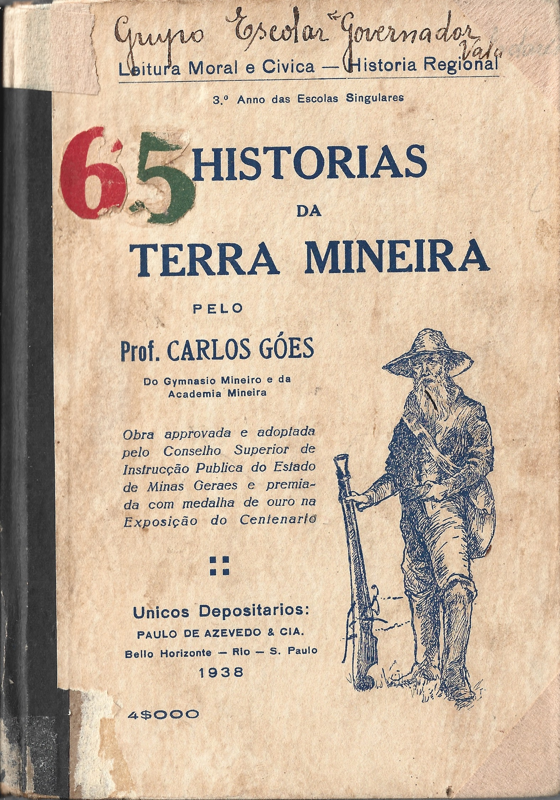
Leitura Moral e Civica — Historia Regional
Historias
da
Terra Mineira
por
(do Gymnasio Mineiro e da Académia Mineira)
Obra Approvada e Adoptada pelo Conselho Superior de Instrucção Publica do Estado de Minas
(Decima Segunda Edição)
(Com muitos desenhos)
Premiada com Medalha de Ouro
na Exposição Internacional do Centenario
Rio de Janeiro
Officinas Graphicas de Irmãos Pongetti
1938
Certidão
“Certifico que é do teor seguinte o parecer do Conselho Superior de Instrucção Publica do Estado de Minas Geraes sobre a obra didactica “Historias da Terra Mineira” (1.ª Serie) pelo Dr. Carlos Fernandes Góes, professor do Gymnasio Mineiro: “O Conselho é de parecer que seja approvado esse trabalho, de accordo com a opinião do relator. Bello Horizonte, onze de março de mil novecentos e treze. — J. Carvalhaes. — J. Rangel. — Egidio Soares. — Assis Chagas. — Gomes Horta. — Francisco Magalhães. — Bento Ernesto Junior. — A. Joviano.”
Nada mais continha o parecer, ao qual me reporto e dou fé. Sexta Secção da Secretaria do Interior, Bello Horizonte, 23 de Agosto de 1913. O Secretario do Conselho. — Vicente Racciopi.
Nº 1155
Obras Consultadas
DIOGO DE VASCONCELLOS — Historia Antiga das Minas Geraes.
JOSÉ PEDRO XAVIER DA VEIGA — Ephemérides Mineiras.
JOAQUIM FELICIO DOS SANTOS — Memorias do Districto Diamantinense.
IDEM — Acayaca.
OLIVEIRA LIMA — Formation historique de la nationalité brésilienne.
J. NORBERTO — Brasileiras Celebres.
ARCHIVO PUBLICO MINEIRO — Revista.
Titulo, auctoria e propriedade registrados ex-vi da lei n. 496 de 1 de Agosto de 1898. Serão apócryphos os exemplares, que não levarem a rubrica do Auctor. Direitos reservados. Os contrafactores estarão incursos no art. 345 do Cod. Penal.

(1935-1939)
Actual Presidente do Estado de Minas Geraes
Prefacio da 1.ª Edição
De ha muito a literatura escolar primaria de Minas resentia-se da falta de obra nos móldes da que ora temos a honra de offerecer á consideração dos Srs. mestres e dirigentes da instrucção publica.
O plano do presente livrinho começou de formar-se em nosso espirito, quando nos capacitámos de que é dever patriotico ensinar ás crianças de nossas escolas, sob a fórma pittoresca de contos, a historia retrospectiva d'esta grande fracção de nossa Patria — o Estado de Minas Geraes, berço que foi da Liberdade, celleiro com que se abasteceram a Metrópole e todo o resto da Colonia, centro de onde irradiaram para todo o Brasil os grandes movimentos nativistas, que vieram apressar o advento de nossa emancipação politica e administrativa. Neste livro vão compendiados os momentos historicos, que concorreram a radicar em Minas o sentimento de nacionalismo, sentimento que atirou, uns contra outros, Brasilicos e Reinóes, que marcou a linha separatista entre os dois povos, e que cimentou de vez as nossas aspirações á Independencia. O periodo cyclico da evolução historica de Minas póde assignalar-se pelos seguintes estádios:
- a) as Entradas e Bandeiras (descobrimento do sólo e sua consequente colonização);
- b) descobrimento das minas (ouro e diamantes) e sua consequente exploração;
- c) a immigração, e, como consequencia, o povoamento;
- d) o espirito de nativismo (Emboabas, Sedição de Villa Rica, Inconfidencia Mineira, etc.).
A educação civica da infancia é hoje o problema, que mais de perto entende com a concretização da nossa nacionalidade. Um povo só póde verdadeiramente ter a consciencia de sua nacionalidade, quando se orgulha de seu passado e de suas tradições, — o que só se dá dêsde o momento, em que esse povo conheça os passos de sua Historia, possua cultura bastante para aferir o valor de seus heróes, e se inspire nos grandes lances, que heroificaram a seus avoengos. O passado de um povo é fonte inexgottavel de ensinamentos e estimulos.
Os livros educativos da infancia têm de ser a um tempo repositorios de ensinamentos moraes e civicos: si aquelles educam, estes instruem; si uns formam o homem, outros preparam o cidadão; si uns plasmam o caracter, outros afeiçoam o espirito; si uns habilitam o individuo para a sociedade, outros o arregimentam para a nação.
A literatura infantil de contos da carochinha, de historias do outro mundo, de abusões e phantasmagorias é tudo quanto póde haver de mais nocivo ao espirito das crianças: torna-as supersticiosas, crédulas, medrosas, pusillanimes. Livros assim não deveriam ter curso nas escolas officiaes, porque, além dos inconvenientes apontados, nada adeantam civicamente. Têm só a vantagem de recrear a imaginação e empolgar a attenção, o que tambem póde ser conseguido em livros de leitura civica, em que a Historia e o Romance se casem harmonicamente.
A literatura infantil, mais do que qualquer outra, tem o estricto dever de ser sadia e forte, e, sobretudo, de ser nacional, local, regional. Nisso, mais do que em qualquer outro passo, deve um povo ostentar a nota de uma personalidade propria. O assumpto, o thema, o estylo, tudo terá de ser nacional, typicamente nacional, inconfundivelmente nacional. Dar ás crianças livros nesse genero é nacionalizal-as dêsde logo, é forral-as da condição ethnica decisiva — o amor ao que é seu, o apêgo ao passado de sua Historia, o orgulho de sua raça, a consciencia de sua nacionalidade, a absoluta confiança no futuro da Patria!
Taes foram os sentimentos, que nos dictaram a feitura da presente obra, que opportunamente offereceremos á consideração do colendo Conselho Superior da Instrucção Publica do Estado. Os contos vão dispóstos na ordem chronológica, em que se succederam os factos que narram; cada agrupamento de contos é referente a um dado momento historico decisivo; os factos narrados não são invencionices do auctor, mas factos historicos, absolutamente authenticos, segundo referem as obras, que consultámos, e que vão arroladas noutro local. Ao auctor coube a tarefa de vasar em contos o que era apenas do dominio da Historia, de avivar com as tintas do romance o que a Historia apresenta a nú, por fórma que o simples facto, romanticamente despido de interesse, assumisse, aos olhos da criança, o aspecto de uma aventura ou de uma epopéa, — isso sem prejuizo da verdade.
Oxalá possa este livro vir a preencher uma funcção: já não será um livro inutil, como tantos outros que nos têm cahido da penna.
Carlos Góes.
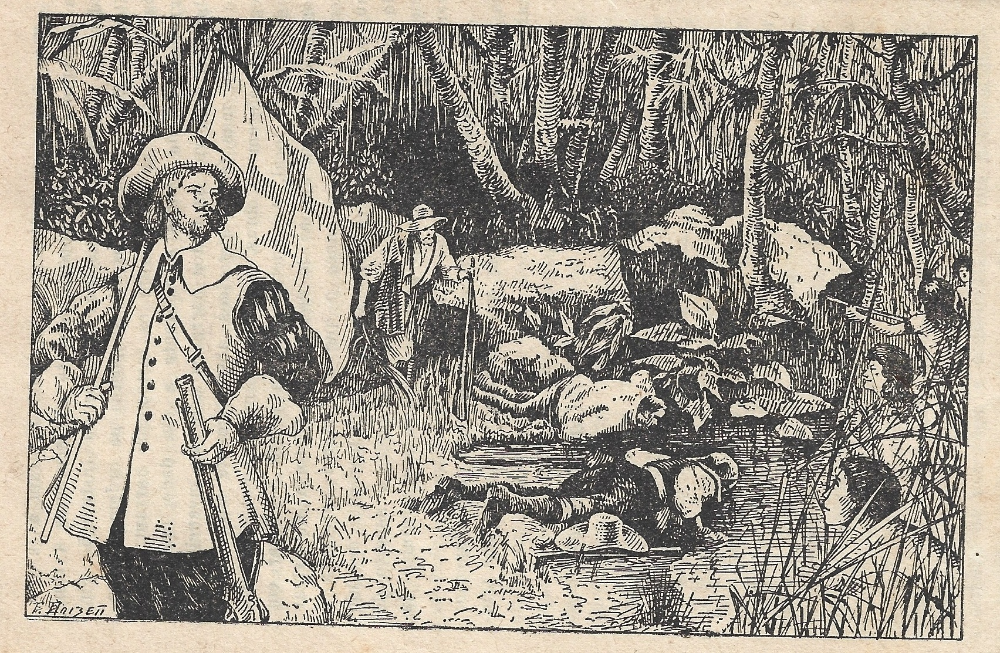
Os Bandeirantes
Assim se chamavam os homens, que no seculo 17 se internaram pelo sertão do Brasil, á procura de ouro e pedras preciosas.
O nome Bandeirantes provem de uma bandeira, que era empunhada pelo chefe do bando: essa bandeira era um panno desfraldado, ordinariamente de côr, trazendo ás vezes uma insignia ou brazão.
As primeiras expedições, que demandaram o interior do Brasil, eram pequenas, organizadas sem ordem e sem methodo, e compunham-se de poucas pessôas, quasi todas membros de uma mêsma familia: chamavam-se Entradas. Depois vieram expedições maiores, organizadas já com certa ordem e severa disciplina, e compostas de gente de toda especie — eram como um pequeno exercito. O chefe tinha um poder quasi absoluto sobre seus commandados: todos lhe obedeciam cegamente. Essas expedições maiores é que se chamavam Bandeiras.
Os Bandeirantes foram verdadeiramente os colonizadores do Brasil: a elles deve-se a propagação da lingua portugueza aos limites extremos de nosso territorio, o descobrimento das minas, a fundação de cidades, o povoamento do sólo, numa palavra — a colonização do Brasil e os fundamentos da nossa nacionalidade.
Vinham quasi todos de S. Paulo e da Bahia, que nessa epocha eram simples capitanias: eram, pois, Brasileiros, filhos já do paiz, amando o Brasil como sua patria, e perfeitamente acclimados com as intempéries do sertão.
Chamava-se SERTÃO a porção territorial, que ficava no interior do paiz, completamente desconhecida, habitada por indios selvagens (alguns delles anthropópagos, isto é, comedores de gente), por féras damninhas, por cobras venenosas, e ainda assolada por febres de mau caracter chamadas sezões e maleitas.
Para impedir que os Bandeirantes se internassem em seus dominios, procuraram os indios aterrorizal-os, contando que as florestas eram habitadas por entes sobrenaturaes, entre os quaes o Currupira e o Caapóra.
Os Bandeirantes não deram o menor crédito, pois eram bastante intelligentes para compreender que não póde haver entes sobrenaturaes.
Para abrir caminho pelo sertão, os Bandeirantes vinham munidos de facões, foices e outros instrumentos. Para transpor um rio, — ou o passavam a vau (si o rio não era fundo), ou alli mêsmo improvisavam uma balsa, em que se transportavam para a outra margem. Passavam o mêsmo rio tres, quatro, e mais vezes: d'ahi os nomes de Passa-Tres, Passa-Quatro, Passa-Cinco, Passa-Sete, Passa-Dez, Passa-Vinte, dados a diversas localidades do nosso Estado (1).
(1) Respectivamente nos municipios de Lavras, Passa-Quatro, Pomba, Piranga e Ayuruoca.
Alimentavam-se de caça do matto, de fructas silvestres, de mel de abelha, de peixe dos rios, etc.
Vinham ao acaso, confiados na bôa estrella de seu destino. Ao partir para o Sertão, despediam-se de sua mulher e filhos, contando como certo não mais voltar. Levavam mantimento só para as primeiras semanas. Acabado este, passavam a alimentar-se do que o sólo, a pesca e a caça lhes poderiam fornecer. Quando chegavam a uma encruzilhada e não sabiam para que lado tomar, — deixavam que a sorte decidisse: fincavam a bandeira na bifurcação dos caminhos e ficavam esperando que o vento a desfraldasse: para o lado que o vento impellisse as dóbras da bandeira, por esse é que seguiam.
Não possuiam os modernos instrumentos de engenharia, que ainda não tinham sido inventados. Os Bandeirantes mais preparados faziam uso do astrolabio, instrumento que permitte medir a latitude e a longitude de um logar, observando os astros. Os menos instruidos guiavam-se pelos cimos das serras e pelos valles dos rios, acontecendo-lhes muitas vezes errar o caminho, quando voltavam pela segunda vez, pois o aspecto das serras e o dos rios mudam com as estações, e a memoria nem sempre é fiel. Os rios e montes de nosso Estado, que mais se celebrizaram por ter servido de guia aos sertanistas, foram: O RIO DOCE e o RIO DAS VELHAS, o monte do ITAMBÉ (no norte de Minas, entre Serro Frio e Diamantina), o monte ITACOLOMY (a 8 kms. de Ouro Preto) e o monte ITATYAIA (um dos mais altos do systema orográphico do Brasil, na Serra da Mantiqueira, na divisa de nosso Estado com o de São Paulo).
A sua jornada comprehendia dois periodos: o do tempo das aguas e o do tempo da secca.
A época das aguas era o periodo das chuvas, — chuvas que alagavam os campos, faziam transbordar os rios e empapavam a terra. Não podendo seguir viagem, que faziam elles? Arranchavam num pouso, isto é, numa especie de chapada ou planalto abrigado dos ventos, armavam ahi as suas barracas, roçavam o matto, semeavam o milho, o feijão, a ervilha, a abóbora. Chamava-se arraial o logar, onde acampavam: dahi o nome de “arraial”, que ainda hoje se dá aos pequenos povoados.
Ao cabo de quatro ou seis mezes (exactamente quando cessavam as chuvas), já a plantação estava formada: era só colher os cereaes e com elles abastecer os alfórges. Tinham provisões para outros seis mezes, que era o tempo da secca.
Na época da secca as chuvas cessavam: o céo mantinha-se desannuviado, limpido e azul; o sol enxugava a agua dos póços e a lama dos caminhos. Podiam seguir livremente. Mas peior inimigo os esperava — eram as febres, produzidas pelas ferroadas dos mosquitos. Esses mosquitos nasciam das aguas estagnadas dos bréjos e dos pántanos, e formavam verdadeiras nuvens, que enxameavam os ares. Essas febres caracterizavam-se por tremôres no corpo, suôres frios, delirio. Os que podiam salvar-se, seguiam seu caminho; os que eram vencidos pela enfermidade, morriam pelas estradas. Cada corpo sepultado numa cova rasa, tendo espetada uma cruz tôsca de pau, era como um marco a attestar ás gerações vindouras a coragem d'esses intrepidos aventureiros.
No percurso de S. Paulo á zona, onde hoje se acha Ouro Preto, gastavam os Bandeirantes no minimo 2 mezes (1). Até á raiz da Serra da Mantiqueira vinham montados; da Serra da Mantiqueira por deante era impossivel seguir a cavallo, por causa das difficuldades, que offerecia o percurso, cortado de desbarrancados, rampas, perambeiras, etc. D'ahi por deante, isto é, em territorio mineiro, eram forçados a marchar a pé; quando muito, faziam-se transportar em rêdes, que eram carregadas por escravos. Não marchavam da manhã á noite, mas só até ao meio dia ou 1 hora da tarde. Nessa hora arranchavam para repouso, procurar caça, pescar, tirar mel de pau, etc.
O seu roteiro de S. Paulo a Minas (Ouro Preto) era o seguinte: Partiam de S. Paulo até á Serra da Mantiqueira, passando por Penha — Mogy — Jacarehy — Taubaté — Pindamonhangaba — Guaratinguetá (o mêsmo percurso, que faz hoje a Estrada de Ferro Central). Depois de transpósta a Serra da Mantiqueira (Amantiquira), o seu roteiro era: Pinheiros — Rio Verde — Bôa Vista — Ubahy — Ingahy — Rio Grande — Rio das Mortes e Serra de Itatyaia. Da Serra de Itatyaia partiam dois caminhos: um, que ia dar a Mariana e Ouro Preto; outro, que ia sahir no Rio das Velhas.
Devemos agora deixar aqui apontados os nomes dos principaes Bandeirantes, que concorreram para a colonização de nosso Estado, conhecido nessa época por Campos de Cataguás. Foram elles: SEBASTIÃO FERNANDES TOURINHO, vindo da Bahia, o qual se internou até aos rios Doce, Manhuassú e Jequitinhonha; ANTONIO DIAS ADORNO, vindo tambem da Bahia, o qual avançou até á Serra dos Aymorés; MARCOS DE AZERÉDO, que, partindo de S. Paulo, veiu alcançar o rio Sapucahy e o rio Grande, no sul de Minas; Fernão Dias Paes Leme, o mais notavel de todos, que varou o nosso Estado de sul a norte, ao cabo de sete annos de jornada, e de quem nos occuparemos mais detidamente na historia que segue; ANTONIO RODRIGUES ARZÃO, que passa por ter sido o primeiro, que descobriu ouro em nosso Estado; LOURENÇO CASTANHO TAQUES e muitos outros.
(1) O prazo de dois mezes parece-nos muito pouco, mas quem o affirma é ANTONIL (vid. Revista do Archivo Publico Mineiro, anno IV, fasciculos III e IV).

O Governador das Esmeraldas
Assim se chamava, por titulo que lhe foi dado pelo Rei de Portugal, o famoso bandeirante paulista Fernão Dias Paes Leme, que no segundo meiado do seculo 17 se internou em nosso Estado, para o fim de descobrir as MINAS DE ESMERALDAS, que ficavam numa serra muito falada por nome Serra Resplandescente.
Era elle varão de sessenta annos de edade (descendente dos Hollandezes, que haviam invadido o Norte do Brasil), de barba patriarchal, que lhe descia até ao peito, cabellos arruivados já meio embranquecidos, olhos azues, pelle alva e fina, nariz aquilino, alto de estatura, membros reforçados. Chefe de numerosa familia, possuia seis filhas e dois filhos, já todos crescidos e alguns casados.
Tendo resolvido firmemente vir a Minas descobrir para o Rei de Portugal as famosas esmeraldas de Arassuahy, — sua familia logo se oppoz a essa tenção, por considerar que, velho como se achava, não teria forças para enfrentar viagem tão arriscada e penosa.
Fernão Dias, porém, era homem que não cedia. Embora contrariando sua mulher e filhas, partiu de São Paulo para essa trabalhosa jornada, trazendo comsigo, além de muitos indios mansos e catechizados (seus escravos), um filho extra-matrimonial, um filho legitimo, um genro, afóra outros parentes e alguns amigos.
Sete annos gastou elle de S. Paulo até ITACAMBIRA (Norte de Minas), tendo percorrido a pé cerca de dois mil kilometros ou sejam quasi trezentas e quarenta leguas, sendo obrigado a abrir caminho no matto fechado, a enfrentar as feras, a vadear rios, a galgar serras — soffrendo toda sorte de privações, passando fome e sêde, e vendo morrer a cada passo, acommettidos de febres, muitos de seus companheiros...
Nesse seu percurso prestou assignalados serviços a nosso Estado: Transpoz a serra da MANTIQUEIRA; fundou o sitio, que mais tarde deu origem á cidade de BAEPENDY; fundou o arraial de IBITURUNA (hoje districto do municipio de Bom Successo), o de S. ANNA DO PARAOPEBA (hoje districto do municipio de Bomfim), o de S. JOÃO DO SUMIDOURO (hoje districto do municipio de Santa Luzia); margeou o RIO DAS VELHAS (chamado naquella época rio Uaimii), fundou o arraial de ITACAMBIRA e ahi descobriu, por fim, na serra que é hoje a serra do GRÃO MOGOL, as tão celebradas pedras verdes, que elle suppunha fossem esmeraldas, mas na verdade não passavam de turmalinas.
Todos os seus bens, que constavam de fazendas, gados e muitos escravos, elle os vendeu para gastar com a expedição, a qual lhe custou a quantia de sete mil cruzados. No meio da jornada, vendo-se sem recursos para pagar a alguns expedicionarios, mandou um portador a S. Paulo com carta a sua mulher, em que lhe pedia que vendesse o resto de suas propriedades para, com o producto resgatar seus compromissos. Ella assim o fez — chamava-se tão distincta senhora D. MARIA GARCIA BETIM, — e, não sómente vendeu a casa em que morava, mas até suas joias e as joias das proprias filhas! Exemplo digno de ser imitado! o mesmo portador da carta levou comsigo o dinheiro, a tempo ainda de Fernão Dias pagar as suas dividas.
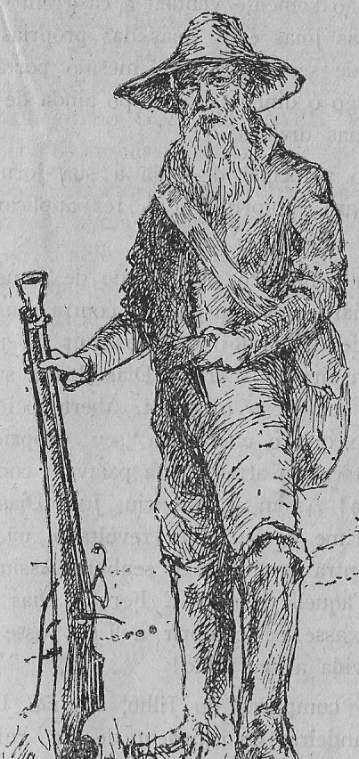
Mas o facto principal de toda a sua jornada foi o castigo que, para cumprir a Lei, fez applicar a seu filho José Dias.
Era este um mameluco (1) dotado de maus instinctos, o qual chefiára uma conspiração contra seu proprio pae no sentido de dissuadil-o de proseguir na jornada. Descoberta a conspiração, Fernão Dias deu a sua palavra de que faria sentenciar o cabeça. Aberto o inquerito, foi logo apurado que o chefe era seu proprio filho! Fernão Dias não voltou atraz a sua palavra: condemnou seu filho á forca! Assim se cumpriu. José Dias expiou no patibulo o crime de se haver revoltado, não contra seu pae, mas contra seu chefe e senhor! Assim dispunham as Leis d'aquelle tempo. E Fernão Dias não era homem que deixasse de cumprir a Lei, fosse embora para poupar a vida a seu filho!
Quanto aos cumplices do filho, Fernão Dias expulsou-os da bandeira, com ordem de se refugiarem longe de seu acampamento.
Retirando-se do Sumidouro, os cumplices de José Dias foram fundar um arraial no sitio, em que está hoje edificada a cidade de SETE LAGOAS, cujos fundamentos lançaram.
(1) Chama-se mameluco o filho de Indio com Branco.
De regresso para S. Paulo, satisfeito por ter cumprido sua missão, Fernão Dias Paes Leme, já com setenta annos de edade, adoeceu gravemente das febres mortiferas do sertão, vindo a expirar nos braços de seu filho legitimo GARCIA PAES, á margem do rio Uaimii (hoje Rio das Velhas).
Depois de morto, seu corpo foi embalsamado e transportado numa rêde, por seu filho Garcia, até á villa de S. Paulo, sendo sepultado no mosteiro de São Bento (de que o finado era irmão), e que em tempo mandára edificar á sua custa.
A Lenda das Pedras Verdes
No seculo 17 corria mundo a noticia de que no Norte de Minas ficava uma serra muito alta — a Serra Resplandescente, assim chamada porque, quando o sol nascente projectava sobre ella os seus raios, logo a serra começava a brilhar (resplandescer), cheia de scintillações verdes.
Os Portuguezes ouviram dos indios a noticia da existencia d'essa serra maravilhosa. A noticia correu mundo — foi parar a S. Paulo, á Bahia e até a Portugal.
Os reis de Portugal, muito ambiciosos, querendo apossar-se das riquezas do Brasil (que nesse tempo era sua colonia), prometteram mundos e fundos áquelles, que descobrissem a tão falada Serra, onde pensavam existir um thesouro egual ao das Mil e uma Noites.
Naquelle tempo “ser nobre” era a maior aspiração de um homem, que se prezasse. Receber do Rei o titulo de barão, conde, marquez, ou duque era a honra mais alta, que se poderia obter.
Muitos Brasileiros, desejosos de se tornarem nobres, resolveram sahir á procura da Serra Resplandescente. E' claro que o descoberto ficaria pertencendo ao rei de Portugal, que era o unico dono de todas as minas existentes e por existir no Brasil. Mas o descobridor receberia do Rei um titulo — o que não era pouco. E isso, por si só, constituia honra tamanha, que não havia quem a não quizesse.
Então muitos Bandeirantes largaram da Bahia e de S. Paulo, e internaram-se em nosso Estado á procura da Serra.
Era crença geral que a Serra devia conter muitas esmeraldas (pedras preciosas de cor verde), por isso que, quando o sol dardejava sobre ella, os reflexos da Serra eram eguaes aos de uma superficie encrustada de pedras verdes.
Então os Bandeirantes vieram. Foram: SEBASTIÃO FERNANDES TOURINHO, ANTONIO DIAS ADORNO e MARCOS DE AZEREDO. Este ultimo conseguiu attingir a serra luminosa, levou até de amostra algumas pedras ao Rei, mas, não tendo querido revelar o segredo de seu paradeiro, foi encarcerado, vindo a morrer na prisão.
O Rei (que era então D. Affonso VI), tendo ouvido falar que em S. Paulo havia um destemido Bandeirante por nome FERNÃO DIAS PAES LEME, deu-lhe o titulo de GOVERNADOR DA TERRA DAS ESMERALDAS, prometteu fazer nobre toda a sua descendencia, — com a condição, porém, de sahir pelo sertão a dentro para ir desencantar a Serra Resplandescente, que Marcos de Azeredo não quizera revelar.
Fernão Dias Paes Leme foi, conforme vimos na historia precedente. Só depois de muitos annos e muitas peripécias conseguiu chegar ao sitio verdadeiro, onde ficava a Serra. Tendo chegado á noite, esperou que o sol rompesse para certificar-se si era mesmo a Serra.
No dia seguinte, mal o sol abriu, — uma alterosa Serra em frente começou a jorrar uma luz verde e maravilhosa. No sopé da serra ficava uma lagôa — a Lagôa Vupabuçú.
Fernão Dias teve logo a certeza de que era alli mêsmo.
Não tardou muito que fosse aprisionado um indio da tribu dos Mapaxós, por nome Silvestre. Interpellado o indio, contou a razão por que a Serra continha em seu seio tantas esmeraldas.
Rezava assim a lenda (1):
A mãe d'Agua (Uiára) habitava as aguas na lagôa de Vupabuçú. O seu canto seduzia os guerreiros. Nas noites em que no Céo vogava a lua cheia (Cairê), a Uiára subia á tona d'agua e cantava. Canto tão doce e suave que attrahia os guerreiros. E a Uiára extendia os braços para o guerreiro, e o guerreiro afundava no lago e não voltava mais. Então os Mapaxós pediram ao deus da guerra (Macachéra) que salvasse os guerreiros. O deus da guerra mandou que a Uiára dormisse, mas que os Mapaxós velassem o seu somno e a sua vida. Os seus cabellos eram verdes do limo das aguas, que bórda o fundo dos lagos. E, muito longos, os seus cabellos entraram pela terra, e, como eram d'agua, em contacto com a terra, viraram pedra. E o Macachéra disse: “A vida da Uiára está em seus cabellos. Um fio de menos será um dia de vida que se pêrca. Quem arrancar as pedras verdes terá arrancado o somno, ou a vida da Mãe d'Agua. Os Mapaxós serão os guardadores do seu somno. E si a Uiára accordar, ou morrer, — uma grande desgraça pesará sobre Vós!
(1) Extrahida da obra do mêsmo auctor O GOVERNADOR DAS ESMERALDAS, peça nacional historica em 3 actos, in-16-1911.

Fernão Dias não acreditava em lendas nem em cousas do outro mundo. Por isso não teve medo da ameaça do Indio: mandou arrancar os cabellos verdes da Mãe d'Agua. Como foram arrancadas poucas pedras (que eram os seus cabellos), ella nem siquer chegou a accordar. Mas o indio amaldiçoou a Fernão Dias.
Não levou muito tempo que este, acommettido pelas febres, entrasse em agonia e morresse. O indio ingenuamente tomou a morte de Fernão Dias como um castigo de Tupan. Então, exultando de alegria, exclamou, contemplando-lhe o cadaver:
— O Emboába morreu... A Uiára viverá!
Bórba Gato
Assim se chamava o Bandeirante, que fundou a cidade de SABARÁ, uma das mais antigas de nosso grande Estado, edificada á margem do historico e lendario Rio das Velhas (antigo Uaimii).
Bórba Gato era Paulista de nascimento e genro de Fernão Dias. Veiu com seu sogro na celebre “expedição das esmeraldas”, e com elle descobriu em Sabará ricas minas.
Tendo Fernão Dias de proseguir em sua expedição para ir desencantar as Esmeraldas, que ainda estavam por descobrir, deixou em Sabará seu genro Bórba Gato tomando conta das minas.
Bórba Gato era homem de genio exaltado, destemido e valente, capaz das maiores temeridades. Sabendo disso, seu sogro recommendou-lhe, antes de partir, que não se alterasse para o futuro, si alguem, de ordem do Rei de Portugal, se lhe apresentasse para tomar as minas. Bórba Gato prometteu, mas infelizmente não poude realizar a promessa, porque as cousas chegaram depois a tal pé, que só por covardia poderia o Bórba recuar.
Foi o caso que o Rei de Portugal (que era então Dom Pedro II) despachou para o sertão de Minas um fidalgo hespanhol, cheio de muita prosápia, por nome Dom Rodrigo de Castel Branco, a quem o Rei conferiu o titulo de “Administrador Geral das Minas” e a quem deu jurisdicção sobre as minas descobertas e por descobrir.
Ora, muito antes, já no seculo 17, o Rei de Portugal (que era então Dom Affonso VI, antecessor de Pedro II) déra tambem jurisdicção a Fernão Dias Paes Leme sobre as minas, que o mêsmo viesse a descobrir, nomeando-o para isso “Governador da Terra das Esmeraldas”. Fernão Dias, ao partir de Sabará, transferiu a jurisdicção a seu genro, a quem deixou como successor, e a quem investiu na posse e senhorio das minas.
Chegando a Sabará o hespanhol Dom Rodrigo, quiz á viva força tomar, em nome d'El-Rey, as minas já sujeitas á jurisdicção de Fernão Dias por provisão anterior da Côrte de Portugal. O Bórba, naturalmente, oppoz-se, vendo nisso uma exauctoração a seu sogro. Começaram a arengar os dois chefes, não chegando a brigar por causa da intervenção de terceiros.
Acalmados os animos, combinaram os dois realizar a sós uma conferencia em sitio apartado, ahi comparecendo sem armas, apenas acompanhados por seus pagens. Assim fizeram. No que estavam na conferencia o Bórba exaltou-se, Dom Rodrigo tambem. Nesse entrementes, um dos pagens de Bórba, receando por seu amo, levou o trabuco á mira e varou de lado a lado o corpo de Dom Rodrigo, que logo cahiu morto, — d'onde veiu chamar-se o logar, em que occorreu esta tragedia, ALTO DO FIDALGO, nome que ainda hoje conserva.
Matar um “fidalgo” (houvesse, ou não, razão) constituia naquella época o maior dos crimes. O fidalgo era assim uma especie de “pessôa sagrada”, em quem não se podia tocar. Para elle todos os privilegios eram poucos. Quanto aos Brasileiros, nem ao menos podiam ser livremente senhores de suas propriedades. Tempos de usurpação e tyrannia!
Sabendo o Bórba que fôra responsabilizado pela morte de Dom Rodrigo, deliberou fugir para o “sertão bruto”, para assim escapar ao castigo da Côrte de Portugal. Assim fez, embrenhando-se em regiões sómente habitadas por indios, de quem se fez muito bemquisto e de quem se tornou o chefe (cacique). Ahi fundou muitas fazendas de criação, as quaes deram origem á industria pastoril, que faz hoje a riqueza de nosso Estado.
A barba, o cabello e as unhas cresceram-lhe; calejaram-lhe os pés e as mãos; a pelle requeimou-se-lhe, tomando uns tons fulvos e acobreados. Isso, alliado a uma voz de trovão e a um genio irascivel, fazia do Bórba uma apparição sinistra.
Annos se passaram. Ralado de saudades da familia, que deixára em Piratininga (S. Paulo), e de quem não tinha noticias, resolveu um dia Bórba Gato dirigir-se occulto á Villa de S. Paulo, para rever os entes, que mais caros lhe eram no mundo.
Foi. Suas filhas estavam moças, algumas casadas. Sua mulher vivia, posto que de meia edade. Com mil cautelas conseguiu o foragido penetrar na casa, que era sua.
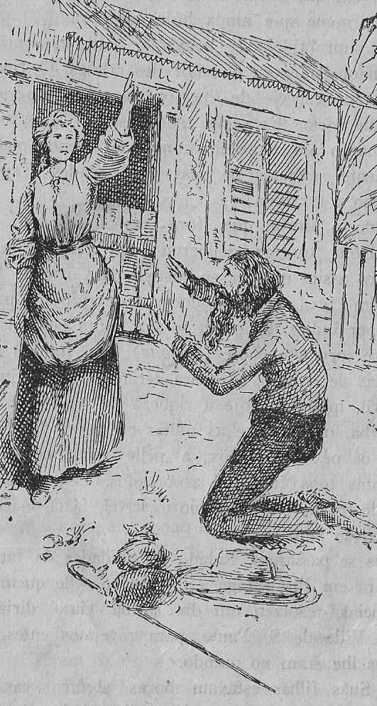
Bateu. Quiz a sorte que a primeira pessôa a apparecer-lhe fosse sua propria mulher, a quem logo reconheceu. Bórba Gato cahiu de joelhos, rendendo graças, e logo se deu a conhecer. Disse-lhe que alli viéra ás occultas, receando ser preso pelo crime que praticára, e que todo o seu desejo era revel-a, e ás suas filhas, para pôr termo a tanta saudade.
D. MARIA LEITE (que assim se chamava sua esposa) recuou aterrada! Não era possivel que aquelle homem feio, feroz, tôrvo, cabelludo, fosse de facto seu marido! Era talvez um louco, ou um impostor, que se inculcava como tal!
Debalde Bórba Gato jurou que era elle em pessôa! Debalde pediu-lhe que fizesse vir á sua presença suas filhas, em cujas frontes queria depor o ósculo paternal. Foram inuteis suas juras, como tambem tantas lagrimas e súpplicas!
D. Maria Leite intimou-o a sahir. Cabisbaixo, tremulo, envergonhado, Bórba Gato obedeceu.
E, demorando um ultimo olhar no rosto d'aquella, a quem se unira como esposo, e de quem se via agora repellido, — sahiu com o coração aos pedaços, a garganta afogada em soluços, os olhos em torrentes de lagrimas!...
O Anhanguéra
Bartholomeu Bueno da Silva era um destemido bandeirante paulista, que largou de São Paulo e se entranhou em Minas, atraz das Minas de SABARÁ-BUSSÚ, que antes haviam sido descobertas por Bórba Gato. Tinha a edade de 70 annos, quando promoveu essa incursão. Todos o tratavam por Feio, porque era effectivamente de feições horrendas.
Não decorreu muito tempo e vieram juntar-se-lhe dois genros e primos: um, JOÃO LEITE ORTIZ, que foi occupar as minas da Serra do Curral d'El-Rey, nas proximidades da que é hoje a capital de nosso Estado; outro, DOMINGOS RODRIGUES DO PRADO, que veiu depois a ser chefe de importante revolta em Pitanguy.
Bartholomeu Bueno Feio apossou-se de grande extensão de terras e minas, entre o Rio das Velhas e o Pará. Quando houve a Guerra dos Emboabas, pelejou ao lado dos Nossos, e foi adversario implacavel dos Portuguezes.
Acabada a guerra, Bartholomeu Feio achou mais acertado retirar-se de Minas, para evitar que a lucta recomeçasse. Tendo ouvido falar na existencia de riquissima mina de ouro lá para as bandas de Goyaz, — a Mina dos Martyrios, Bartholomeu resolveu partir com sua denodada gente para aquelles lados.
Foi. Organizou para isso uma grande expedição. Depois de jornada trabalhosa, em que teve de transpor serras, e vadear rios, e enfrentar toda sorte de perigos, — chegou finalmente ao sertão, onde começava o territorio, que é hoje o Estado de Goyaz.
Era essa região habitada por Indios Goyanazes, — por isso tomou o nome de Goyaz, que é uma abreviatura de Goyanaz. Esses indios eram muito bravios. Oppuzeram-se logo á entrada de Bartholomeu Feio. Este perguntou-lhes si de facto ficava para aquelles lados a Mina dos Martyrios; os indios responderam que sim. Isso mais aguçou o desejo de Bartholomeu Feio entrar aquella terra. Mas os indios eram em numero muito superior á sua gente: combatel-os era contar com a morte, pois seria facilmente vencido.
Vendo-se nesse aperto, que fez então Bartholomeu Feio? Não podendo vencer pela força, resolveu vencer pela experteza. O que veiu salval-o foi a instrucção, como vamos ver:
Bartholomeu conhecia a fundo a Historia do Brasil: era homem bastante instruido para aquelle tempo: fôra educado no collegio dos Jesuitas, em S. Paulo, então o melhor collegio do Brasil. Sabia que na Bahia um portuguez, que se salvára do naufragio (Diogo Alvares Correia), conseguira vencer os indios pelo terror, que lhes causára com o disparo de uma espingarda, — arma de fogo e de alcance, que então os selvagens não conheciam: d'ahi o appellido que lhe puzeram, de CARAMURÚ (homem do trovão).
Os indios Goyanazes já conheciam as armas de fogo usadas pelo homem civilizado: por esse lado não poderia aterrorizal-os. Resolveu, porém, imitar a façanha de Caramurú, servindo-se de outro objecto, que os selvagens não conhecessem.
No que os indios estavam se oppondo á sua entrada, Bartholomeu, com voz de trovão e uma cara muito feia e carrancuda, bradou:
— Si Vocês não me deixarem entrar, farei seccar todos os rios e lagos, e Vocês morrerão de sêde! Farei com que a agua vire fogo!
Os Indios não tinham instrucção alguma: eram muito broncos e estúpidos. Eram, sobretudo, supersticiosos, isto é, acreditavam em cousas do outro mundo, em factos sobrenaturaes. Os Goyanazes ficaram logo com medo da ameaça de Bartholomeu Feio. mas só acreditariam, si vissem com seus olhos. Então Bartholomeu lhes marcou o prazo de um dia e uma noite para realizar a ameaça.
Quando foi no dia seguinte, de manhã, ainda escuro, mandou saber dos indios a resposta. Estes disseram que se oppunham terminantemente á sua entrada. Então, com a voz mais retumbante e a cara mais carrancuda que na vespera, Bartholomeu disse que “iria virar a agua em fogo”. Os indios ficaram olhando, na duvida. Bartholomeu pegou de um morrão acceso na ponta: esse morrão era um canudo com duas pontas, cheio de pólvora secca: a ponta accesa ficou fóra d'agua: a ponta apagada (que estava tapada) elle a mergulhou n'agua para fingir que o fogo provinha de dentro da lagôa. Quando o fogo da ponta accesa do morrão se communicou á pólvora do canudo, — este começou a despejar de dentro para fóra d'agua um verdadeiro repuxo de fogo. Esse fogo espirrava longe, e, além disso, estrondeava, fazendo parecer (a quem fosse ignorante) que o fogo sahia das proprias entranhas da lagôa! Os indios ficaram espavoridos: — esparramaram todos. Uns pegaram a fugir; outros soltavam gritos; outros esperneavam no chão; estes cahiam de joelhos; aquelles escondiam-se no matto — todos, emfim, ficaram transidos de medo, pensando ter assistido um facto sobrenatural!
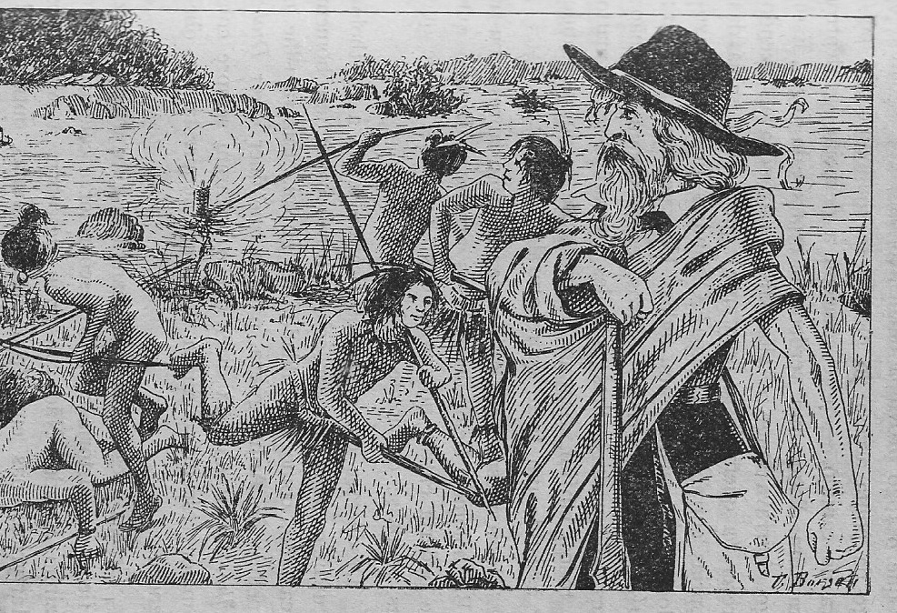
Nesse mêsmo dia o cacique da tribu apresentou-se a Bartholomeu Feio, depondo as armas, e dizendo que elle poderia entrar no campo dos Goyanazes, dêsde que lhes poupasse os rios e os lagos.
Dêsde esse dia os indios ficaram tendo a Bartholomeu Feio como um ser sobrenatural, como um homem encantado, como um alliado de Tupan. Puzeram-lhe o appellido de Anhanguéra, palavra que quer dizer Diabo Velho. Excusado será dizer que o trataram sempre com o maior respeito, e nunca deixaram de prestar-lhe obediencia.
Graças a essa manha Anhanguéra entrou em Goyaz, e ficou na Historia como o descobridor e colonizador do vizinho Estado. Não conseguiu descobrir a Mina dos Martyrios, mas encontrou outras, muitas outras, voltando riquissimo, carregado de ouro e pedras preciosas.
Ao entrar em S. Paulo, tendo então 80 annos de edade, foi recebido com muitas festas. Todos se admiravam de que elle houvesse podido amansar indios tão bravios como eram os de Goyaz.
O appellido de Anhanguéra dura até hoje. Em Goyaz os indios ainda falam de “um diabo velho, que quiz virar a agua em fogo, seccar os rios e os lagos.”
Por ahi se vê que a ignorancia é o maior atrazo do homem. Si os indios não fossem ignorantes, não teriam acreditado no embuste de Bartholomeu Feio e não se teriam deixado conquistar tão facilmente. Por outro lado se verifica que a instrucção é muitas vezes a salvação de uma pessôa: si Bartholomeu Feio não fosse instruido, como era, e não soubesse, pelos livros, do caso de Caramurú, succedido na Bahia, não o teria imitado e não se teria salvado.
As Minas de Ouro
Durante muito tempo, na época em que o Brasil era colonia de Portugal, ignorou-se que houvesse minas de ouro em nosso Estado. Até então só se haviam descoberto jazidas de turmalinas, no Norte de Minas, — pedras que por esse tempo não tinham nenhum valor, e a principio se suppoz que fossem esmeraldas.
O encontro das minas de ouro deu-se nos fins do seculo 17, quasi duzentos annos depois do descobrimento do Brasil, e foi, como sempre acontece, obra do acaso.
O primeiro rio, em que se notou a existencia de ouro em nosso Estado, foi o córrego Tripuhy, que banha o municipio de OURO PRETO, a poucos passos da ex-capital de Minas.
Um mulato paulista, vindo de TAUBATÉ, o qual percorria o sertão á cata de indios, que aprisionava para depois vender como escravos, e que já estivera nas minas de Paranaguá e Curityba (hoje Estado do Paraná), tinha arranchado nas immediações do sitio, onde depois se edificou Villa Rica. Sentindo sêde, desceu á procura de uma fonte. Acertou de dirigir-se ao córrego de Tripuhy, no qual mergulhou uma gamella para tirar agua. Notou logo que a agua era turva e escura; notou mais que no fundo da gamella estavam depositados uns granitos côr de aço. O mulato imaginou que os taes granitos seriam de ferro e que, portanto, valeriam pouco mais de nada. Todavia, por precaução, guardou-os comsigo, e levou-os para Taubaté. Alli chegando, vendeu-os a um bandeirante por nome Miguel de Sousa, á razão de meia pataca a oitava, pois tanto um como outro não sabiam que minério fosse aquelle. Este, por sua vez, fez remessa dos granitos ao Governador do Rio de Janeiro ARTHUR DE SÁ, para que mandasse examinar por pessôa entendida a ver o que era. Feito o exame por peritos, — verificou-se que era ouro finissimo, ouro gemmado, ouro de 23 quilates! (1)
Estavam assim descobertas as minas de ouro em nosso Estado. Ia começar para o Districto (que só depois desse facto é que passou a chamar-se das Minas, e antes se chamava CATAGUÁS) uma éra nova, — a éra ao mêsmo tempo da riqueza e da miseria, da oppressão por parte da Metrópole, e dos crimes de toda sorte entre os mineradores.
Miguel de Sousa, ousado e destemido, ao saber do resultado do exame, resolveu emprehender sózinho uma batida até ao sertão, para ver si apprendia o caminho ou itinerário para o Tripuhy. Foi. Depois de muitos mezes de travessia longa, depois de ter transposto, a pé, a SERRA DA MANTIQUEIRA, os Campos Geraes e a Serra das Taipas, veiu afinal a dar com o Tripuhy (rio de agua turva). Cateando, recolheu na batêa muitos granitos de ouro, o qual apresentava por fóra uma côr denegrida, côr de aço; d'ahi o nome de ouro preto, que foi dado ao ouro d'esse rio, e depois se extendeu a toda a região vizinha e á cidade, que veiu a ser capital de nosso Estado.
(1) O ouro na sua maxima pureza, isto é, sem liga de cobre, tem 24 quilates. “Quilate” é o peso correspondente á 24.ª parte da onça.
Miguel de Sousa, para guardar bem na memoria onde ficava o ouro do Tripuhy, marcou de olho uma montanha, que havia perto, e que era rematada por um pico, que se perdia nas nuvens, e se chamava o PICO DO ITACOLOMY. Esse pico tinha de ser, como foi, o “pharol dos Bandeirantes”, que, depois de Miguel de Sousa, vieram demandar as minas d'aquelle logar.
De posse do caminho ou roteiro, Miguel de Sousa voltou a Taubaté para então organizar uma entrada, que fosse explorar o thesouro do Tripuhy. Naquelle tempo, á pessôa que descobrisse uma mina, o Rei mandava dar 20 cruzados de gratificação e mais duas datas de terreno para minerar. Ora, isso era muito pouco, e não dava para tapar as despesas com a expedição. A' vista d'isso, Miguel de Sousa resolveu partir escondido, levando comsigo apenas alguns parentes, gente toda de sua confiança. Assim ninguem saberia da exploração da mina, e elle poderia minerar sossegado, sem ter que dar satisfação ao Rei.
Resolvido e disposto, Miguel de Sousa partiu em companhia de parentes seus. Partiram, não como bandeirantes (o que daria na vista), mas disfarçados em traficantes de indios. Essa partida deu-se em 1691, nove annos antes de acabar o seculo 17 e de começar o seculo 18.
Aconteceu, porém, que Miguel de Sousa e os seus não acertaram com o caminho: por mais que procurassem o Itacolomy, não o acharam. O mêsmo succedeu a outros, que vieram depois. Quatro expedições partiram de Taubaté para demandar o Tripuhy, — mas nenhuma conseguiu resultado!
Só no dia 24 de Junho de 1698 é que o Bandeirante Antonio Dias acertou de encontrar o Tripuhy! Quando seus olhos avistaram o Itacolomy, ficou deslumbrado — estava descoberto o thesouro!
Nesse dia é que começou verdadeiramente a exploração das minas de ouro em nosso Estado. E' uma data gloriosa, que nenhum Mineiro deve olvidar, pois lembra o principio da mineração, que tanta riqueza trouxe á Capitania, — ao lado tambem de muita miseria, de muito despotismo e de muita guerra.
Antonio Dias ficou sendo considerado o fundador de OURO PRETO, tanto que ainda existe lá um bairro com seu nome.
Descoberto o Ouro Preto, começou activamente a mineração de ouro.
Para evitar que houvesse brigas entre os colonos, foi creada uma Lei, que dispunha o seguinte: O que descobrisse uma mina, teria direito a duas datas, de 30 braças quadradas cada uma. O rei de Portugal e o guarda-mór das minas eram donos de uma data inteira, isto é, de 30 braças quadradas. As outras datas eram “dadas” por sorte, mas só se davam a quem tinha escravo, e na razão de 2 braças quadradas por um escravo. De sorte que quem tivesse 1 escravo, ganhava 2 braças; quem tivesse 5 ganhava 10, e assim por deante. Para ganhar uma data era preciso requerer ao Superintendente das Minas, pagando pelo requerimento uma oitava de ouro ou 1$500 réis em moeda de hoje.

A mina era uma verdadeira sorte ou lotaria. Havia datas, que produziam muito ouro; outras, que não davam para o custeio. Resultava d'ahi que, emquanto umas pessôas enriqueciam, outras ficavam reduzidas á miseria. Para que uma mina fosse bôa era preciso que désse pelo menos duas oitavas de ouro de “cada bateada” — ou sejam 3$000 em moeda de hoje. Havia bateadas, que davam 4, 5, 8, 10, 15, 20 e 30 oitavas de ouro! Uma bateada de 30 oitavas de ouro produzia 45$000 em moeda de hoje!
Todo o ouro das catas de OURO PRETO, MARIANA e RIO DAS VELHAS era de 1.ª qualidade. O melhor era o de Tripuhy (ouro preto), e tinha 23 quilates. O ouro peior era o ouro branco, côr de prata, do Ribeirão de Itatyaia, de que ninguem fazia caso.
O processo, de que usavam primitivamente para extrahir ouro, era o das catas. “Catas” eram grandes excavações feitas nas areias dos rios até encontrar a pedra do fundo do leito. Essas areias (ou cascalho) eram transportadas para as margens em vasilhas apropriadas, de fundo afunilado, chamadas batêas, carumbés. Mais tarde, por causa das enxurradas, substituiram esse processo por outro mais aperfeiçoado — o emprego de machinas tocadas d'agua (machinas hydraulicas): essa agua vinha canalizada de cima, dos pontos mais altos, em rêgos ou bicames, e com ella os mineradores esboroavam a terra, que cobria o cascalho.

Hoje está ainda muito mais aperfeiçoado: empregam-se machinas electricas, que fazem numa hora o serviço, que d'antes gastava dias, de sorte que o serviço da mineração de hoje, além de ser menos trabalhoso, é mais lucrativo. E' assim o Progresso: quanto mais as machinas são aperfeiçoadas, tanto mais barata vae ficando a mão de obra; quanto mais barata fica a mão de obra, tanto mais ganha o industrial.
Do ouro minerado uma quinta parte (quinto) pertencia ao rei: o quinto do ouro arrecadado em Minas Geraes attingiu, até a Independencia do Brasil em 1822, a 41.000 arrobas ou 615.000 kilos! Todo esse ouro foi parar ás mãos do rei de Portugal! Essas 41.000 arrobas de ouro produziram 250 mil contos! Foi com esse dinheiro que Portugal se salvou da ruina, depois do descalábro da India. Com essa somma fabulosa não só Portugal se sustentou a si, durante mais de um seculo, como sustentou ainda todo o resto do Brasil! Foram as minas de ouro de nosso Estado que livraram o Brasil da invasão extrangeira. Foi com o quinto do ouro que o rei se poude armar para defender a nossa Patria da cubiça extrangeira. As minas de ouro de nosso Estado foram a salvação de Portugal e do Brasil!

Depois o imposto do quinto foi substituido por outro chamado — capitação. Consistia em o senhor pagar todos os annos ao Rei 230$000 por cabeça (1) de escravo, que minerasse por sua conta; os escravos sujeitos a esse imposto chamavam-se — capitados. Mais tarde foi esse imposto substituido por outro — o de uma contribuição annual marcada pelo Rei (25 arrobas de ouro). Annos depois voltou de novo o imposto da capitação. Finalmente, de 1751 até a Independencia do Brasil (1822), voltou a vigorar de novo, como era no principio, o imposto do quinto. De sorte que o imposto do ouro, na época colonial de nosso Estado, percorreu a seguinte escala: quinto — capitação — contribuição annual — capitação — quinto.
(1) Cáput, capitis, no latim.
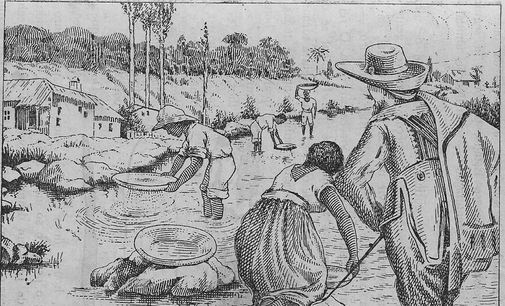
Quando correu noticia do descobrimento de minas de ouro em nosso Estado, começou a chover gente de todas as bandas para vir minerar. De Portugal, da India, da Bahia, de S. Paulo, do Rio de Janeiro, — de toda parte affluia gente para vir catear ouro. O rei de Portugal chegou a ter medo de que Portugal se despovoasse. E' por isso que o nosso Estado veiu a tornar-se o mais populoso do Brasil. Vinha gente de todas as qualidades: bons e maus, moços e velhos, ricos e pobres, fidalgos e plebeus, homens e mulheres. Essa gente attingiu em pouco tempo a 30 mil pessôas.
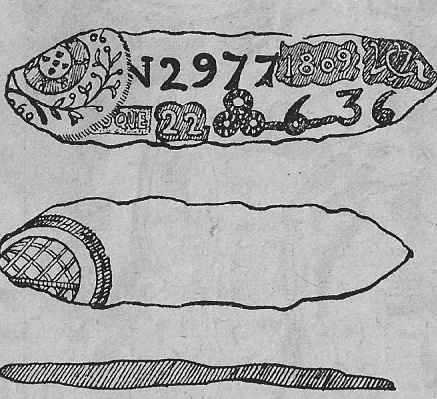
Do ouro que correu como moeda em Minas, houve duas especies: ouro em pó e ouro em barra; o primeiro só até o anno de 1730; o segundo do anno de 1730 em deante. O ouro em pó era o sahido do fogo: consistia em folhêtas. Até 1730 a Lei permittiu que o ouro em pó corresse em territorio de Minas servindo de moeda — mas só em territorio de Minas; era porém, terminantemente prohibido sahir de Minas para outra capitania, levando comsigo ouro em pó: quem tal fizesse perderia não só o ouro, que levasse comsigo na occasião, como outros bens que por ventura possuisse, e seria ainda degredado para a India por dez annos (Lei de 11 de Fevereiro de 1719). A permissão de correr em Minas ouro em pó como moeda foi revogada pela Carta Régia de 8 de Fevereiro de 1730, a qual ordenou que de então por deante só poderia correr ouro em barra. Para isso seriam creadas pelo Governo da Metrópole casas de fundição, onde o ouro em pó seria convertido em ouro em barra, sendo na mêsma occasião marcado com o sinete real, e descontando-se na mêsma occasião uma quinta parte do peso do ouro (quinto), que ficaria pertencendo á Real Fazenda. O ouro que sahia das casas de fundição, chamava-se ouro quintado, era do toque de 22 quilates e valia 14 tostões a oitava. Quem fosse encontrado com ouro em pó soffreria as penas da velha Lei de 11 de Fevereiro de 1719 (tomada do ouro, confisco de todos os bens e degrêdo para a India); só os mineradores podiam ter em seu poder ouro em pó, mas só até a quantidade de 500 oitavas. Era uma lei cruel e despótica; o povo recebeu-a com grande descontentamento, havendo até uma revolta em Ouro Preto (vide o conto Morro da Queimada) chefiada por Paschoal da Silva e Felippe dos Santos, e outra em Pitanguy.
Chamavam-se Registos, contagem os póstos de fiscalização do contrabando do ouro. Em lembrança d'esse facto ha ainda hoje com o nome de REGISTO uma estação (entre Sitio e Barbacena), á margem da E. Ferro Central, e ha uma villa — VILLA DA CONTAGEM — na zona do Oéste de Minas.
A unidade do ouro em Minas era a oitava (1). Sendo a oitava a unidade do ouro, passou a ser a unidade da moeda: de sorte que o preço minimo, por que se poderia comprar em ouro um objecto, era a oitava. O valor da oitava de ouro variou em Minas de 1$200 a 1$500, — nunca menos de 1$200, e nunca superior a 1$500. Por ahi se vê o quanto a vida já foi cara em nosso Estado, muito mais de que hoje.
Do ouro em estado bruto havia duas especies: o ouro de alluvião e o ouro das minas (subsólo). Ouro de alluvião era o que descia dos montes com as enxurradas das chuvas: ficava á flôr da terra, era muito facil de apanhar, não dava quasi trabalho, mas durava pouco, acabava logo. Ouro da mina era o que existia no fundo da terra em camadas denominadas veios ou bétas; era um ouro muito difficil de extrahir naquelles tempos, pois os Bandeirantes não possuiam para isso machinismos necessarios: esse ouro foi por elles abandonado...
A cubiça do ouro deu logar a muitas brigas, a muitos crimes, a muitos roubos, e a muitas mortes. Sobretudo a mineração em larga escala veiu encarecer demasiadamente a vida. Como ninguem cuidava de lavoura e todos queriam saber só de mineração, aconteceu que deixou de haver mantimento, sendo preciso mandal-o vir de Portugal e da França por preços excessivamente altos. Nunca a vida foi tão cara em nosso Estado, como naquella época, — na época em que o ouro abundava! Suprema irrisão do destino! Por uma gallinha pagava-se 6$000; por um queijo o mesmo preço; por 65 espigas de milho, 45$000; por um pastel, 1$500; por um alqueire de farinha de mandioca, 60$000. E tudo mais nessa proporção. (1)
(1) No antigo systema de pesos e medidas (chamado antigo por ser anterior ao systema metrico decimal, que se considera o moderno) chama-se oitava a oitava parte da onça (Onça = 8 oitavas). A oitava tinha 3 escrópulos ou 72 grãos e correspondia a 3 grs., 586. A oitava corresponde no systema metrico decimal a 0,003586 do kilogramma. O kilogramma corresponde no antigo systema a 2 arrateis, 2 onças, 6 oitavas, 2 escrópulos e 14 grãos.
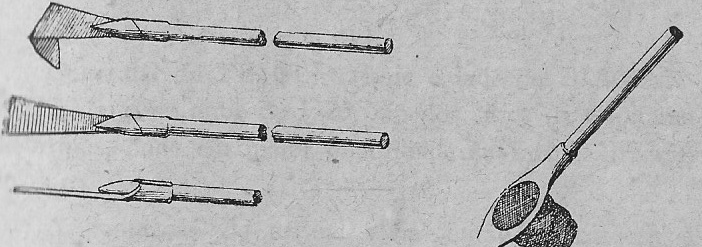
Nunca a miseria foi tão grande! Havia pessôas carregadas de ouro, que passavam fome, por não ter onde encontrar mantimento! Muitos escravos morreram de inanição. Foram encontrados cadaveres de pessôas abastadas, as quaes morreram de fome, com os bôlsos, os alfórges e as arcas atopetadas de ouro!
Era a fatalidade punindo a ambição, punindo a cubiça, punindo toda sorte de crimes, que se committeram naquella época por causa do vil metal!
(1) Calculando-se a oitava a 1$500, o valor d'aquella época. Hoje a oitava vale muito mais, regulando 7$000 (massiço) e 5$000 (em pó).
NOTA PARA PROFESSOR — Com respeito ao primeiro descobrimento de ouro no territorio de Minas correm duas versões historicas: uma é a que se contém no presente conto — é a versão de ANTONIL, auctor do primeiro trabalho dado á publicidade (1711) sobre cousas e assumptos de Minas (vid. Revista do Archivo Publico Mineiro, pag. 509, anno IV, fascic. III, IV, 1899); outra é a versão, que attribue a Antonio Rodrigues Arzão, bandeirante paulista de Taubaté, a prioridade d'aquelle descobrimento: — é a versão de CLAUDIO MANOEL DA COSTA (vide o poema Villa Rica, introducção ao mêsmo, 1897, editado em O. Preto).
O Descobridor dos Diamantes
O arraial do TEJUCO (hoje cidade de DIAMANTINA) era, no anno de 1723, um dos sitios da Capitania de Minas, onde em maior quantidade se fazia extracção do ouro.
A população do arraial vivia então descuidosa e feliz. Innumeras catas estavam em exploração; o ouro era tanto nas lavras, e tão á flôr das alluviões, que não havia, sinão o trabalho de apanhar. Todos enriqueciam. Era geral a abastança, assim como o contentamento. Raro era o dia, em que se não descobria um veio novo.
Aconteceu que, de mistura com o cascalho, onde estava o minério de ouro, começaram a apparecer certas pedrinhas duras, crystallizadas, transparentes, com a fórma de octoédros, isto é, de solidos com oito faces. Os mineradores não sabiam o que fosse aquillo, nem entre elles se encóntrava quem ao certo pudesse dizer o que era. Foi crença geral que esses granitos não passavam de pedaços de crystal, sem nenhum valor. A' falta de outra utilidade, os mineradores começaram a servir-se d'elles como de tentos no jogo de gamão, sem que ninguem fizesse caso.
Entre os mineradores encontrava-se o sargento mór Bernardo da Fonseca Lobo, que minerava no córrego do Tejuco e residia em modesto rancho proximo do arraial.
Succedeu chegar ao Tejuco um supposto frade extrangeiro, cujo nome até hoje se ignora. Dizia-se irmão da Terra Santa, vindo a Minas em commissão do seu superior, para cobrar o que fosse devido á irmandade e arranjar novos irmãos. Bernardo, hospitaleiro como todo Mineiro se préza de ser, offereceu ao inculcado padre agasalho em sua casa, convite que o mêsmo acceitou. Bernardo cedeu-lhe o melhor quarto da casa, e dispensou-lhe sempre o trato mais carinhoso.
Um dia foi a attenção do padre attrahida para os tentos, com que seu hospedeiro marcava as partidas de gamão.
Examinando-os com cuidado, logo conheceu que eram diamantes de primeira agua. E conheceu porque já estivera na India, onde tivera occasião de lidar de perto com pedras preciosas.
No que estava o padre examinando as pedras, entrou na sala Bernardo. O frade, fingindo-se calmo e indifferente, perguntou-lhe d'onde eram aquellas pedras, ao que respondeu Bernardo que eram do córrego, onde as havia em quantidade. Bernardo indagou do padre si tinham algum valor, ao que aquelle respondeu que não tinham nenhum valor, pois não passavam de pedaços de crystal. Bernardo fiou-se no que elle disse, pois não acreditava que um padre pudesse mentir. Este, apparentando não fazer caso das pedras, pediu a Bernardo para levar algumas comsigo, como recordação da hospedagem, que recebêra em sua casa. Bernardo, sempre amavel e cavalheiro, não só deu ao padre todas as pedras que tinha, como sahiu a arranjar mais em casa dos parentes e vizinhos.
O frade, cheio da ambição de enriquecer-se á custa da ignorancia de Bernardo e outros tejuquenses, logo premeditou fugir, carregando os diamantes, cujo valor era tanto, que o tornaria riquissimo muitas e muitas vezes!
Na noite d'esse dia o padre fechou-se por dentro em seu quarto, poz-se a contar e a pesar os diamantes, que recebêra de Bernardo. Ao mêsmo tempo fazia muitos calculos numa folha de papel, para avaliar o colossal cabedal, que lhe poderia resultar d'aquelle thesouro. Já era tarde da noite. Vendo luz no quarto do hospede e extranhando aquillo, Bernardo suppoz que o frade estivesse doente e necessitasse de alguma cousa: então, como o seu dever era soccorrel-o, para lá se dirigiu. Chegando á porta, bateu por tres vezes, mas o padre, entretido com o que estava fazendo, nem siquer ouviu. Então Bernardo, suppondo sempre que o padre estivesse em perigo, resolveu espiar pela greta da fechadura. Assim fez, pois era com a melhor intenção deste mundo. Qual não foi então a sua surpresa, vendo seu hospede todo embebido em empilhar as pedras, contal-as, pesal-as, dando com isso mostra de grande alegria? Sua surpresa augmentou mais ainda, quando ouviu distinctamente o padre dizer:
— 280 mil quilates em diamantes de primeira agua! E' um thesouro, que me fará mais rico que o proprio Rei!
Ouvindo a palavra diamantes, Bernardo comprehendeu que aquellas pedras não eram, como elle e toda gente suppunham, simples amostras de crystal. Comprehendeu mais que o padre, valendo-se de sua ignorancia, se tinha apoderado d'ellas, allegando falsamente que não tinham valor. Ora, aquelle homem (certo um aventureiro disfarçado em padre) era, pois, um ladrão, porque lhe mentira descaradamente, pagando com a traição e com o roubo a hospedagem, que tão generosamente lhe déra! Então Bernardo resolveu empurrar a porta e entrar de sopetão. Assim fez. Ao vel-o entrar tão de repente, o padre empallideceu. Bernardo, indignado, foi-lhe dizendo logo:
— Ouvi distinctamente o que o Sr. disse, quando falava sózinho. Essas pedras, que o Sr. me affirmou não tinham valor algum, são diamantes de subido preço. Estas pedras pertencem-me. Dê-m'as.
Então o padre, revestindo-se de um ar de falsa santidade, e fingindo uns modos muito brandos, e umas falas muito doces, disse:
— Dividiremos fraternalmente, irmão. O Sr. tem direito á metade, porque é dono; eu tenho direito á outra metade, porque fui eu quem descobriu. Encarrego-me de ir vendel-as, e comprometto-me a vir fazer restituição da metade, que lhe pertence. Fica combinado.
Ainda desta vez o bom do Bernardo acreditou na lábia do padre. Despediu-se d'elle e foi deitar-se.
No dia seguinte, ao amanhecer, Bernardo veiu ao quarto de seu hospede para saber d'elle. Já não o encontrou nem aos diamantes. Durante a noite o padre fugira pela janella, montando depois num dos cavallos, que estavam na estribaria. Levára comsigo todos os diamantes.
Bernardo ficou muito desconsolado, mas não revelou a ninguem o seu segredo. Arranjou com os amigos e vizinhos outros diamantes, encheu com elles um picuá e resolveu ir a Lisbôa revelar ao rei de Portugal a existencia de diamantes na Capitania de Minas.
— De certo (pensava Bernardo) o rei, para recompensar-me, far-me-ha nomear Vice-Rei do Brasil, ou, pelo menos, Governador da Capitania e Capitão General. Dar-me-ha o titulo de Marquez: far-me-ha nobre. Cumular-me-ha de honras e distincções. Serei o primeiro homem da Colonia! Em tróca do meu segredo, Portugal será então o reino mais rico do mundo! Os diamantes do Tejuco, e mais os que viérem a extrahir-se noutros logares, darão para comprar mil esquadras, com que Portugal poderá coalhar os mares! O rei de Portugal será o Rei do Mundo, mas eu, Bernardo da Fonseca Lobo, serei o Vice-Rei do Brasil!
Era a ambição, que lhe estava incutindo esses desejos de grandeza louca e desmedida.
Resolvido a realizar o seu sonho de grandeza. Bernardo, um dia, sem prevenir a ninguem, desappareceu do Tejuco. Depois de andar por caminhos occultos, com receio de ser visto e descoberto, chegou afinal ao Rio de Janeiro, onde tomou navio, que o levou a Portugal.

Era rei nessa occasião o senhor Dom João V, monarcha esbanjador, dissoluto e arbitrario.
Introduzido na sala de audiencia, Bernardo apresentou-lhe os diamantes no picuá, e revelou o segredo de sua existencia no Brasil, cousa que até então se ignorara completamente.
Os olhos do rei scintillaram de ambição. Suas mãos mergulharam no picuá, e por muito tempo estiveram apalpando as pedras, a pesal-as, emquanto Bernardo lhe ia encarecendo as difficuldades por que passára, para arrancal-as do sólo e vir trazel-as ali a Sua Majestade. O rei nem o ouvia, todo embebido nas pedras. Depois de meia hora de audiencia e sem ter-lhe dado a menor attenção, — D. João fez sahir da sala Bernardo como importuno.
Muitos dias esteve o ingenuo Bernardo em Lisbôa, á espera de que o Rei o nomeasse Vice-Rei do Brasil!
D. João V riu-se de sua pretensão, e por muito favor o nomeou tabellião e capitão-mór da VILLA DO PRINCIPE (Serro Frio), cargo que Bernardo exerceu por pouco tempo e depois abandonou, pois não lhe dava para viver.
Bernardo, tendo ido revelar ao rei a existencia de diamantes no Brasil, veiu apressar a tyrannia, que dêsde logo começou a opprimir os Mineiros. De então por deante não houve mais sossego no Tejuco.
Começaram as rivalidades e as brigas entre os mineradores, começaram as violencias e as exigencias por parte da Metrópole, representada pelos agentes da Real Fazenda.
Pobre, desamparado e obscuro acabou seus dias Bernardo da Fonseca Lobo, o visionario que sonhára vir a ser Vice-Rei do Brasil!
Assim foi punido de sua desmedida ambição...
O Livro da Capa Verde
Quando em Portugal o Rei recebeu noticia do descobrimento de diamante no Brasil, não coube em si de contente. Logo que a novidade se espalhou por Lisbôa, foi tamanha a alegria dos Portuguezes que mandaram repicar os sinos, organizaram procissões, celebraram tedeums e renderam graças ao Todo Poderoso.
D. João V (assim se chamava o rei) mandou de presente algumas amostras de diamantes ao Papa, e recebeu muitas congratulações dos outros monarchas da Europa.
Ora, antes de se descobrirem as minas de diamantes, já Portugal nadava em riqueza por causa do ouro do Brasil. A capital do reino tornára-se uma das mais ricas e mais bellas da Europa. O rei mandou edificar o palacio de Mafra e o aqueducto de Lisbôa com o ouro que foi de Minas, e fez ainda muitos outros gastos. Imagine-se agora com o descobrimento dos diamantes, sabendo-se que o diamante valia muito mais do que o ouro!
Doloroso contraste! Emquanto os Portuguezes deliravam de contentamento, os Brasileiros ralavam-se de tristeza, imaginando que, assim como tinham soffrido da Metrópole tantos vexames por causa das minas de ouro, — maiores vexames iriam agora soffrer por causa das minas de diamantes.
Si assim os Brasileiros pensavam, peior veiu a acontecer.
A principio a mineração do diamante era livre: cada um podia minerar, dêsde que tivesse carta de data. “Carta de data” era um papel, que dava direito á pessôa de minerar. Mas durou pouco.
Não levou muito tempo, o rei prohibiu que se tirassem diamantes: quem minerasse escondido e fosse descoberto, seria degredado para a Africa por 10 annos, e perderia todos os seus bens, que seriam tomados. Essa prohibição durou 7 annos.
Depois foi creado o imposto da capitação, isto é, por escravo que trabalhasse na mina o senhor teria de pagar um tanto de imposto.
Depois o rei nomeou um funccionario encarregado de fiscalizar a mineração — chamava-se INTENDENTE DOS DIAMANTES.
Foi creada uma lei ordenando que o diamante de mais de 24 quilates pertenceria ao rei: o escravo que o achasse e o entregasse, ficaria fôrro. Si fosse encontrado por um homem livre, este receberia 400$000 de gratificação.
Finalmente o rei resolveu conceder a mineração dos diamantes só a uma pessôa Essa pessôa ficaria sendo o unico, que poderia minerar. Em conpensação teria de pagar ao rei, todos os annos, uma grande somma — muitos milhões de cruzados. Durou 32 annos este systema.
O 1.º arrematante foi o sargento mór JOÃO FERNANDES DE OLIVEIRA. O 2.º foi este mesmo, associado a FRANCISCO FERREIRA DA SILVA. O 3.º foi FELISBERTO CALDEIRA BRANT, de quem falaremos na historia seguinte. O 4.º foi o DESEMBARGADOR JOÃO FERNANDES DE OLIVEIRA, filho do primeiro contractante de egual nome.
Todos os contractadores de diamantes, excepto FELISBERTO CALDEIRA BRANT, impediam que mais alguem minerasse: de sorte que, emquanto enriqueciam, o resto do povo vivia na miseria. O desembargador João Fernandes de Oliveira enriqueceu tanto, que veiu a ser o homem mais rico de Portugal e do Brasil.
A pessôa que minerasse escondido, chamava-se garimpeiro. O garimpeiro que era pilhado, tinha de entregar todos os seus bens. E, si não tinha bens? Nesse caso era preso e mettido no tronco. A's vezes acontecia o garimpeiro fugir na hora, em que era descoberto. Que succedia então? Os rondantes das minas o perseguiam até prendel-o. Si o garimpeiro resistia á prisão, alli mêsmo o matavam sem mais nem menos, como se mata um animal acuado. Os mais felizes eram enterrados na estrada. Quando não, lançavam seus corpos no ribeirão mais proximo, ou os deixavam insepultos, para serem devorados pelos urubús.
Não levou muito tempo e o rei annullou o contracto com João Fernandes, obrigando-o a entrar para os cofres com onze milhões de cruzados. João Fernandes entrou com essa quantia. Seus haveres ficaram um pouco abalados, mas elle não deixou, por isso, de continuar a ser o homem mais rico da Colonia.
Depois desse facto o rei mandou que a extracção de diamantes se fizesse por conta d'elle. Chamava-se Real Extracção. Para isso creou-se um regulamento especial denominado Regimento Diamantino. Esse regimento continha as prohibições mais absurdas, e impunha penas severas aos contrabandistas de diamantes. O povo chamava-lhe Livro da Capa Verde, porque o unico exemplar d'elle, que veiu ao Tejuco (DIAMANTINA), fôra encadernado com capa de marroquim verde. Qualquer pessôa podia ler o Livro da Capa Verde, pedindo licença, mas era prohibido tirar d'elle uma cópia.
Não obstante, muitas cópias foram tiradas, e algumas ainda existem em Diamantina. Durou 56 annos a Real Extracção. Os diamantes extrahidos durante esse tempo montaram a 1 milhão e 320 mil quilates.
O povo do Tejuco tinha horror ao Livro da Capa Verde. Eram taes os vexames e violencias mandados executar por esse livro, que só pronunciar o nome — Livro da Capa Verde — enchia de medo a quem ouvisse.
Cansado de soffrer a oppressão do REGIMENTO DIAMANTINO, — um dia o povo do Tejuco revoltou-se. Foi no anno de 1821, um anno antes da Independencia do Brasil. Por toda parte, nas ruas, nas sacadas das casas, o povo gritava:
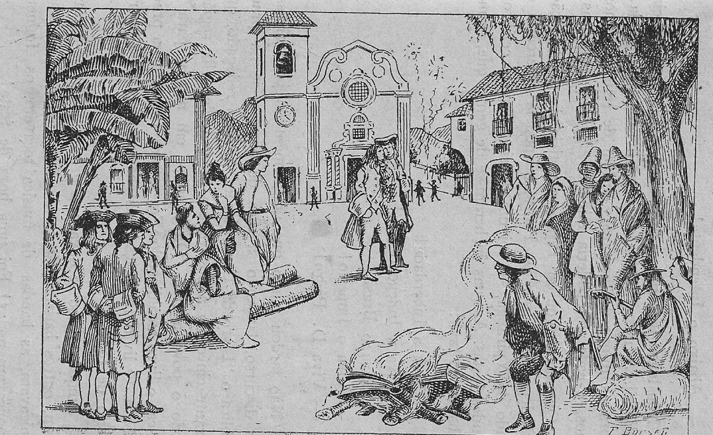
— Fóra o Livro da Capa Verde!
— Abaixo o Intendente!
Não levou um anno e proclamou-se a Independencia do Brasil. A nossa Patria respirou livre e desafogada. Agora as minas de diamantes seriam de seus legitimos donos, e cada um poderia minerar em suas grupiáras.
Quando chegou ao Tejuco a noticia da proclamação da Independencia por D. Pedro, quando lá repercutiu o Brado do Ypiranga, — foi um delirio. O povo celebrou grandes festas. As ruas encheram-se de gente, que, acima e abaixo, gritava:
— Viva a Liberdade!
— Viva a Independencia!
— Viva o Brasil!
— Viva o Imperio!
— Viva D. Pedro!
Não tardou muito que um homem do povo fizesse um discurso, lançando a idéa de queimar-se na praça publica o “Livro da Capa Verde,” o livro renegado, que durante cincoenta annos vexára o povo d'aquella região. Todo o povo apoiou. Dirigiram-se em massa para ir buscar o livro amaldiçoado. Fez-se uma fogueira na praça publica. O livro foi lançado ás chammas no meio do regosijo de todos.
Emquanto isso se dava, uns gritavam, outros applaudiam, outros batiam palmas. Ao mesmo tempo os sinos repicavam, as bandas de musica tocavam, os foguetes espoucavam no ar! Foi uma hora de festa!
Em poucos segundos o Livro da Capa Verde ficou reduzido a cinzas.
Só depois que a fogueira acabou de arder, é que o povo se dispersou. Mas o enthusiasmo não parou. Os gritos continuaram:
— Viva a Liberdade!
— Viva a Independencia!
— Viva o Brasil!
— Viva Dom Pedro!
Cabeça de Ferro
José Antonio de Meirelles Freire foi o setimo INTENDENTE DOS DIAMANTES no TEJUCO (DIAMANTINA).
Era homem mau, auctoritário, que moveu guerra de morte aos garimpeiros. Committeu as maiores violencias e atrocidades. Sobretudo era homem muito teimoso: quando queria uma cousa, não havia quem o torcesse. D'ahi o appellido, que o povo lhe poz, de CABEÇA DE FERRO.
No anno de 1785 o Tejuco soffria, a mais não poder, o despotismo do Intendente. Já não havia para quem appellar. As prisões estavam atulhadas de gente. Muitos morriam dos maus tratos, que lhes davam; outros succumbiam de fome; quasi todos eram mettidos no tronco.
“Cabeça de Ferro” não tinha pena de ninguem: era um verdadeiro coração de pedra. Não havia empenho, não havia pedido, a que elle attendesse.
Devendo realizar-se grande festa em um dos templos do arraial, foi convidado para prégar o sermão o PADRE JOAQUIM BRANDÃO, vigario da VILLA DO PRINCIPE (SERRO). Era o padre Brandão orador de fama: seus discursos arrebatavam. Além disso era homem direito, que exercia sua profissão com verdadeiro sacerdócio.
Quando o padre Brandão chegou ao Tejuco, todas as esperanças se voltaram para elle. Pediram-lhe que fosse interceder junto a Cabeça de Ferro em favor dos pobres presos, e que obtivesse do intendente não perseguir tanto os garimpeiros, que — coitados! — não tinham outro modo de vida sinão faiscar nas areias. O padre foi. Mas, quem disse que o Intendente fez caso? Cabeça de Ferro limitou-se a ouvir a parolagem do padre. Por fim abanou a cabeça como quem diz:
— E' impossivel.
O padre sahiu descoroçoado. Mas nem assim esmoreceu, como vamos ver:
Chegou o dia da grande festa. A egreja encheu-se de povo. As tribunas, as cadeiras, os bancos, o côro, — tudo regorgitava. As principaes pessôas do logar compareceram: as senhoras com seus vestidos de grande roda e muitas joias; os homens com suas rabonas e jaquetas. O intendente foi tambem, rodeado de uma comitiva tão grande, que mais parecia um estado-maior.
Deu a hora do sermão. O padre Brandão subiu os degraus do pulpito. Era já velho, com a cabeça meia branca, os olhos fundos, as costas vergadas. Mas tinha uma voz forte e energica, que se ouvia por todo o templo. Houve um silencio geral — todos estavam attentos.
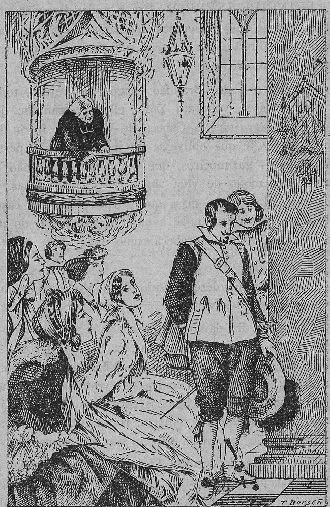
O padre primeiro se occupou do thema religioso do dia. Depois sua voz foi subindo de tom, seus olhos começaram a fuzilar, sua cabeça empinou-se, suas mãos batiam no ar. Então o trémulo velhinho, encarando o Intendente, que se achava proximo, começou a atacar a sua oppressão contra o povo. Disse que os Juizes devem ser indulgentes, e não devem punir seus subordinados, impellidos pelo odio ou pela vingança, mas guiados só pela justiça ou pela moral. As suas ultimas palavras foram estas:

“— Ministro de Satanaz! Como aferrólhas miseros innocentes nesse horrivel calaboiço, cujo unico crime foi terem cavado na terra os thesouros, que a Providencia ahi occultou, para sustentarem a vida?!
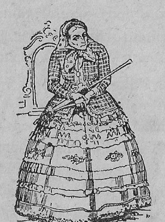
“Um dia, talvez em breve, a innocencia clamará contra ti no tribunal divino, longe das paixões do mundo; e a maldição de Deus pesará sobre a tua cabeça!”
Ouvindo estas palavras, o intendente curvou a cabeça. Tambem o auditorio estava de cabeça baixa, receando que o intendente se encolerizasse e viesse depois desabafar a sua cólera contra o povo.
Todos receavam que, acabado o sermão, Cabeça de Ferro mandasse prender e castigar o padre.
Mas não succedeu assim. No dia seguinte, Cabeça de Ferro mandou soltar todos os que se achavam presos injustamente, como mandou tirar do tronco os que por essa fórma se achavam presos.
A contar d'esse dia o Intendente não foi tão cruel como d'antes. O povo do TEJUCO serenou um pouco.
O que não conseguira toda a população do arraial com o seu clamor de queixas, conseguira o simples sermão de um vigario da roça, sem outra arma, sem outro argumento sinão a palavra, — mas a palavra da verdade, aquella que vae direito ás consciencias, aquella que fulmina os erros e os crimes, aquella que institue em nós um tribunal inexoravel!
Izidóro, o Martyr
Um dos garimpeiros de mais fama no TEJUCO (Diamantina), pela nobreza de seus sentimentos, por sua indómita coragem, foi o pardo Izidóro, de quem nos vamos occupar na presente historia, veridica como todas as deste livrinho.
Izidóro era um mulato alto, musculoso, dotado de grande força e agilidade. Tendo nascido escravo, serviu muitos annos a seu senhor, um tal frei Rangel, que vivia de minerar. Graças a isso Izidóro, desde menino, familiarizou-se com o serviço da mineração, vindo a adquirir tamanha pratica d'esse officio que, depois de homem feito, não houve no Tejuco ninguem, que fosse mais entendido do que elle.
Tendo seu senhor mandado a Izidóro que faiscasse em lavras, que pertenciam á Real Fazenda, foi preso como contrabandista e confiscado a seu senhor, passando então a pertencer ao serviço do rei, sendo obrigado a trabalhar, como galé, na Real Extracção. Izidóro não tinha culpa de haver contrabandeado: si o fizera, fôra por ordem de seu senhor. Homem de brio, envergonhando-se de trabalhar de calcêta, sendo, como era, innocente, — resolveu fugir. Para executar essa tenção, teve de limar os ferros, que lhe prendiam os pés e as mãos, e de illudir a vigilancia dos guardas (fulâres).
Liberto, Izidóro fez-se garimpeiro. Como acontecesse fugirem na mesma occasião muitos outros escravos, foram todos ajuntar-se a Izidóro, que se tornou assim chefe de uma tropa de 50 garimpeiros, todos quilombólas. Izidóro, que era um chefe ás direitas, — sujeitava seus commandados á mais severa disciplina: não podiam furtar nem committer a mais leve falta contra a honra alheia. Si tal fizessem, elle proprio os puniria com todo o rigor.
Perfeito conhecedor de toda a mineração do valle do Jequitinhonha, Izidóro sabia onde ficavam as jazidas ainda não descobertas ou não exploradas. De posse dos diamantes, Izidóro em pessôa os levava ao arraial para vender. Para isso disfarçava-se de modo que não fosse reconhecido pelos guardas. Entretinha commercio com as pessôas mais importantes do Tejuco, as quaes lhe dispensavam a maior protecção.
Era então Intendente dos Diamantes João Ignacio, que, por mais que pelejasse por prender Izidóro, nada conseguiu: todos os seus esforços nesse sentido foram baldados. Então, desesperado, João Ignacio recorreu a um meio extremo: prometteu larga recompensa, um grande premio a quem lhe trouxesse Izidóro, vivo ou morto! Foi tempo perdido: Izidóro era tão estimado de todos que ninguem se animava a denuncial-o ou trahil-o — continuava livremente a fazer o seu commercio, entrando no arraial, ou d'elle sahindo, sem ser incommodado.
A José Ignacio succedeu um intendente de bôa paz — Modesto Antonio Mayer, que foi, de todos, o que menos perseguiu os garimpeiros. Durante o tempo de seu governo, Izidóro poude livremente exercer o seu officio.
Mas, “como não ha bem que sempre dure”, a Modesto Antonio Mayer succedeu outro Intendente, que se tornou implacavel perseguidor de Izidóro — o famoso intendente Camara. Seu nome todo era Manoel Ferreira da Camara Bittencourt (Desembargador). Era natural da Comarca de Serro Frio.
Manda a Justiça citar que o Intendente Camara introduziu grandes melhoramentos em Diamantina. Entre outros, a fundação de uma fabrica de fundir ferro, no morro do Pilar (1809), em cujas fornalhas se poderiam derreter de uma só vez 30 quintaes de minerio de ferro. A fabrica parou, por falta d'agua para mover os machinismos. Que fez então o Intendente Camara? Abriu um grande canal, em que a agua era conduzida dêsde o Rio Picão até á fabrica. A fabrica começou então a produzir e d'ella sahiram muitas barras de ferro. (1)
Camara usou de todos os meios para prender Izidóro: organizou batidas contra elle, esperou-o em mais de uma tocáia, espalhou patrulhas por todos os pontos, onde era costume Izidóro passar. Prometteu recompensar generosamente a quem denunciasse o seu esconderijo, ou o mostrasse ás patrulhas. Por fim começou a usar de violencia contra as pessôas, de quem desconfiava fossem seus cumplices. Tudo em vão!
(1) Annuario de Minas do Dr. Nelson de Senna, anno II, pag., 187.
Aconteceu, porém, que um dos companheiros de Izidóro o trahiu como um Judas. Tentado pela grande somma, que o Intendente promettera a quem o denunciasse, esse companheiro — alma vil e indigna — foi revelar a Camara o dia, hora e logar, em que as tropas reaes poderiam atacar a Izidóro desarmado.
Assim se fez. As tropas de pedestres marcharam em grande numero contra Izidóro, indo encontral-o só e desarmado. Fizeram o cêrco. Apesar de sem munições e sem gente, Izidóro enfrentou denodadamente as tropas de pedestres, e defendeu-se até cahir baleado por tres tiros. Só então conseguiram deitar-lhe a mão — prenderam-no. Pois, apesar de gravemente ferido e desarmado, em estado de não poder defender-se, ainda aquella gente assassina o espancou, o maltratou, o injuriou!
Corria o mez de junho de 1809, quando a população do Tejuco foi alarmada com a entrada de Izidóro, com o corpo a escorrer sangue, ferido por bala em tres pontos. Vinha amarrado á cauda de uma cavallo, com a cabeça pendida sobre o animal, não porque tivesse vergonha de ir preso (pois era innocente), mas porque as dores que penava, eram tantas que lhe dobravam o corpo.
Em torno d'elle, apparatosamente armados, arrotando valentia, vinham os pedestres, que o haviam prendido.
Vendo-o passar, o povo, entre lagrimas, dizia:
— Ahi vem Izidóro, o innocente.
Nesse dia fizeram-no descansar para recobrar forças. No dia seguinte foi levado á presença do Intendente Camara, que o submetteu a apertado interrogatorio.

Camara queria a todo transe que Izidóro denunciasse as pessôas, a quem vendêra diamantes. Ora, naquelle tempo, comprar diamantes a um garimpeiro constituia crime severamente punido. Si Izidóro revelasse as pessôas com quem contrabandeára, muitas familias do Tejuco ficariam desgraçadas. Mais Izidóro era uma alma nobre, um caracter puro, um coração grande. Seria incapaz de denunciar quem quer que fosse, — muito menos ás pessôas, que o haviam protegido, e que eram, além de tudo, as mais importantes do logar.
O interrogatorio durou duas horas. Camara repetiu muitas vezes a mêsma pergunta:
— A quem vendia Você os diamantes, que extrahia?
Izidóro limitava-se a responder sempre — que não sabia. Camara resolveu então empregar meios suasórios.
Prometteu-lhe o perdão, a liberdade, si revelasse os nomes de seus cúmplices. Izidóro, firme, respondia invariavelmente que não sabia. Então Camara, fulo de raiva, passou á ameaça: disse que o mandaria açoitar, si persistisse em nada dizer. Izidóro, com toda a altivez e dignidade, retrucou-lhe:
— E' inutil, Sr. Intendente. Por cousa nenhuma d'este mundo serei capaz de denunciar. Póde Vossa Mercê mandar até tirar-me a vida, que não abrirei a bocca para comprometter ninguem.
O Intendente Camara, longe de enternecer-se com a nobreza de sentimentos do destemido garimpeiro, mais se exarcebou ao ouvir esta declaração terminante. Mandou logo açoitar a Izidóro.
Foi este levado á tortura. Amarraram-no a uma escada, que ficava defronte á cadeia, e ahi, em publico, á vista de todos, começaram a açoital-o com bacalhaus. As feridas, que já estavam cicatrizando, abriram de novo; suas carnes foram sendo retalhadas pelas pontas dos açoites; o sangue espirrava, indo salpicar as faces de seus verdugos. Izidóro não gemeu, nem gritou. Como a dor era muita, firmou o queixo no chão e ahi deixou ficar, impressa, uma móssa, do grande esforço que fez em derrear a cabeça. A poucos passos, presente a tão nefando supplicio, assistia o Intendente Camara.
Afinal os verdugos cansaram de chibatear. Só então Izidóro foi de novo levado para a prisão, onde o deixaram descansar todo o dia seguinte, cortindo dôres atrozes.
No terceiro dia foi chamado a segundo interrogatorio, ainda mais minucioso que o primeiro. Camara renovou as mêsmas perguntas já feitas, prometteu-lhe de novo o perdão e a liberdade, e acabou por ameaçal-o de novas torturas, — tudo no empenho de arrancar-lhe os nomes de seus cúmplices.
Então Camara mandou arrastal-o de novo ao supplicio. Extenuado, sem forças para ter-se de pé, Izidóro quasi foi carregado até ao logar do supplicio. Mal começaram os açoites, cahiu sem sentidos. Chamado um medico, este declarou que poucos momentos lhe restariam de vida, si continuasse a flagellação. Só então um resto de piedade bruxoleou no coração endurecido d'aquella gente. Não se animaram a chibatear um moribundo. Voltando a si do desfallecimento, foi Izidóro recolhido á prisão. A essa hora o Intendente Camara, com a alma corroida de remórsos, estava já sinceramente arrependido do que fizera.
Dias depois, sentindo approximar-se a sua ultima hora de vida, Izidóro mandou chamar o Intendente.
Ao vêr Izidóro agonizante, com os olhos vidrados pela morte, — o coração de pedra d'aquelle homem enterneceu-se. E o Intendente dos Diamantes, o preposto de El-Rey, o homem que tudo podia e mandava naquelle logar, — pediu perdão a Izidóro! Quanto póde a consciencia!
Foram estas as suas palavras:
— “Peço-te perdão pelo muito que te fiz soffrer, Izidóro, e de que agora tenho bastantes remórsos.”
Izidóro poude ainda ouvir o perdão, que lhe pedira o grande potentado. Então um sorriso de beatitude illuminou-lhe a physionomia agonizante — era a satisfação por ver reconhecida a sua innocencia por aquelle mêsmo, que tanto o incriminára. Não tardou muito e cerrou os olhos — estava morto.
Ao saber da morte de Izidóro, o povo chorou. Ao passar seu cadaver para ser enterrado no sagrado, o povo que, dias antes, ao vel-o passar amarrado e preso, dissera entre lagrimas:
— Ahi vem Izidóro, o innocente,
dizia agora, afogado em soluços:
— Lá vae Izidóro, o martyr.
O Contractador de Diamantes
As minas de diamante do TEJUCO (hoje Diamantina) foram, no seculo 18, as mais ricas do mundo. Seus diamantes eram os mais limpidos e os mais caros do planeta: nem os da India ou os do Cabo se lhes egualavam siquer.
A extracção do diamante começou a ser feita no Tejuco, mediante contracto, a contar de 1739. O contractador podia minerar um certo numero de grupiáras e empregar no serviço até 600 escravos, devendo pagar á Metropole, annualmente, 240$000 por escravo.
Esse imposto chamava-se capitação; os escravos que trabalham por conta do contractador, chamavam-se capitados. O contracto durava 4 annos. O contractador não devia permittir que mais ninguem minerasse. Para isso podia praticar toda sorte de violencias, — manter até vigias e espiões, que se encarregassem de denunciar os garimpeiros.
O terceiro contracto da mineração de diamantes cabe a Felisberto Caldeira Brant, Brasileiro, cavalheiro de raros predicados moraes, homem de grande nobreza de sentimentos, como veremos no decurso d'esta veridica historia.
Felisberto Caldeira Brant começou sua vida minerando em Villa Bôa (Goyaz). Ahi começou a fazer seu cabedal. Depois foi para Paracatú, em nosso Estado, cujas minas acabavam de ser descobertas. Tão feliz foi na exploração dessas lavras que veiu a adquirir riqueza fabulosa. Basta dizer que cada escravo seu colhia por dia 17 oitavas de ouro.
Mas Felisberto era ambicioso e ousado. Confiado em sua bôa estrella, resolveu atirar-se a empresas mais arrojadas e lucrativas, que lhe permittissem decuplicar o seu já consideravel cabedal. Associou-se para isso a mais tres irmãos (Sebastião, Joaquim e Conrado).
Tendo ido em hasta publica o 3.º contracto das minerações do Tejuco, Felisberto arrematou-o, organizando em seguida poderosa companhia, de que foi o principal quinhoeiro — a Companhia dos Diamantes.
No tempo dos antecessores de Felisberto, isto é, por occasião do 1.º e do 2.º contracto, a vida no Tejuco era uma calamidade. Ninguem podia minerar sinão os escravos do contractador. As pessôas pobres, que iam occultamente faiscar nas grupiáras, eram denunciadas, perseguidas e presas, além de confiscados seus bens. O contracto era um monopólio odioso.
Não succedeu assim no tempo de Felisberto Caldeira. Embora com prejuizo de seus interesses, Felisberto fechava os olhos e deixava que minerassem em suas grupiáras, permittindo assim que muitas familias pobres fossem vivendo de catear. Por isso Felisberto tornou-se logo bemquisto de todos. O povo do Tejuco adorava-o, como si elle fosse um rei pequeno.
Felisberto, sempre favorecido do destino, prosperou tanto que veiu a tornar-se millionario muitas vezes. Sua baixella era de ouro e prata. Os vestidos de sua senhora e filhas eram mandados vir de França. Em sua casa realizavam-se bailes (saráus) no meio da maior pompa e esplendor. Dansava-se uma dansa especial d'aquella época, muito graciosa e elegante — o minuêto. Dansava-se tambem o cotilhão.
As modas e vestuarios usados naquella época eram muito differentes dos usados hoje:
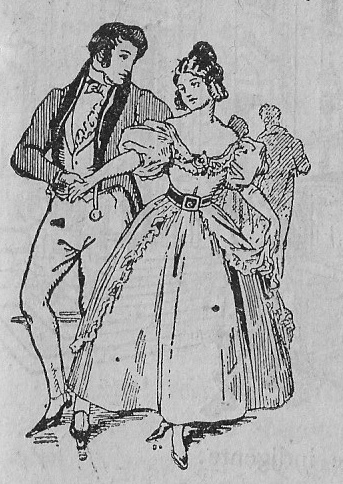
Os homens usavam o cabello trançado em fórma de rabicho, rematado na ponta por uma laçada de gorgorão; chapéo de tres pancadas, camisa pregueada, gonilha de lenço branco bordado, collete de setim macáu, casaca comprida de velludo de côr, calção largo de seda ou de velludo apertado por fivella de ouro na altura dos joelhos, meias compridas de seda, sapatos pretos com fivellas de ouro ou prata, espadim com bainha de ouro.
As mulheres usavam na cabeça uma touca de seda branca com bórlas de fios de ouro, sáias de grande roda e grande cauda, anquinha, espartilho, sapatos de bico repuxado para cima e altos saltos de madeira, brincos pesados e grandes. Empoavam os cabellos de polvilho. Iam á missa transportadas em liteiras, puxadas por escravos vestidos de libréa.
Isso concorreu muito para aperfeiçoar os costumes do Tejuco. As principaes familias começaram a cuidar esmeradamente da educação de suas filhas, mandando vir de fóra professores de dansa, de canto, de musica, de etiquêta, além dos de linguas e grammatica. Dos arraiaes de Minas era o Tejuco o de maior luxo e civilização. Ainda hoje, quando o povo de Diamantina se refere a esse tempo, diz, suspirando:
— Ah! o tempo dos Caldeiras...
Dois factos, porém, vieram anniquilar a riqueza e a felicidade d'esse homem, que, de millionario muitas vezes, acabou pobre e indigente.
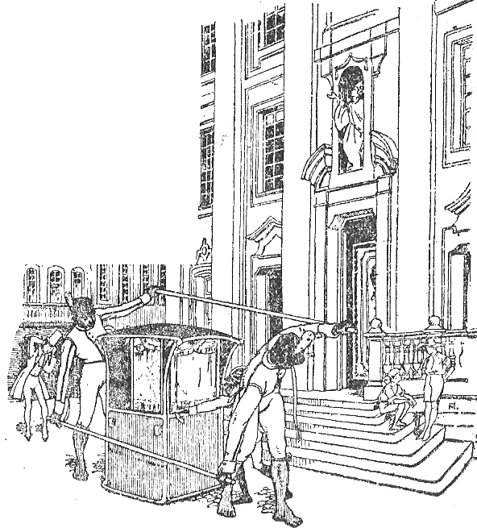
Foi roubado o cofre da Intendencia onde se achava depositada grande somma em diamantes; o roubo deu-se por fórma tão mysteriosa que até hoje não se sabe o auctor. Faltando por isso a Felisberto o dinheiro, com que devia pagar o tributo annual devido á Real Fazenda, sacou uma letra a credito, de 700 mil cruzados, a qual não foi paga. A' vista disso veiu ordem de prisão contra elle.
Outro facto foi a perseguição contra Felisberto, movida pelo ouvidor Bacellar, perseguição derivada do seguinte:
Por occasião das festas da semana santa achava-se em uma das egrejas do Tejuco (a egreja de S. Antonio, hoje Sé Cathedral), assistindo ao officio religioso, a familia de Caldeira, achando-se com ella uma moça mineira, muito prendada e formosa, parenta dos Caldeiras. O ouvidor, querendo engraçar-se com a moça, alli mêsmo, e á vista de todos, atirou-lhe uma flor ao collo. A moça, como era natural, repelliu aquella liberdade, cheia de indignação. O povo, por seu lado, não gostou, e começou a murmurar. Felisberto, sabendo o que fôra feito á sua parenta, tomou a defesa d'esta, e veiu esperar o ouvidor no adro da egreja. Ao sahir este, Felisberto pediu-lhe satisfações, exigindo uma explicação. O ouvidor, cheio de si, recusou a explicação. Então Felisberto, em desaggravo da honra de sua familia, sacou de um punhal e avançou contra o ouvidor, não chegando a feril-o.
A este respeito correm tres versões. A primeira versão diz que não chegou a feril-o, porque o ferro resvalou. A segunda versão diz que diversas pessôas intercederam para apaziguar a contenda, entre as quaes o padre da freguezia. A versão mais corrente é a terceira: diz que “na hora, em que Felisberto sacou do punhal para ferir o ouvidor, apontou a procissão da semana santa, que vinha sahindo da egreja; Felisberto (que era muito religioso), ao ver o padre sob o pállio carregando os santos oleos, ficou aterrado de commetter aquelle desaggravo em tal occasião: deixou por isso cahir o braço, que empunhava a arma.”
O povo dividiu-se em dois partidos: um, a favor de Caldeira; outro, a favor do intendente, que se collocára ao lado do ouvidor.
O ouvidor, abusando do cargo que exercia, começou dêsde esse dia a preseguir Felisberto, mandando ao governador da Capitania, e até a Portugal, cartas e officios calumniosos.
Ora, não tendo Caldeira entrado, por causa do roubo já referido, e do não pagamento da letra, com a taxa annual devida, — era esse facto excellente pretexto para prendel-o.
Para isso o governador da Capitania dirigiu-se em pessôa ao Tejuco, levando comsigo numeroso regimento de soldados (dragões). Felisberto ignorava que o governador vinha para prendel-o. Dirigiu-se ao seu encontro com as principaes pessôas do logar.
No que foi ao seu encontro, o governador deu voz de prisão aos Caldeiras em nome de El-Rey.
Então Felisberto, com as faces abrasadas de cólera, perguntou, em voz alta, que “crime committera.”
A resposta foi ver-se cercado pelos dragões e effectivamente preso.
Nesse mêsmo dia (31 de agosto de 1753), o ouvidor, seu rancoroso inimigo, mandou fechar, lacrar e sellar as portas de sua residencia. Antes disso, fez a familia de Caldeira evacuar a casa, indo sua senhora e filhas pedir asylo em casa de parentes.
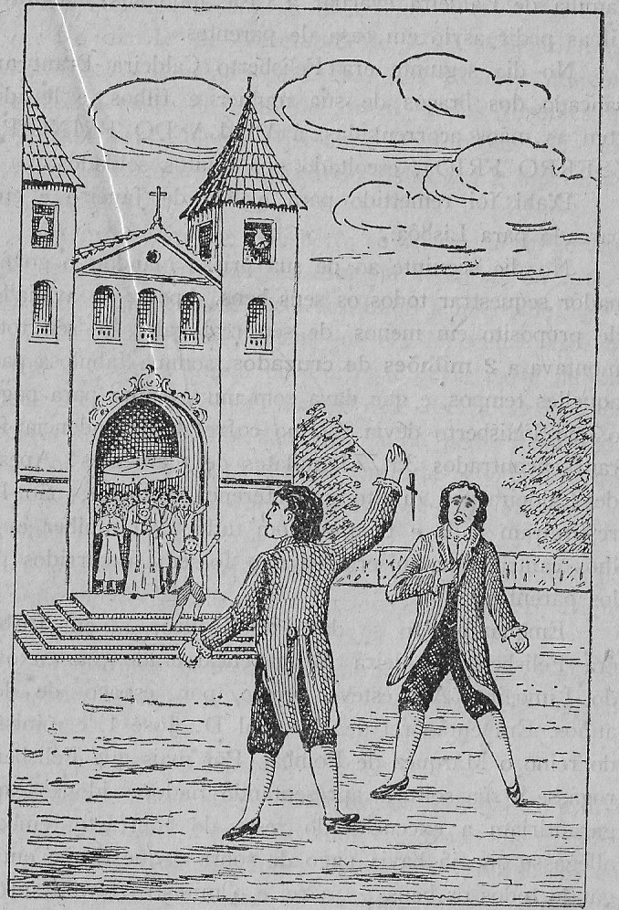
No dia seguinte era Felisberto Caldeira Brant arrancado dos braços de sua mulher e filhos, e levado, com as mãos acorrentadas, á VILLA DO PRINCIPE (SERRO FRIO), escoltado por muitos soldados.
D'ahi foi remettido para o Rio de Janeiro e embarcado para Lisbôa.
No dia seguinte ao de sua prisão mandou o governador sequestrar todos os seus bens. Apesar de avaliados de proposito em menos de seu real valor, o seu total montava a 2 milhões de cruzados, somma fabulosa para aquelles tempos, e que dava com muita sobra para pagar o que Felisberto devia. Só no cofre da Intendencia foram encontrados 33.773 quilates de diamantes! Apesar de Caldeira ter direito á differença a maior, não lhe restituiram nada e ficaram com tudo. Sua mulher e filhos cahiriam na miseria, si não fossem soccorridos pelos parentes.
Emquanto isso se dava no Tejuco, — em Lisbôa era Felisberto Caldeira Brant encarcerado na enxovia do Limoeiro. Ahi esteve, preso, por espaço de dois annos. Era então rei de Portugal D. José I, e ministro do reino o Marquez de Pombal. Por mais que Felisberto rogasse a sua soltura, apresentando fiadores idoneos, que garantiriam a execução do resto do contracto, embora allegasse que já havia pago de sobra o que devia, entregando todos os bens, — o rei e o ministro foram surdos a seus justos reclamos.
Parecia que Felisberto estaria condemnado a ficar indefinidamente preso, quando uma circumstancia inesperada lhe veiu facultar a liberdade:
No dia 1.º de Novembro de 1755 violento terremóto abalou a cidade de Lisbôa. Os palacios ahi construidos á custa do ouro do Brasil, e dos vexames que opprimiam a Colonia, fizeram-se em ruinas no curto prazo de cinco minutos, ficando reduzidos a um montão de entulho!
A prisão em que Felisberto se achava, abriu-se como por encanto: suas paredes estavam fendidas de meio a meio. Viu-se por esse meio restituido á liberdade!
Pois bem. Esse homem que era innocente, esse homem a quem a Corôa de Portugal devia parte de seus bens sequestrados, esse homem que estava ansioso por cobrar de novo a liberdade, era a tal ponto respeitador da Lei (fosse embora uma lei injusta e odiosa), que, em vez de fugir, foi apresentar-se ao Marquez de Pombal:
— Senhor. A prisão que me encerrava, abriu-se por effeito do terremóto. Considero-me ainda preso. Digne-se Vossa Mercê dictar-me as suas ordens.
O Marquez de Pombal admirou-se de tanta lealdade. Era incrivel que o respeito á Lei attingisse áquelle ponto!
— O senhor está livre. Póde ir.
Nesse mêsmo dia o Marquez de Pombal referiu o occorrido a João Pereira Ramos, ao Bispo de Coimbra e ao general Godinho, todos Brasileiros e residentes em Lisbôa. Estes, condoendo-se da sorte de seu patricio, intercederam em seu favor, convencendo o Marquez de Pombal de sua innocencia e do trama de intrigas e invejas, de que fôra victima. O ministro ordenou então que se procedesse á liquidação de suas contas e o exame do sequéstro de seus bens. Essa ordem não foi cumprida até hoje.

Felisberto Caldeira Brant, enfermo gravemente dos maus tratos, que recebera na prisão, foi tratar-se em Caldas da Rainha. Esperava restabelecer-se, para então regressar ao seio de sua amada Patria e de sua familia. Mas tão alquebrado se achava por tudo que soffrera, que seus padecimentos em breve se aggravaram. E o inditoso Brasileiro cerrou os olhos em terra extranha, longe dos seus, pobre e desamparado, — elle, que fôra o homem mais rico de toda a Colonia!
O Capão da Traição
Em todo o territorio mineiro é este o sitio de tradições mais horrendas e sinistras, como o proprio nome está indicando.
A traição mais vil e negregada, de que ha memoria na Historia de Minas, foi a que se praticou nesse sombrio recanto. Muitos annos já são passados — quasi dois seculos, — mas o nome de CAPÃO DA TRAIÇÃO não se apagou, nem nunca se apagará, da lembrança dos povos.
Foi o caso que a Capitania de Minas Geraes era nessa época assolada por uma guerra conhecida por GUERRA DOS EMBOABAS, — guerra que já vinha de muito tempo, travada pelos filhos do paiz contra os foráneos, que tinham o appellido de emboabas. Foi-lhes posto esse nome (que em lingua indigena quer dizer pinto calçudo), porque os Portuguezes usavam commummente umas botas de cano alto.
Depois de muitas peripécias, que seria longo enumerar, os Nossos, resolvidos a expulsar os foráneos do Rio das Mortes, cercaram o arraial da Ponta do Morro (hoje cidade de Tiradentes). Tiveram, porém, de desistir do cerco, porque contra elles foi mandada uma força muito superior em numero.
A' vista disso os Nossos, depois de levantado o cêrco, deliberaram retirar-se, seguindo viagem a caminho de São Paulo.
Em sua retirada aconteceu que um pequeno bando, distanciado de seus companheiros, acertasse de procurar abrigo em soberbo capão de matto, o qual ficava em meio de formosa campina, banhada a poucos passos pelo Rio das Mortes. Esse bando era commandado pelo cabo Gabriel de Góes.
O commandante dos foráneos era um individuo de maus bófes, cuja vida era já uma série de crimes e depredações. Chamava-se Bento do Amaral Coutinho e tinha o posto de Sargento-Mór.
Este mandou que um seu subordinado (o capitão Thomaz do Couto) fosse ao capão fazer um reconhecimento. O enviado foi. Lá chegando, receou offerecer combate aos Nossos, e, com mêdo, retirou-se sem disparar um tiro siquer. Então os Nossos achando graça em tamanha “delicadeza”, promoveram-lhe formidavel vaia.
O Sargento-Mór, ao saber da assuada, exasperou-se, e foi em pessôa com grande trôço de gente offerecer combate.
Assim que os Nossos lhe presentiram a chegada, cada um se empoleirou numa arvore com seu trabuco na mão. Rompeu fogo. Os emboabas soffreram logo muitas baixas, porque a pontaria do inimigo fôra certeira.
Quanto aos Nossos nenhum tiro os attingiu, pois não podiam ser vistos, encobertos pela galhada das arvores.
Exasperado, o Sargento-Mór resolveu cercar o capão, — para que os Nossos se rendessem pela fome e pela sêde. Depois de dois dias e duas noites, sem ter de comer nem de beber, os Nossos resolveram render-se. Escolheram para portador da paz um homem velho e de todo o respeito, que já de longe ia acenando com uma bandeira branca, symbolica da paz.
O Sargento-Mór recebeu-o com móstras apparentes de grande alegria, chegando até a abraçal-o e a dar-lhe de comer e de beber.
O portador, por nome João Antunes, explicou que os Nossos estavam promptos a fazer a paz, dêsde que a sua vida fosse garantida e poupada. O Sargento-Mór jurou pela Santissima Trindade que pouparia a vida aos Nossos, — mas exigiu que lhe fizessem entrega das armas.
Regressou o portador ao seio de seus companheiros com a noticia da acceitação da paz. Os Nossos, fiados na palavra de Amaral, não duvidaram apresentar-se e fazer-lhe entrega das armas.
Isto feito, e, logo que se apanhou com o inimigo desarmado, — o Sargento-Mór, faltando a seu sagrado juramento, faltando á sua palavra de honra, violando as leis da guerra, e perpetrando a mais negra covardia e a mais refalsada vileza, que se possa imaginar, mandou que seus commandados fizessem fogo sobre os inérmes contrarios!
Assim foi feito, para vergonha e eterno descrédito de seus auctores! E nada menos de Trezentos dos Nossos foram immolados, ficando o campo juncado de cadaveres...
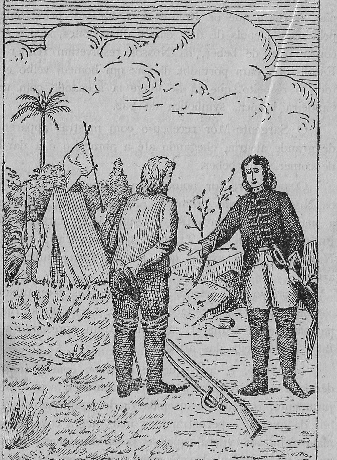
E' por isso que, ainda hoje, quando o povo enfrenta o logar, onde se desenrolou essa matança, desvia os olhos e murmura, estremecendo ainda de cólera e de horror:
— Capão da traição... Capão da traição...
A Expedição do Caminho Novo
Havia pouco tempo que terminára a Guerra dos Emboábas, travada entre Brasileiros e Reinós na porção territorial de nosso Estado, em que mais abundavam as minas. Foi pacificador dos povos o notabilissimo Capitão General Antonio de Albuquerque, a quem o Rei de Portugal em bôa hora confiára tão elevada missão.
Nesse tempo S. Paulo, Minas e Rio formavam uma só Capitania. Antonio de Albuquerque teve ordem de desmembrar S. Paulo e Minas da do Rio, creando a CAPITANIA DE S. PAULO e MINAS DO OURO, veiu tambem auctorizado a inaugurar em Minas o REGIME DAS MUNICIPALIDADES e a crear tres villas (as primeiras, que se fundaram em nosso Estado), as quaes elegeriam livremente as suas Camaras. Isso se deu do anno 1709 ao anno de 1711, no principio do seculo 18. Nove annos mais tarde, isto é, em 1720, foi o territorio de Minas desmembrado do de S. Paulo, passando a constituir uma capitania independente, a Capitania de Minas Geraes, cuja capital foi Villa Rica (Ouro Preto) e cujo 1.º governador e capitão-general foi D. Lourenço de Almeida.
Como iamos dizendo, foram creadas tres villas, a saber: VILLA DO CARMO, hoje Mariana, em Abril de 1711; VILLA RICA DE ALBUQUERQUE, hoje Ouro Preto, em Julho do mêsmo anno, e VILLA REAL, hoje Sabará, no mêsmo mez e anno.
Uma das cerimonias mais interessante d'aquella época era a fundação de uma villa. Era um acto solemne, revestido de muitas formalidades, como vamos ver:
Antes de tudo levantava-se na praça publica o pelourinho. O pelourinho era o principal distinctivo (symbolo) das villas. Logar que não tivesse pelourinho, não podia ser villa: continuava sendo “arraial”. O pelourinho era uma columna de pedra ou de ferro, assente no meio da praça publica sobre degraus de pedra, ordinariamente com 4 faces ou lados (correspondentes aos 4 pontos cardeaes), tendo nas quinas argolões de ferro, e, ás vezes, ostentando na base da columna um desenho allusivo ao emblema da Villa (armas, brazões), além da data da inauguração da Villa, ou outros dizeres. A esses argolões de ferro eram amarrados os escravos, que deviam ser surrados na praça publica em castigo de faltas commettidas.
Emquanto se inaugurava o pelourinho, os sinos de todas as egrejas badalavam a um tempo só, em signal de regosijo; a força miliciana (força publica) postava-se na praça, armada de mosquêtes, e dava uma descarga de salvas; o povo, por sua vez, dava salvas de roqueiras.
Levantado o pelourinho, — dava-se a inauguração official da Villa pelo corregedor, ou ouvidor, da Comarca.
Em livro especial lavrava-se um assento (termo) da inauguração. Nesse termo deviam ser arrolados “o dia da inauguração, o nome da Villa, os limites e confrontações de seu territorio”, além dos “nomes do ouvidor, do capitão-mór da Villa (nomeados na occasião), do mestre de campo da Villa (nomeado tambem na mêsma occasião), assim como os “nomes dos juizes e officiaes da camara” (vereadores) eleitos em eleição (escrutinio) presidida pelo mencionado ouvidor.
Ainda não se tinha apagado de todo o resentimento entre os naturaes e os foráneos. Apesar de acabada a guerra, ainda de parte a parte os antigos contendores se olhavam com reciproca desconfiança, — quando acontecimento inesperado os veiu unir e congraçar:
Foi o caso que a cidade do Rio de Janeiro se viu, no anno de 1711, sitiada pela esquadra franceza de Duguay Trouin, então o almirante mais afamado em todo o mundo. Era governador da cidade do Rio FRANCISCO DE CASTRO, que incontinente mandou um portador a Minas pedir a Antonio de Albuquerque a remessa urgente de forças, que o fossem defender da invasão extrangeira.
A noticia estourou em Villa Rica no dia 21 de Setembro. Ao grito de — “Inimigo invasor!”, Brasileiros e Portuguezes confraternizaram na mêsma hora, no empenho de marchar para ir desalojar a pirataria franceza. Olvidaram no mesmo instante os antigos resentimentos da Guerra Civil dos Emboabas, e, alliados agora como simples irmãos, unidos num só corpo, só viam deante de si uma ameaça, que era preciso remover a todo custo — a Patria em perigo, o Brasil na imminencia de invasão extrangeira!

Deu-se então um facto extraordinario, como ainda não se viu em parte alguma. No limitadissimo espaço de 6 dias apromptou-se um exercito de 6 mil homens, numa região habitada apenas por 35 mil pessôas de um e outro sexo! Quer dizer que todos os varões válidos se alistaram nas fileiras: só deixaram de seguir os velhos, as crianças, as mulheres e os inválidos. Esses seis mil homens eram constituidos de magótes de cem, duzentos, trezentos, fornecidos pelos mais ricos proprietarios de minas e fazendas. Cada proprietario enviava o refôrço, que estava proporcional ás suas pósses. Esses refôrços eram constituidos de homens do povo, recrutas, voluntarios, milicianos e escravos, sendo que o armamento e o mantimento eram tambem fornecidos pelo proprietario, que enviava o refôrço. Patriotismo edificante o desses homens, digno de servir de exemplo a todos os Brasileiros!
Antonio de Albuquerque assumiu em pessôa o commando d'esse exercito, e, á frente dos patriotas, partiu da Encruzilhada de Congonhas no dia 28 de Setembro, a caminho do Rio de Janeiro.
Minas communicava-se com o Rio por uma estrada aberta no matto, denominada CAMINHO NOVO (1). Esta estrada foi mandada abrir pelo rei de Portugal, que encarregou d'esse serviço a GARCIA RODRIGUES PAES, o illustre filho de Fernão Dias Paes Leme, marcando-lhe o prazo de 6 annos para conclusão do serviço. Garcia metteu mãos á obra, mas não poude concluil-a no prazo estipulado: a conclusão foi levada a effeito por DOMINGOS RODRIGUES DA FONSECA LEME, outro não menos notavel bandeirante paulista. O interessante é que esse caminho fazia o mêsmo percurso, que faz hoje a Linha do Centro da Estrada de Ferro Central do Brasil. Garcia Paes e Domingos Leme, sem serem engenheiros, sahiram-se tão bem de sua empreitada que, dois seculos depois, o seu plano de communicação de Minas com o Rio era aproveitado pelas summidades da engenharia brasileira! A estrada era servida por pousos ou ranchos, isto é, pontos de parada, onde as tropas descansavam da jornada e refaziam as forças. Esses pontos de parada foram depois substituidos por estações da Estrada de Ferro Central, a saber: CONGONHAS; RESACA; BORDA DO CAMPO, hoje Barbacena; REGISTO, cujo nome ainda hoje conserva; JOÃO GOMES, hoje Santos Dumont, ex-Palmyra; JOÃO AYRES e MATHIAS BARBOSA, cujos nomes ainda hoje perduram, assim chamadas dos sesmeiros, que ahi eram estabelecidos; PARAHYBA, hoje a cidade fluminense do mêsmo nome; ALFERES (hoje Paty), etc.
(1) Assim denominada em contraposição ao antigo caminho chamado Caminho Velho.
O exercito marchou em tamanha ordem e disciplina, e com tal disposição de ir enfrentar o inimigo, que no curto prazo de 12 dias acampava na Serra do Mar. Doze dias para fazer a pé um percurso de 500 kilometros, marchando de sol a sol, transpondo, entre outras, a alterosa Serra da Mantiqueira, e passando a vau, ás vezes com agua além da cintura, rios e rios caudalosos!
Na Serra do Mar fez Albuquerque uma parada para esperar o resto das tropas, que vinha marchando na retaguarda; escolheu para isso a chapada dos Pousos Frios, na região denominada Tinguá.
Albuquerque, que nada sabia do que se passava no Rio de Janeiro, acreditava que iria chegar muito a tempo de livrar a cidade do cêrco dos Francezes. Da Serra do Mar descortinava-se a bahia Guanabara e um trecho da cidade. Sondando os horizontes, Albuquerque apenas poude notar que havia algumas naus ancoradas no porto.
Ao cahir da noite, porém, horrivel decepção o esperava — uma parte da cidade ardia em chamma!
E' que Duguay Trouin, além de assassino e pirata, era tambem incendiario! Vendo que a cidade não se rendia, heroicamente defendida por seu Governador e por seus habitantes, usou de um meio extremo, bárbaro e deshumano — mandou que a tripulação das náus atirasse foguetes inflammados sobre o tecto de palha das casas, que ficavam no bairro de Santa Luzia e do Castello. O fogo, ateando-se ao côlmo do tecto e ao madeiramento das vigas, ajudado por forte ventania de sudéste, que soprava na occasião, fez arder aquelles bairros inteiros, perdendo-se no incendio as propriedades de muitos de seus habitantes, que ficaram, da noite para o dia, reduzidos á penuria! O proprio palacio do Governador foi tambem attingido pelo fogo: só então Francisco de Castro abandonou o seu posto de honra, tendo antes enterrado as baixellas de ouro e prata, para que os Francezes as não pilhassem.
Albuquerque tratou immediatamente de descer a Serra, indo abarracar no sitio do Couto. Ali um enviado do Governador da Cidade trouxe-lhe a communicação official de que a cidade se rendêra ao inimigo, á vista do terror, que se apossára da população, ao ver que Duguay Trouin estava disposto a incendiar todas as casas pelo processo dos foguetes inflammados, arremessados das náus. A cidade rendêra-se pelo terror do incendio! Vingára, pois, o plano sinistro de Duguay Trouin, que não vacillou em ficar na Historia como Incendiario, e que só por meio tão infame e illicito, contrario ás leis da guerra e ás leis da humanidade, conseguiu entrar na cidade, que até o ultimo momento lhe resistira heroicamente! Além disso, outra razão veiu concorrer para a rendição do Rio de Janeiro — tinham-se acabado as munições: as forças já não podiam disparar contra o inimigo, por se haverem exgotado a polvora e as balas. Tudo conspirára contra nós!
Mas, além de incendiario, Duguay Trouin era tambem pirata. Tomada a cidade, fez saquear pela soldadesca as casas e os proprios templos! Tudo foi tomado e carregado; o que não podiam carregar, era destruido. As familias, espavoridas, abandonaram os lares e foram abarracar na Serra do Andarahy onde ficaram a salvo pela distancia.
Duguay Trouin sabia que Francisco de Castro esperava grande reforço de Minas, conforme o proprio Governador fez espalhar para metter medo ao inimigo. Ora, a cidade resistira denodadamente até as vesperas de chegar o reforço. Presentindo a chegada d'este pelos dias que já haviam decorrido, o almirante pirata deu-se pressa em incendiar a cidade, pois era o unico meio de conseguir que se rendesse!
Albuquerque, porém, não esmoreceu. Recebendo a noticia de que a cidade fôra tomada, — em vez de retroceder para Minas, avançou, e veiu aquartelar no Engenho Velho, proximo dos arrabaldes, que são hoje a Tijuca e Villa Izabel. Nisso não fez mais que acompanhar o intuito dos patriotas mineiros, os quaes estavam ansiosos por entrar em fogo e enfrentar o inimigo. Visto não terem chegado a tempo de impedir que os Francezes tomassem a cidade, apesar da pasmosa presteza com que marcharam ao seu encontro, queriam ao menos desalojar d'ella o inimigo, restituindo assim á cidade a sua primitiva liberdade e soberania.
Do ponto onde se aquartelára, — Albuquerque assumiu logo o Governo da Cidade, e dirigiu em seguida uma intimação ao inimigo para retirar-se incontinente, sob pena de ser varrido a bala. Duguay Trouin não esperou por segunda intimação. Sabendo que o reforço mineiro era temivel e que se achava na melhor disposição para offerecer-lhe combate, embarcou a toda pressa nas suas náus e fez-se ao largo.
A expedição do Caminho Novo, a léva de patriotas mineiros, não tendo chegado a tempo de impedir a rendição da cidade, desalojava agora o inimigo só com a sua presença e a sua ameaça!
O exercito enviado das “Geraes” salvára a cidade, que seria mais tarde a Capital da Federação Brasileira!
Morro da Queimada
Corria o anno de 1729. Era Governador da Capitania das Minas Geraes o Conde de Assumar, nomeado pelo rei de Portugal para occupar aquelle posto. A séde do governo era a cidade de Mariana, que naquelle tempo se chamava VILLA DO CARMO.
Despótico, sanguinário, pérfido, — o Conde de Assumar possuia todos os instinctos maus para vir a tornar-se um algôz do povo.
Naquelle tempo eram tão pesados os impóstos que Portugal exigia dos habitantes de Minas, que, deduzidas as despesas com a exploração das lavras, quasi nada ficava da extracção do ouro e diamantes. Assim, a Lei ordenava que os diamantes de mais de 24 quilates pertenceriam ao rei: o garimpeiro que os achasse, e não os entregasse ás auctoridades, era havido como ladrão e condemnado. O povo era obrigado a contribuir todos os annos com 25 ARROBAS DE OURO, que eram transportadas para Portugal e levadas ao rei, a quem ficavam pertencendo. Como si isto não bastasse, foi creada em 1730 uma lei nova (Lei de 8 de Fevereiro), mandando construir em Minas casas de fundição, isto é, officinas, em que o ouro em pó tirado das minas seria fundido e reduzido a barras, descontando-se nessa occasião uma “quinta parte” do peso do ouro, que ficaria pertencendo á Real Fazenda. Essa mêsma lei prohibia a qualquer pessôa sahir de Minas, levando ouro em pó: quem tal fizesse perderia todos os seus bens (que seriam confiscados) e seria ainda degredado para a India por dez annos!
O povo, deante de tamanho despotismo, revoltou-se. A revolta rompeu em VILLA RICA (hoje Ouro Preto). Os chefes foram dois patriotas Mineiros — Paschoal da Silva e Felippe dos Santos.
Paschoal da Silva era mestre de campo, então a pessôa mais influente e o mineiro mais opulento de Villa Rica. Era proprietario na Serra de Ouro Preto de um arraial inteiro — o arraial de Ouro Pôdre (1); possuia as minas mais ricas e bem trabalhadas do districto, além de duas fazendas de cultura no Rio das Velhas. Entre camaradas e escravos, obedeciam ás suas ordens cerca de dois mil homens. Tão patriota era que foi um dos fundadores de Villa Rica; hospedou á sua custa, durante quinze dias, o governador Antonio de Albuquerque com vinte soldados e alguns officiaes; contribuiu muito para a pacificação da Guerra dos Emboábas. Mas, não foi só: Quando o rei reclamou do povo auxilio em ouro para ajudar as despesas da Capitania, offereceu do seu bolso quinhentas oitavas de ouro; foi Governador interino da Capitania, — cargo que desempenhou tão a contento geral, que se fez a um tempo bemquisto do povo e do rei. Quando o Rio de Janeiro foi cercado pelos Francezes de Duguay Trouin, Paschoal mandou trinta escravos armados á sua custa em soccorro d'aquella cidade. O rei e o governador eram-lhe, pois, devedores de valiosos serviços. Havemos de ver a ingratidão, com que depois lhe pagaram.
(1) Assim chamado porque o ouro era ahi em grande quantidade.
Felippe dos Santos não era rico como Paschoal, o que não impediu que fosse, por outro lado, tão patriota quanto elle. Era o orador mais popular de toda a Capitania. Possuia o dom da palavra: quando se dirigia ao povo, os seus discursos enthusiasmavam a todos: o que elle dissesse da tribuna, o povo estava prompto a fazer. Felippe não se limitou a prégar nas ruas de Villa Rica Como verdadeiro Apóstolo da Liberdade, percorreu a capitania, e, em toda parte, na Villa do Carmo (MARIANA), na Villa da Rainha (CAHETÉ), na Villa Real (SABARÁ), no Rio das Mortes (SÃO JOÃO D'EL-REY), no Rio das Velhas (SANTA LUZIA), e em Cachoeira do Campo, lá estava elle a arengar ás massas, condemnando a tyrannia e prégando a Independencia!
Revoltando-se o povo contra a lei absurda, que mandava quintar o ouro, partiu de Villa Rica um cortejo de dois mil patriotas mineiros e dirigiu-se á Villa do Carmo. Ahi o povo cercou o palacio do governador e intimou-o a revogar a lei. Apesar de o governador possuir uma companhia de dragões, com que poderia atacar o povo, receou dar combate e fingiu concordar com tudo, allegando que “não queria derramar sangue”. O povo acreditou, não imaginando que pudesse ser uma traição.
Assim, no dia 2 de Julho d'esse anno, foi assignado no palacio do governador um documento, pelo qual o Conde de Assumar se comprometteia a não consentir nas casas de fundição e se obrigava a perdoar (amnistiar) a todos os sediciósos. Esse documento foi sellado com as armas reaes; foi assignado, do proprio punho, pelo Governador da Capitania, por alguns dos cabeças do movimento e por muitas testemunhas; foi registado na Secretaria do Governo, foi lido ao povo nos logares publicos ao toque de caixa (tambor). Emfim, era um documento com todos os sacramentos, que as auctoridades se obrigavam a cumprir a todo tempo.
Mas assim não succedeu. O Conde de Assumar, não prezando a sua assignatura nem a sua palavra, violou dias depois a promessa, em que empenhára a sua honra e a sua auctoridade!
Tão depressa o povo se acalmou e voltou ás suas occupações, tão depressa o povo se dispersou, confiado na sua palavra, o Conde, alma damnada, sahiu, pela calada da noite, da Villa do Carmo, com muitos dragões e gente armada, que assalariou; marchou sobre Villa Rica, onde entrou de surpresa, na madrugada de 13 de Julho, valendo-se da escuridão e da sombra, na hora em que todos dormiam em seus penates. Nem esperou amanhecer.
Mandou prender áquella mêsma hora os principaes cabeças do movimento, entre os quaes Pachoal da Silva. Para isso fez arrombar as portas de suas casas, invadiu-lhes o lar, arrancou-os do leito, onde dormiam! Bradava aos céos tanta vileza e tyrannia! Em seguida algemou-os, e fêl-os escoltar, presos, até á Villa do Carmo, onde entrou ás 8 horas da manhã.
Felippe dos Santos, ao saber da traição do Conde de Assumar, correu para Cachoeira do Campo, e ahi reuniu gente para oppor-se á violação do tratado de 2 de Julho. Sabedor, o Conde mandou tropas muito superiores em numero para atacar a Felippe. Este resistiu com armas na mão, mas, vencido pelo numero, foi preso e algemado.
No dia 16 d'esse mêsmo mez, o Conde de Assumar, afflicto por exhibir aos olhos de todos o seu triumpho, entrou em Villa Rica á frente de sua cavallaria de dragões, de seu vistoso estado maior, e de um exercito de infantaria de 1507 negros escravos armados de todo jeito. Atraz vinham os presos, escoltados: entre elles figuravam Paschoal da Silva e Felippe dos Santos.
Quando a noite desceu, já Paschoal se achava encarcerado numa das muitas enxovias de Villa Rica. Através das grades da prisão estava o patriota mineiro a olhar desconsoladamente o arraial de Ouro Pôdre, que ficava num morro proximo, a cavalleiro de Villa Rica. Nesse arraial estavam muitas de suas propriedades, representadas por dezenas de casas de madeira e barro. Estava Paschoal a assumptar que dentro em pouco toda aquella propriedade lhe seria tomada pela Fazenda Real!
Subito a sua attenção foi attrahida para um rôlo de fumo, que se alteou na crista do morro. Não tardou que, de outros pontos, nóvos rôlos de fumo se levantassem: em pouco tempo, no meio do sinistro negror da noite, todo o morro ardia em chammas! Labaredas e labaredas contorciam-se no espaço como espéctros diabólicos; grossas nuvens de fumaça embaçavam o céo. De longe ouvia-se o fragor da madeira que ruia, carcomida pelo fogo; ouvia-se o crepitar das chammas assanhadas pelo vento. Em poucas horas toda aquella immensa propriedade ficou reduzida a cinzas!
Fôra o Conde de Assumar, que mandára atear fogo a todo o arraial, para reduzir á pobreza o patriota mineiro, a quem a Real Fazenda devia tantos serviços e obsequios!
Chamava-se Manoel de Barros Guedes Madureira o individuo, que recebeu do Conde de Assumar ordem de deitar fogo ás propriedades de Paschoal da Silva. Em vez de negar-se ao cumprimento de ordem tão vil, aquelle individuo executou á risca a indigna incumbencia. Pois escapou de ser victima das proprias chammas ateadas por suas mãos! Teria sido o castigo a tão infame procedimento!
Vejámos:
As ruas do arraial eram juntas e estreitas: amontoavam-se as casas muito proximas umas das outras. Manoel Madureira, com um facho acceso na mão, sahiu a deitar fogo a casa por casa. Isto feito, e quando se dispunha a retirar-se do arraial, — eis que o incendio lavrara por toda a parte! Viu-se então encerrado num circulo de fogo, quasi asphyxiado pelos rôlos de fumaça, que rompiam de todos os lados! Comprehendeu então que, alguns segundos mais, correria risco de ser queimado vivo! Desvairado, assumptou logo que a barreira de fogo que lhe embargava a passagem, era o castigo a seu nefando procedimento. Impellido pelo instincto de conservação, conseguiu, em supremo arranco, romper o circulo das chammas, soffrendo graves queimaduras pelo corpo, chamuscando os cabellos, e indo cahir desfallecido do outro lado, suffocado pela fumaça!
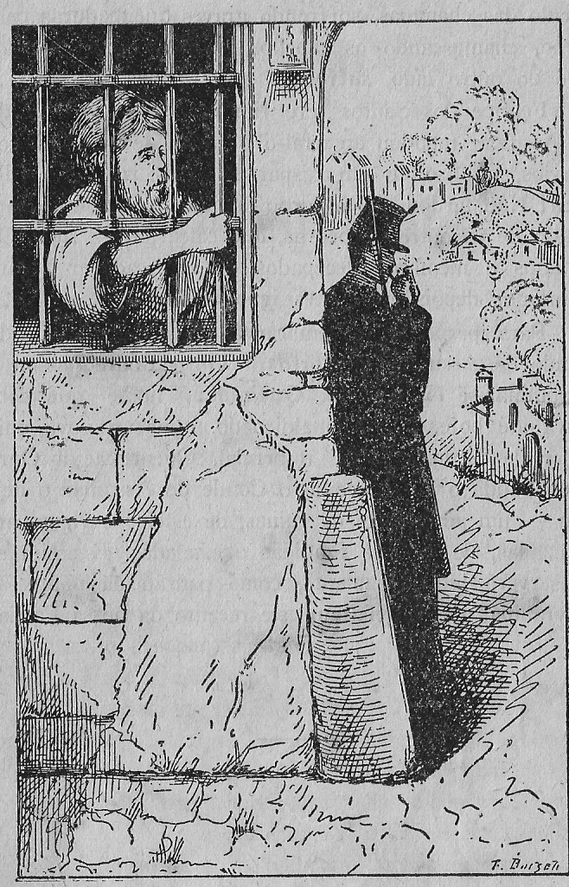
Felippe dos Santos teve fim mais triste. O Conde de Assumar mandou amarral-o á cauda de dois cavallos bravios, que soltou em disparada pelas ruas de Villa Rica! Não tardou que o corpo do patriota fosse esquartejado de encontro ás pedras, que calçavam as ruas. Os retalhos e membros decepados de seu cadaver foram collocados depois em póstes ignominiosos.
Para perpetuar a lembrança do nefando acto do Conde de Assumar, o morro de Ouro Pôdre passou a denominar-se Morro da Queimada, nome que conserva até hoje. Logar amaldiçoado, nunca o povo quiz saber de reconstruir ahi o arraial. Quem vae a Ouro Preto ainda o vê, tal como o Conde de Assumar o deixou — um amontoado de ruinas, de esteios e vigas carbonizadas, de paredes fendidas e estaladas. E assim se conservará indefinidamente, como padrão da oppressão e tyrannia, que flagellaram este recanto da nossa Patria!
O Aleijadinho
Tal foi o appellido do notavel esculptor e entalhador mineiro Antonio Francisco Lisbôa, nascido na cidade de Ouro Preto. no anno de 1730.
Era mulato, de baixa estatura, o rosto e a cabeça redondos, testa larga, cabellos annelados, beiços grossos, pescoço curto, orelhas grandes, nariz ponteagudo e corpo mal conformado.
Seu pae era um distincto architecto portuguez, muito entendido na sua arte. Sua mãe, uma escrava africana por nome Izabel. Com seu pae apprendeu Antonio Francisco o desenho, a architectura e a esculptura, bem como a ler e a escrever.
O appellido de ALEIJADINHO foi-lhe posto pelo povo, depois de ter attingido a edade de 47 annos, em consequencia de doença que contrahiu, a qual lhe fez cahir os dedos dos pés, os dedos das mãos e os dentes. Além d'isso a bocca entortou-se-lhe, o queixo e o labio inferior descahiram, as palpebras inflammaram-se. Era obrigado a andar de joelhos ou carregado ás costas de algum escravo, ou arrastado numa cadeira de mólas.
O que mais é de admirar é que, apesar de atormentado por enfermidade, que quasi o impedia de trabalhar, — não deixou, por isso, de trabalhar. Tendo vivido até a edade de 84 annos, só cessou de dedicar-se á sua arte, — quando de todo veiu a ficar cego pela edade.
Si Antonio Francisco fosse homem preguiçoso, inimigo de trabalhar, teria encontrado na doença, que o privou das mãos e de andar, pretexto para implorar a caridade publica. Mas, não: era homem de brio e de escrupulo — vexar-se-hia de tornar-se um mendigo. Decidiu-se, pois, a continuar a trabalhar como d'antes. Pouco lhe importaria que o trabalho lhe fosse agora mais penoso: isso daria mais valor, como deu, á sua obra, e, aos olhos de todos, realçaria o seu mérito artistico.
As suas obras de talha e esculptura foram quasi todas executadas no periodo de sua enfermidade. Como era possivel que, sem mãos, pudesse o Aleijadinho trabalhar? Mandava que um escravo, por nome Mauricio, lhe amarrasse aos pulsos, isto é, aos cótos dos braços, os instrumentos necessarios ao desempenho de sua arte, taes como: o macête, o formão, o cinzel, o escôpro, a talhadeira, etc. Além disso adaptava aos joelhos certo apparelho de couro, que lhe permittia subir com pasmosa agilidade em andaimes e escadas.
As obras por elle executadas ahi estão e podem ser vistas. Algumas eram verdadeiras obras primas. O genio d'aquelle nosso conterraneo é tanto mais de admirar, quanto não teve mestres eximios, que lhe ensinassem a architectura e a esculptura, tal como se ensinam nos paizes mais adeantados do mundo. Além d'isso faltava-lhe o orgam do corpo humano, que mais concorre para o acabamento e lavor da arte — as mãos. Suas obras eram o resultado do genio, da inspiração, da força de vontade, da perseverança.
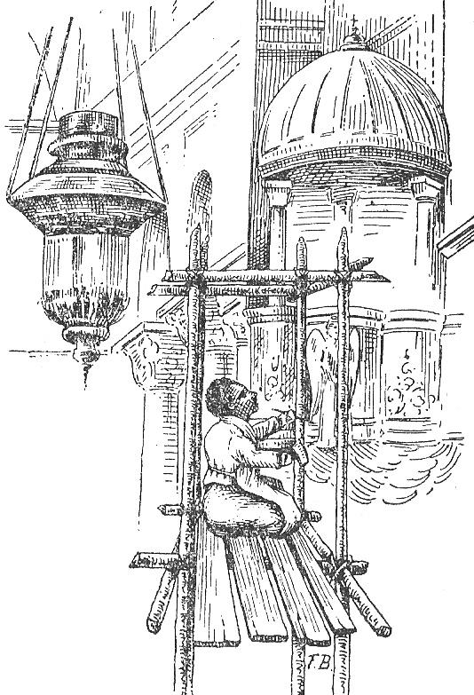
As cidades e logares de nosso Estado, onde se encontram trabalhos do Aleijadinho, são: Ouro Preto, S. João d'El-Rey, Sabará, Mariana, Santa Luzia e Congonhas do Campo.
Em Ouro Preto é obra sua, na egreja de S. Francisco de Assis, a talha e esculptura do frontispicio, bem como os dois pulpitos, o chafariz da sacristia, as imagens das Tres Pessôas da Santissima Trindade, a resurreição de Christo, a imagem de São Jorge (que todos os annos costuma sahir a cavallo na procissão de Corpus Christi).
Em Congonhas do Campo deixou elle, entalhados em pedra, os prophetas e os Tres Passos da Ceia, da Prisão e do Hôrto.
Era tão feio o seu aspecto, motivado pela exquisita doença, que o deformára, que se escondia de todos para não ser visto: — trabalhava dentro das egrejas, debaixo de um tôldo, que o encobria das vistas alheias; partia para o trabalho de madrugada e só regressava depois de fechada a noite; ia ouvir missa antes de romper o dia.
Si alguem se punha a olhar para elle, amuava; ás vezes chegava até a exasperar-se.
Era muito esmolér, sempre prompto a repartir do seu dinheiro com os pobres; por isso morreu quasi na miseria, mas bemquisto de todos.
Em sua vida foi ajudado por tres escravos, com quem repartia seus salarios — Mauricio, Januario e Agostinho. Seu salario regulava meia oitava de ouro por dia (750 réis em moeda de hoje, ao cambio de 6).
Seu corpo acha-se sepultado na matriz de Antonio Dias, na cidade de Ouro Preto, ex-capital de nosso Estado, em sepultura que fica fronteira ao altar de Nossa Senhora da Bôa Morte.
Chico Rei
Tal se chamou em Villa Rica um preto escravo, vindo da Africa, o qual, depois de muitos annos de captiveiro, além de ter-se libertado á custa propria, conseguiu libertar um filho e muitos outros escravos, seus companheiros.
Francisco era-lhe o nome de baptismo. Em sua terra natal, na Africa, gosava elle, e mais a sua tribu, todos os encantos e regalos da liberdade. Chefe de numerosa tribu, todos o conheciam como REI, e lhe tributavam, nesse caracter, as homenagens devidas.
Aconteceu, porém, que a costa da Guiné começou a ser varrida por navios negreiros. Eram navios, que se enchiam de negros e negras, os quaes eram remettidos para a America, e ahi vendidos como escravos. Os donos ou fretadores de taes navios eram homens sem escrupulo, que se entregavam ao tôrpe commercio da escravatura. Saltavam em terra, amimavam os negros com muitos presentes, davam-lhes espelhos, missangas, pannos vermelhos, barrêtes e outras cousas de nonada, conseguindo, por essa fórma, attrahil-os a bórdo. Ahi eram os negros algemados e atirados, como fardos, ao porão do navio, onde ficavam amontoados na maior promiscuidade. Os navios levantavam ferro e singravam os mares em demanda da America. Os pobres negros, arrancados de sua patria, separados de sua mulher, filhos e amigos, enchiam o infécto porão do navio com a triste cantilena de seus rógos e gemidos. Era uma musica infernal, capaz de enlouquecer a quem a ouvisse de perto. Os mais ousados vociferavam pragas e blasphémias contra seus algôzes. Isso de nada lhes valia — antes augmentava o rancor dos negreiros, que mandavam chibateal-os para punir tanto atrevimento!
Eram taes e tantos os tormentos praticados a bórdo contra esses desgraçados, que a quasi totalidade dos negros morriam. Seus córpos eram lançados ao mar, onde iam servir de pasto aos peixes vorazes. Basta dizer que da Africa sahiram para a America um milhão e duzentos mil negros, e d'estes desembarcaram com vida apenas cento e vinte poucos mil! E' que muitos se deixavam morrer a bórdo, preferindo a morte á perda da liberdade.
O heróe desta veridica historia (como veridicas são todas as que vamos contando aos nossos leitorzinhos) foi aprisionado em sua terra natal, conjunctamente com sua mulher, filhos e súbditos. A mulher e todos os filhos, excepto um, morreram a bórdo. Os demais companheiros desembarcaram no Rio de Janeiro (em um logar chamado Vallongo), e d'ahi foram mandados a Villa Rica para servir nas minas.
Francisco não se deixou morrer, porque jurára que “rei na sua terra, rei havia de continuar a ser fóra della!” Tanto póde a força de vontade, a resignação, a perseverança, — que a nobre aspiração alimentada por esse preto escravo (pobre rei desthronado) elle a conseguiu realizar plenamente, e por fórma que se immortalizou nas paginas da nossa Tradição!
A' custa de muitas economias e penósos trabalhos conseguiu Francisco juntar seu primeiro peculio, que só dava para libertar um escravo. Si fosse egoista, seu primeiro cuidado seria forrar a si proprio. Mas não. Como bom pae que era, seu primeiro pensamento foi libertar o filho. Isto feito, seu filho, para testemunhar ao pae a sua gratidão, começou a trabalhar para forral-o.
Francisco, por seu lado, ia trabalhando tambem. Conseguiram os dois pretos reunir em commum os seus peculios, e por esta fórma foi Francisco alforriado, voltando a ser homem livre. Estava satisfeita uma parte de seu grande sonho; faltava-lhe, porém, a maior de todas — voltar a ser rei!
Para isso Francisco tinha um plano superior ás suas forças, mas que denotava a grande nobreza de seus sentimentos, os raros predicados de seu caracter. Era o seguinte: elle e o filho trabalhariam para libertar terceiro escravo; forrado este, os tres trabalhariam para forrar um quarto e assim, successivamente, os proprios negros trabalhariam em commum para, com os proprios recursos, redimir do captiveiro os seus irmãos de raça!
Si o plano de Francisco fosse acceito e praticado por todos os negros em outros pontos do Brasil, — a escravatura teria acabado no Brasil muito antes de 13 de Maio! Libertados os negros, Francisco constituiria com elles uma nação ordeira e pacifica, contando como certo que seus membros, á vista de tão inestimaveis serviços, o proclamassem Rei.
Por esse processo, o mais legal e pacifico que se possa imaginar, Francisco conseguiu restituir a liberdade a todos os membros da sua tribu da Africa, que vieram escravizados para Villa Rica. Em seguida, os da tribu começaram a trabalhar para redimir os negros de outra nação. Exemplo edificante de amor ao proximo, de mutualismo e de confraternidade! Formaram assim poderosa colonia, “um verdadeiro Estado no Estado”, como disse acatado historiador mineiro (1).
Francisco foi logo acclamado o “Rei” d'essa nação. Data dessa época o seu appellido de Chico Rei, que é como o povo lhe ficou chamando. Chico e seus parentes mais proximos formavam a “familia real”. Sua mulher (uma preta com quem casou no Brasil) era a “Rainha”. Seu filho era o “Principe”; sua nóra, a “Princeza”.
A nação conseguiu, com os proprios recursos, comprar uma mina de ouro riquissima — a mina chamada do “Palacio Velho”. O ouro que se extrahia d'essa mina, era todo da nação do Chico Rei. Só o minerio de ouro fornecia cabedal para a libertação de muitos negros.
(1) Diogo de Vasconcellos, Historia Antiga das Minas Geraes.
A nação escolheu para sua protectora a Santa Ephygenia, e erigiu-lhe um templo majestoso, que ainda existe em Ouro Preto — a egreja do Rosario.
No dia 6 de Janeiro de cada anno, o Rei, a Rainha e os Principes, vestidos com trajes opulentos, cobertos de suas insignias e corôas, eram, com grande apparato, levados á Egreja do Rosario, onde assistiam á missa cantada. Acabada esta, sahiam pelas ruas de Villa Rica, executando dansas caracteristicas, á moda da Africa, tocando instrumentos indigenas dos usados na Guiné. Essas festas chamavam-se REISADO DO ROSARIO. De Ouro Preto extenderam-se a outras cidades e logares do Brasil, onde ainda hoje são conservadas.
A imagem de Santa Ephygenia ficava num serro, a cavalleiro da Villa, denominado ALTO DA CRUZ. Havia ahi, e ainda hoje lá se conserva, uma pia de agua benta. As negras, súbditas do Chico Rei, usavam uma fórma galante para dar esmola á Santa de sua devoção: empoavam o cabello com ouro laminado da Mina do Palacio Velho — a cabeça rebrilhava-lhes, como si seus cabellos fossem véllos de ouro. Chegando á pia, mergulhavam a cabeça na agua, e ahi depositavam o ouro, que descia ao fundo da pia, recobrindo-a de uma poeira espelhenta e luzidia, onde a imagem da Santa se retratava...
Era tanto o ouro, que nesse tempo corria em Villa Rica, que até as negras empoavam com elle as suas carapinhas!

Barbara Heleodóra
Tal se chamou no século 18 a illustre e virtuosa varôa, que se póde considerar a mais notavel mulher mineira.
Residia na Villa de S. João D'EL-REY, seu berço natal, em companhia de seus paes. Era então solteira, muito formosa, e dotada de rara intelligencia e illustração. Já nessa edade era eximia poetiza e compunha versos de muita arte e inspiração.
Veiu estabelecer-se em S. João d'El-Rey, como ouvidor da comarca do Rio das Mortes, o Dr. IGNACIO DE ALVARENGA PEIXOTO, natural do Rio de Janeiro, o qual se formara na Universidade de Coimbra, em Portugal. Era Alvarenga, além de formado em leis, poeta distincto. Enamorando-se de Barbara Heleodóra, com ella casou no anno de 1778.
Alvarenga Peixoto deixou o cargo de ouvidor (que hoje corresponderia ao de juiz de direito) para dedicar-se á mineração. Tão feliz foi que em breve se tornou grande proprietario, e veiu a adquirir grande cabedal. Possuia fazendas de cultura em S. João d'El-Rey, na Campanha e no Paraopeba, além de muitas minas de ouro. Era senhor de duzentos escravos.
Com o correr dos tempos, Alvarenga mudou-se para S. Gonçalo da Campanha, Sul de Minas. De seu casamento com Barbara Heleodóra nasceram uma filha (de quem adeante falaremos) e tres filhos.
Sua casa em S. Gonçalo era a mais abastada do logar. Não lhe faltava nada — ricas baixellas de prata, custosa mobilia de talha, cortinas adamascadas nas janellas, muitas áias e mucamas para o serviço domestico, mestres dos mais sabios d'aquelle tempo para instruir e leccionar os filhos. D. Barbara, sem ser soberba nem vaidosa, vivia cercada do maior luxo e commodidade: seus vestidos eram de seda e velludo, recobertos de joias e adereços. Aos domingos ia á egreja ouvir missa, transportada em liteira, carregada por escravos.
Em toda a Capitania de Minas Geraes não havia mulher, que fosse mais feliz do que Barbara Heleodóra. Seu marido tratava-a com o maximo carinho, dispensava-lhe a maior affeição. Sua filha mais velha, de 12 annos de edade, por nome MARIA EPHYGENIA, era uma menina linda, como só poderia existir egual nos contos das fadas, — tão linda que todos lhe chamavam A PRINCEZA DO BRASIL. Além d'isso muito prendada: sabia desenhar com perfeição; dansar com graça; bordar e costurar os mais finos trabalhos, além de falar com correcção outras linguas além da nossa. Para isso Barbara Heleodóra contractou os professores mais afamados da Capitania, pagando-lhes generosamente.
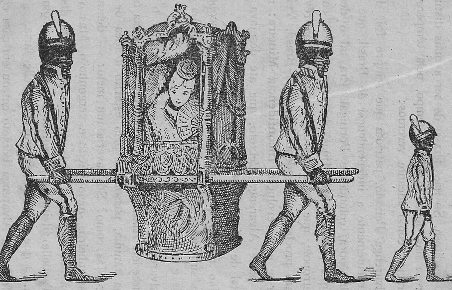
Eis sinão quando toda essa immensa felicidade se dissipou da noite para o dia: Barbara Heleodóra, da mulher mais feliz que era em Minas, veiu a tornar-se a mais desditosa. Só não deixou de ser a mais distincta e valorosa das donas d'aquelle tempo, pela témpera de seu caracter, como adeante veremos:
Alvarenga Peixoto, patriota que sempre foi, desejava ardentemente a independencia do Brasil, que era, naquella época, colonia de Portugal. Era tal o despotismo que pesava sobre Minas, determinado pela cubiça da Metrópole, que os Mineiros tramaram uma revolução para proclamar a Independencia do Brasil. Veiu a chamar-se essa revolução Inconfidencia Mineira: nella tomou parte Alvarenga Peixoto, que até desejava que a capital de Minas fosse S. João d'El-Rey.
Não tardou que a conspiração fosse descoberta. Ordens superiores foram enviadas para prender os conjurados e tomar-lhes os bens.
Alvarenga Peixoto soube antecipadamente o que iria succeder. Alarmado com a desgraça, que viria attingir sua familia, passou-lhe pelo espirito a idéa de salvar-se. Mas como? Só haveria um meio: — denunciar os companheiros, meio illicito e vergonhoso. Mas o seu amor á mulher e aos filhos era tanto, que não disistiu logo d'aquelle vil intento: resolveu aconselhar-se com sua esposa. O que ella dissesse era o que elle faria.
Nesse dia Alvarenga Peixoto entrou em casa com a physionomia alterada: estava pallido, trémulo, agitado. Sua mulher presentiu que alguma cousa de extraordinario se passava.
— Está tudo perdido! exclamou arrebatadamente Alvarenga. A conjuração foi descoberta. Não tarda que me venham prender. Os nossos bens serão confiscados: ficarás pobre e na miseria. Mas não é tudo: talvez eu seja condemnado á morte: ficarás viuva; nossos filhos, orphams.
Barbara Heleodóra deixou escapar um grito de terror: esteve a ponto de desmaiar.
Alvarenga Peixoto, então, com a voz sumida, envergonhado de tão sinistro pensamento, revelou-o a sua mulher:
— Barbara, poderei salvar-te e a nossos filhos.
A valorosa Mineira fitou-o espantada, sem comprehender.
— Como? indagou ella.
Então Alvarenga baixou ainda mais a voz, e, a mêdo, disse-lhe:
— Denunciando os outros conjurados.
Barbara tapou o rosto com as mãos, fulminada de vergonha. Cresceu para o marido, e, de pé, severa, energica, imperiosa, exclamou:
— Nunca! Seria uma traição! Prefiro a morte á deshonra! Prefiro meus bens confiscados; prefiro a miseria, a viuvez, a orphandade, mas quero o teu nome — limpo, e a tua memoria — honrada! Que o Rei mande sequestrar os nossos bens: farei entrega de tudo! Si te condemnarem á morte, saberás morrer como um heróe. A escada para o patibulo é muitas vezes o degrau da immortalidade!
Alvarenga Peixoto, arrependido do que chegára a pensar num momento de allucinação, confirmou as palavras de sua mulher:
— Tens razão. O que me veiu á idéa, foi um pensamento mau, que eu nunca teria coragem de realizar Denunciar os meus companheiros? Nunca! Seria uma vileza e uma covardia. E eu nunca fui vil nem covarde!
Não tardou que Alvarenga Peixoto fosse preso, quando de passagem por S. João d'El-Rey.
Começaram d'ahi os desgôstos, que vieram atormentando a alma de D. Barbara Heleodóra até os ultimos dias de sua vida. Nunca mais teve ella siquer um momento de felicidade. Tornou-se verdadeira martyr, uma santa, uma heroina.
De S. João d'El-Rey foi seu marido remettido para a Ilha das Cobras, onde, durante 2 annos, esteve algemado e encerrado, aguardando julgamento.
Na prisão compoz Alvarenga Peixoto os seguintes sentidos e bellissimos versos, em que pranteava a saudade da esposa e da filha:
“Barbara bella,
Do Norte estrella,
Que o meu destino
Sabes guiar;
De ti ausente,
Triste sómente,
As horas passo
A suspirar.
Por entre as penhas
De incultas brenhas,
Cansa-me a vista
De te buscar.
Porém não vejo
Mais que o desejo
Sem esperança
De te encontrar.
Eu bem queria
A noite e o dia
Sempre comtigo
Poder passar,
Mas orgulhosa
Sorte invejosa
D'esta fortuna
Me quer privar.
Tu, entre os braços,
Ternos abraços
Da filha amada
Podes gosar;
Priva-me a estrella
De ti e d'ella:
Busca dois modos
De me matar!”
Logo após a prisão foi a casa de Barbara, na Campanha, invadida pelas auctoridades, que foram intimal-a a entregar todos os bens do casal. A virtuosa matrona não occultou nada — fez entrega de tudo, até das joias que ganhára de seu marido, inclusive uma caixa de rapé, em que havia o seu retrato circulado de pedras preciosas.
Como, porém, metade dos bens do casal lhe pertencia, requereu ella a restituição d'essa metade, no que foi attendida, como aliás era de inteira justiça. Com essa metade pagou as dividas de seu marido, e continuou a educação de seus filhos.
Para d'ahi a tres annos estava-lhe reservado o maior dos golpes — a condemnação de seu marido á morte! Resignada, Barbara Heleodóra nem um momento se arrependeu de ter aconselhado a seu marido que não denunciasse os companheiros. Por aquelle preço seria muito amarga a sua liberdade! Graças, porém, á clemencia da Rainha D. Maria I, a condemnação á morte foi commutada na de degrêdo perpétuo para a Africa.
A mêsma sentença, que condemnou Alvarenga ao exilio, declarou infames seus filhos e netos! Tamanho foi o desgosto, que com isso soffreu o cándido lirio da Campanha, a meiga e formosissima Maria Ephygenia, que não poude sobreviver á vergonha, que assim lhe vinha manchar o nome por toda a vida — finou-se de pesar, aos 15 annos de edade, em pleno esplendor de graça e belleza.
Alvarenga embarcou com outros degredados num navio de vela, que o levou para Angola. Por uma irrisão do destino esse navio tinha quasi o appellido de sua filha — chamava-se N. S. da Conceição Princeza do Brasil. Tudo conspirava para golpear-lhe o coração de pae extremoso. Tão insalubre e doentia era a região, a que foi atirado, que o mau clima ajudou a matal-o. De pressa morreu, menos dos ares pesteados que respirava, que das saudades da Patria e da familia, de quem nunca teve noticias.
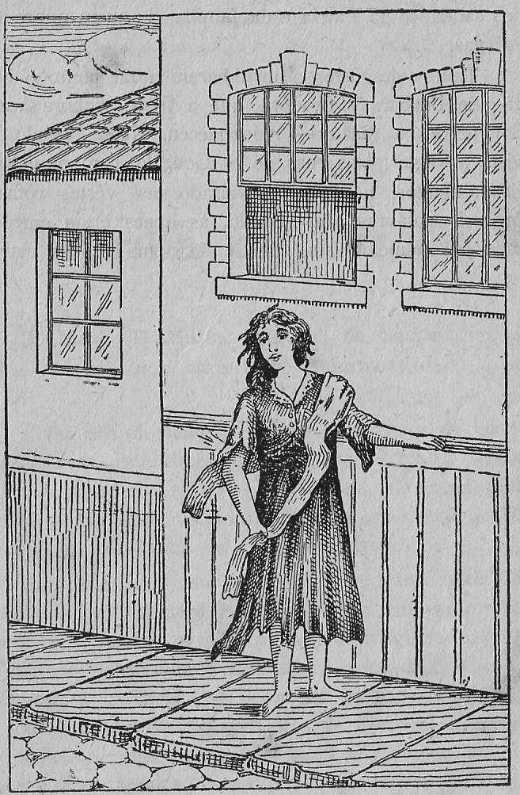
Tantos desgôstos acabrunharam a tal ponto o coração de Barbara Heleodóra, que a triste senhora acabou por perder a razão — enlouqueceu. Nesse estado era vista a vagar pelas ruas de S. Gonçalo, com os cabellos desgrenhados, o olhar desvairado, as véstes rôtas, a proferir palavras sem sentido, as quaes eram entrecortadas do nome de sua filha e do nome de seu marido.
Marilia de Dirceu
D. Maria Dorothéa Joaquina de Seixas foi, no seu tempo, a moça mais bella e formosa de VILLA RICA.
Tinha ella de vinte a vinte e dois annos de edade, quando veiu estabelecer-se em Ouro Preto o doutor THOMAZ ANTONIO GONZAGA, nomeado para exercer o cargo de Ouvidor. Gonzaga era portuguez de nascimento, mas filho de paes brasileiros.
Impressionado com a belleza extraordinaria da moça mineira, Gonzaga resolveu pedil-a em casamento. Acontecia, porém, que Gonzaga era magistrado, e os magistrados não podiam casar sem licença da Corôa. De sorte que o casamento de Gonzaga só poderia realizar-se com o consentimento da Côrte de Portugal. Gonzaga fez então um requerimento, em que pedia licença, e ficou esperando o despacho, acreditando que aquella não lhe seria recusada.
Emquanto esperava, ia o proprio Gonzaga bordando com suas mãos, o vestido de noiva de sua futura esposa, servindo-se para isso de um dedal e de uma agulha de ouro. Tambem lhe compunha versos, versos que depois foram publicados em livro intitulado Marilia de Dirceu. Tão bonitos eram esses versos que foram traduzidos em diversas linguas, e o livro Marilia de Dirceu foi, depois dos Lusiadas de Camões, o livro que tirou mais edições em nossa lingua.
Marilia era o nome, que GONZAGA lhe deu: Dirceu era o nome, que Gonzaga adoptou para si proprio, pois naquelle tempo era moda os poetas escolherem outro nome, differente do de baptismo. Dêsde a publicação do livro de poesias ficou dona Maria Dorothéa conhecida por Marilia de Dirceu, nome que a immortalizou.
Além de formosa, Marilia era moça muito séria e comportada. Apesar de noiva de Gonzaga, esperava a decisão do casamento para só então se approximar d'elle. De sorte que só se viam de longe, sem ter occasião de trocar palavra um com outro. Naquelle tempo os costumes eram muito severos.
Aconteceu, porém, que Gonzaga tomou parte na Inconfidencia Mineira. Descoberta esta, foi Gonzaga preso e remettido para o Rio de Janeiro. D'ahi foi degredado para a Africa.
Gonzaga, ao saber que seria deportado para a Africa, e tendo deixado de ser magistrado (pois fôra condemnado), mandou convidar Marilia a casar com elle e a partirem depois juntos para o exilio. Gonzaga, porém, não se portára bem no processo, que soffreu — negou que fosse inconfidente, arrumou a culpa para cima dos outros, e ainda fez versos em que lisonjeava o Visconde de Barbacena (o mesmo que o mandára prender) para ver si, por esse meio, obteria o seu perdão. Sabendo d'isso Marilia, e patriota como toda Mineira, negou-se a casar com elle. Todavia conservou-se fiel á sua memoria (que era o mais que ella podia fazer), e veiu a morrer solteira. Ao ser enterrada, seu corpo foi vestido de virgem, de véo e grinalda (1). Falleceu com a edade de 86 annos, em 1858.
Depois da publicação do livro Marilia de Dirceu, a fama da belleza de dona Maria Dorothéa espalhou-se por toda parte. A tal ponto que muitas pessôas foram a Ouro Preto só para conhecel-a. Ella, porém, modesta e despretenciosa, escondia-se para não ser vista. Só sahia á rua para ir á egreja. Vivia em casa, quieta no seu canto.
Gonzaga, emquanto esteve preso na Ilha das Cobras, não deixou de fazer-lhe versos. Não tendo, porém, nem tinta, nem papel, escrevia os versos na parede. Servia de tinta o fumo da candeia; servia de caneta o cabo das laranjas, que lhe davam como sustento.
Gonzaga não foi fiel a Marilia como esta lhe soube ser. Chegando á Africa, em Moçambique, casou com uma joven por nome Juliana Mascarenhas. Pouco depois, porém, enlouquecia, ralado de saudades do Brasil. Não levou muito tempo — morreu.
(1) J. NORBERTO — Brasileiras Celebres, pag. 178.

Marilia de Dirceu foi sepultada na Egreja de São Francisco de Assis, onde ainda se póde ver a cóva, que lhe recolheu os ultimos despójos. Tambem a casa, onde ella morreu, ainda existe em Ouro Preto: era uma casa não muito alta, com 7 janellas, tendo na frente um campo gramado. Em seu logar o Governo do Estado erigiu um grupo escolar, que recebeu o seu nome: Grupo Marilia de Dirceu.
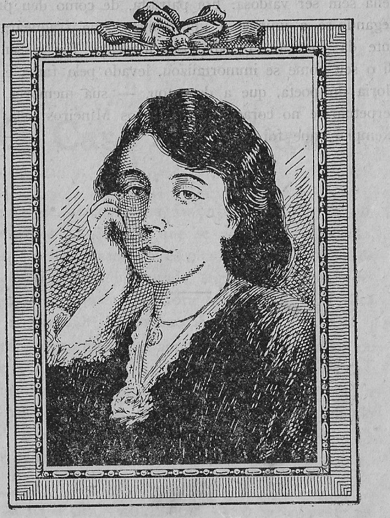
Marilia de Dirceu é digna de nossa veneração. Foi bella sem ser vaidosa. Foi patriota, de como deu prova, negando-se a unir-se a um homem, que fraqueára deante da Justiça. Foi virtuosa, modesta, fiel e sensata. Si o seu nome se immortalizou, levado pela fama e pela gloria do poeta, que a decantou, — sua memoria deve perpetuar-se no coração de todos os Mineiros pela vida exemplar, que foi a sua.
O Caso da Maçã
Depois de descoberta a Inconfidencia Mineira foram presos os conjurados, que se achavam em Minas, e conduzidos (algemados e escoltados) para o Rio de Janeiro, onde ia ser instaurado segundo processo (devassa), pois o primeiro já fôra aberto em Villa Rica perante o Visconde de Barbacena.
Durou o processo tres annos. Foram tres annos de tormento e de angustias para os miseros Inconfidentes, em duvida ácerca da sorte, que os esperava, mas com a certeza consoladora de que, com o seu acto julgado “infame” pela Côrte de Portugal, tinham punido (1) pela liberdade e independencia da Patria.
(1) NOTA PARA PROFESSOR — O verbo punir na accepção de pugnar é um classicismo, que se radicou no dialecto mineiro. Vid. Caldas Aulete, que cita os seguintes exemplos de Felinto Elysio: “Que punisse, pois, pela honra e decoro de Sua Alteza — Os que vinham punir pelos seus direitos.” A estes accrescentaremos o seguinte, que colhêmos em Garrett: Achas que fizemos mal em punir por nossos direitos? — Alfageme, acto III, scena I.
Durante esse tempo os Inconfidentes ficaram encerrados incommunicaveis, em subterraneos existentes na Ilha das Cobras, isto é, em prisões inféctas abaixo do nivel do mar, verdadeiras masmôrras, onde lhes faltava o ar e a luz, onde a humidade era tanta que lhes enregelava os membros, onde mais pareciam estar sepultados vivos do que detidos pelas auctoridades!
Entre os inconfidentes ahi encerrados achava-se o Tenente-Coronel Francisco de Paula Freire de Andrada, descendente, por parte de pae, do afamado Conde de Bobadella e, por parte de mãe, da familia Corrêa de Sá e Benevides. Ambas essas familias eram consideradas em Lisbôa como nobres, e ahi residiam, vivendo em amistosas relações com a Familia Real.
Ora, como naquelle tempo “morrer na forca” era considerado “morte infamante”, morte vergonhosa, — os parentes de Francisco de Paula Freire de Andrada empenhavam-se junto da Rainha de Portugal para que a provavel condemnação á forca de seu parente fosse “commutada”, isto é, fosse convertida em outra pena menor.
Tinha Freire de Andrada uma irmã, egualmente Brasileira, a qual residia no Rio de Janeiro, e era casada com abastado negociante Portuguez, estabelecido na rua do Ouvidor, a poucos passos da Egreja da Cruz dos Militares. Era o cunhado de Francisco de Paula um espirito absolutista e intransigente, o qual não perdoava ao irmão de sua esposa ter tido a ousadia de sublevar Minas para proclamar a Independencia do Brasil!
A irmã de Freire de Andrada, muito bondosa, muito carinhosa, interessava-se esforçadamente pela sorte de seu irmão. Para isso correspondia-se assiduamente com a familia Freire de Andrada, residente em Lisbôa. Carta ia, carta vinha, — em todas se tratava a sorte provavel, que teria o desventurado Inconfidente. Ora as cartas deixavam ver o receio de que elle seria condemnado á forca; ora apontavam a esperança de que essa pena seria commutada.
Depois de muitas cartas incertas, veiu afinal uma (foi isso em 1791), que, muito em segredo, communicava á irmã de Francisco de Paula que tinha sido lavrada em Lisbôa a Carta Régia de 15 de Outubro de 1790, a qual commutára a pena de morte a todos os conjurados, excepto a Tiradentes, mas que a referida Carta Régia só se tornaria publica depois que o Tribunal houvesse condemnado os réos á morte!
Queria a Metrópole que os conjurados passassem primeiro pelo choque de se saberem condemnados á morte, para, só depois d'esse grande tormento de espirito, ser-lhes dada a noticia de que a pena de morte fôra commutada na de exilio ou desterro para a Africa. Supremo requinte de crueldade!
Ao receber a carta com a grata noticia, a distincta senhora ficou logo muito desejosa de leval-a por portas travêssas ao conhecimento de seu desventurado irmão. Mas, como? Os inconfidentes eram guardados com sentinella á vista: nem siquer se communicavam entre si — cada um morava apartado dos outros em sua cella. As unicas pessôas com quem tratavam, eram os carceireiros, os sentinellas, as auctoridades, os padres, que de vez em quando iam exhortal-os a soffrer com resignação os tormentos, por que estavam passando. Por intermedio dos primeiros ella nada conseguiria — seria até comprometter-se (e comprometter seu irmão) arriscar-se por esse lado.
Estava nessa duvida, quando um raio de esperança lhe veiu aclarar o espirito:
— E, si tentasse arranjar como intermediario um dos padres?
Os padres é verdade que eram muito tementes á Corôa e muito fieis á Metrópole, mas, por outro lado, tinham muito dó dos pobres conjurados, e eram até os encarregados de levar-lhes os soccórros espirituaes e de mitigar-lhes o soffrimento.
Disposta a pôr em pratica a idéa, que lhe acudiu, a resoluta senhora tomou para seu confessor um dos padres encarregados de assistir aos Inconfidentes. Por este padre tinha ella noticia de como ia seu irmão, de como vivia atormentado com a quasi certeza de que seria condemnado á forca, de como se consumia no fundo de uma enxovia, já do mau passadio que lhe davam, já dos desgôstos por que ia passando.
Por fim a piedosa senhora resolveu encarregar o padre da melindrosa missão. Mas, como? Dizer-lhe abertamente, palavra por palavra, que transmittisse a seu irmão o que dizia a carta? Com certeza o padre não se prestaria a isso. Teria, pois, de recorrer a um meio, ao mêsmo tempo encoberto e innocente, que permittisse levar a noticia a seu destino, sem que o portador ficasse compromettido.
Estava a carinhosa irmã de Freire de Andrada a assumptar qual seria o meio, quando succedeu receber de presente pequena partida de saborosas maçãs. Foi prompto receber as maçãs, e num átomo teve a inspiração de mandar uma de presente a seu irmão, por intermedio do padre, collocando no interior da fruta, disfarçadamente, um bilhete com a grata noticia.
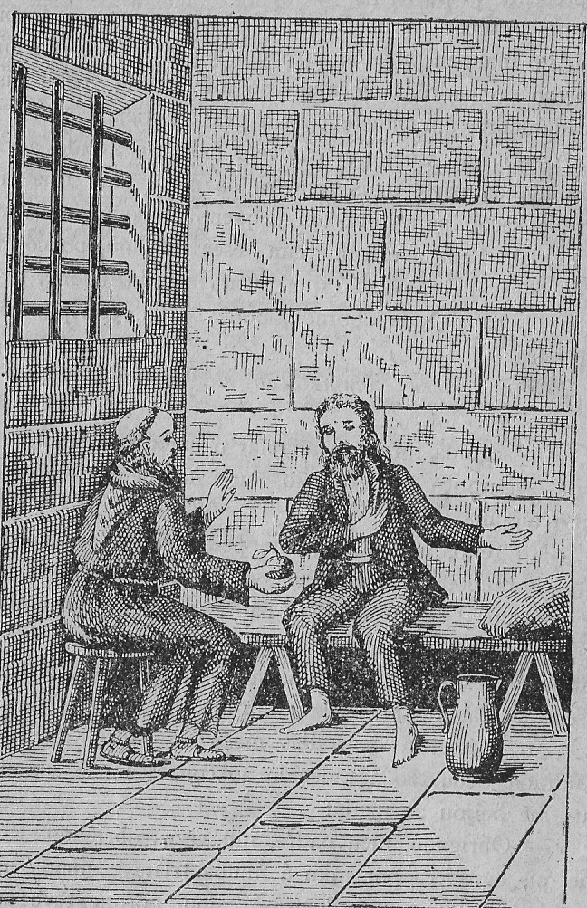
Assim fez. Com um canivete bastante afiado abriu no fundo da parte mais concava da maçã uma fina entalha, e sacou para fóra um pequeno batóque de fórma pyramidal. Pela abertura feita escavou um pouco do miolo da fruta, e, no vão que ficou, introduziu uma tirazinha de papel toda dobrada, onde se lia, escripto com sua letra:
“Com certeza commutação da pena de morte á ultima hora.”
Em seguida tornou a adaptar o batóque á fruta com tanta segurança e perfeição, que ninguem descobriria cousa alguma.
Isto feito, no dia seguinte pediu ella a seu confessor, chorando, que se prestasse a “levar aquella maçã de presente a seu irmão”. O padre acceitou a incumbencia, guardou a maçã em um dos grandes bôlsos de sua batina, e nesse mêsmo dia a entregou na prisão a Francisco de Paula Freire de Andrada.
Ao receber a maçã das mãos do padre, Freire de Andrada ficou tão agradecido ao confessor de sua irmã que lhe beijou as mãos:
— Obrigado, meu padre, mil vezes obrigado. Rógo-lhe que agradeça por mim á minha triste e amada irmã.
Ia continuar, mas logo se calou, porque teve outra idéa...
— Outros a quem arrastei na desgraça, merecem, mais do que eu, ser consolados... Meu padre, complete a sua obra de piedade. Leve esta maçã, de minha parte, a meu infortunado amigo e companheiro de desgraça o Sr. Vigario Toledo.
O padre enterneceu-se ante o altruismo de Francisco de Paula, que, em vez de lembrar-se primeiro de si (como faria, si fosse egoista), se lembrou antes do amigo, que por instigação sua entrára na conspiração: horas depois fazia entrega da maçã ao Vigario Carlos Correia de Toledo.
Este, ao partir a maçã para comer, viu cahir o bilhetinho. Abriu-o soffregamente e leu-o. A noticia não lhe causou o regosijo, que causaria a Freire de Andrada, ou a outro conjurado secular, pois os conjurados ecclesiasticos, em razão de seu caracter sacerdotal, não podiam ser condemnados á morte. Era uma especie de privilegio, de que os padres gosavam (1).
Toledo imaginou, então, que Freire de Andrada lhe mandára aquella noticia, para que fosse transmittida aos outros conjurados. Mas, incommunicavel como se achava, não poude passal-a a seus companheiros.
Assim, o segredo, que a irmã de Freire de Andrada com tanto trabalho encaminhára ás suas mãos, extraviára-se e não chegára ao conhecimento do infortunado Inconfidente! E Toledo estava na illusão de que este sabia de tudo que ia acontecer! Como as apparencias illudem em certos momentos da vida!
(1) Havia 5 padres na Conspiração Mineira: conego Luiz Vieira da Silva, vigario Toledo, padre Rollim, padre José Lopes de Oliveira e padre Manoel Rodrigues da Costa.
A execução dos conjurados estava marcada para o dia 21 de Abril. Os juizes do Tribunal (alçada) até o ultimo momento demoraram a leitura da commutação da pena lavrada dezoito mezes antes, retendo-a em seu poder e em segredo todo este tempo! Assim faziam para mais aggravar o padecimento moral dos infelizes patriotas mineiros. Corações empedrados os d'esses homens, que juizes não eram. mas carrascos, porque a missão da Justiça é julgar e não torturar!
A noite de 20 para 21 de Abril de 1792 foi a noite sinistra, em que os réos deviam preparar-se para no dia seguinte receber a morte. Para isso reuniram-se numa sala chamada Oratorio, e ahi foram confessados por frades franciscanos, que os encorajaram a soffrer com resignação a ultima prova — o supplicio infamante da fôrca. Como o padre Toledo e os demais conjurados ecclesiasticos foram dispensados de comparecer ao Oratorio, — continuou Freire de Andrada na ignorancia do segredo, que sua irmã lhe fizera annunciar.
Noite horrivel foi essa, em que se debateu o espirito de Freire de Andrada, não porque se acovardasse em face da morte, mas porque, pertencendo a familia nobre, se envergonharia de subir á fôrca, — pois iria desmerecer a hierarchia de sua illustre familia, além da sua propria. Naquelle tempo os preconceitos de aristocracia e nobreza eram muito accentuados. O supplicio da fôrca era então uma execução infamante, só reservada aos individuos da ultima degradação social. Desejava Freire de Andrada que o enforcamento fosse substituido pela decapitação, ou pelo fuzilamento, mas, como a substituição representava uma commutação de pena, só poderia ser decretada pelo unico poder competente — a rainha de Portugal.
Sem esperanças, desalentado, viu raiar o dia 21 de Abril. Pela manhã, reunidos os Inconfidentes na sala da Alçada, o escrivão do Tribunal leu o accordam pelo qual, de conformidade com o disposto na Carta Régia de 15 de Outubro de 1790, era a pena de morte commutada na de degrêdo para a Africa, excepção feita de Tiradentes, que seria suppliciado. Em seguida foram tiradas as algemas a todos os conjurados, excepto a Tiradentes.
Freire de Andrada não desejava fugir á morte: desejava apenas que a execução fosse outra qualquer, — menos a da fôrca, incompativel com a sua condição de nobre. Ao ouvir a communicação official de que a sua vida seria poupada e de que só Tiradentes teria a gloria de morrer, — longe de alegrar-se, entristeceu. Invejou a sorte de Tiradentes, que iria ficar na Historia como o Próto-Martyr da Republica. Poz-se então a contemplar Tiradentes, que lá estava no meio da sala, calmo e sorridente, com os pulsos algemados — e, embevecido, extactico, Freire de Andrada via agora no simples alferes de cavallaria, hontem seu commandado e subalterno, o Apóstolo da Liberdade, o Redivivo da Historia, o Genio da Independencia, a Suprema Encarnação da Patria!
Tiradentes
Assim se chamava, por alcunha do povo (porque nas horas vagas exercia com grande pericia a profissão de dentista), o alferes de cavallaria Joaquim José da Silva Xavier, notabilissimo Mineiro, natural da comarca do RIO DAS MORTES (hoje municipio de São João d'El-Rey), o qual estava fadado, por sua grande abnegação patriotica, a immortalizar-se na Historia como o Próto-Martyr da Republica. Foi o chefe de uma revolução, que rebentou em VILLA RICA (Ouro Preto), no anno de 1789, para proclamar a Independencia do Brasil. Essa revolução tomou depois o nome de Inconfidencia Mineira, que lhe foi dado pelas auctoridades portuguezas.
Dêsde o caso do MORRO DA QUEIMADA (conhecido na Historia por Sedição de Villa Rica), que atraz deixámos narrado, — que o povo mineiro vinha pensando em sacudir o jugo e a tyrannia da Metrópole. Tiradentes inspirou-se em Felippe dos Santos.
Por volta do anno de 1788 o despotismo tinha attingido o seu mais alto grau. Tendo-se exgottado, havia já alguns annos, as minas de ouro e diamantes, e sendo o povo obrigado a contribuir todos os annos com uma somma certa de ouro (quer as minas produzissem, quer não), — aconteceu que o povo se foi atrazando, com isso a divida foi crescendo, crescendo, attingindo em 1789 a 600 arrobas de ouro.
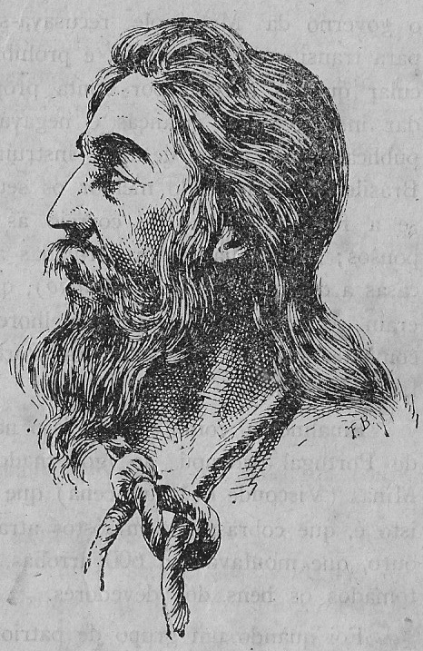
Não tendo o povo d'onde tirar para pagar (porque as minas estavam exgotadas), resolveu fundar fabricas de tecidos. Muitas fabricas foram então fundadas, attingindo a centenas de teares. Iam os Mineiros começar a prosperar na industria, — quando a Côrte de Portugal, tendo noticias do succedido, ordenou por alvará que fossem destruidas todas as fabricas! (1). Ficariam assim os Brasileiros obrigados a só vestir do panno, que fosse importado de Portugal, o qual era de pessima qualidade e custava tres vezes mais do seu valor! Si bem a Côrte de Portugal o ordenou, melhor o executaram os agentes da Real Fazenda — foram destruidas todas as fabricas, com grande prejuizo das pessôas, que haviam empatado seus capitaes na montagem dos machinismos!
(1) Alvará de 10 de Janeiro de 1785.
Por outro lado outras miserias opprimiam o povo: o governo da Metrópole recusava-se a abrir estradas para transito do commercio, e prohibia a qualquer particular que as abrisse por conta propria; recusava-se a dar instrucção ás crianças e negava-se a abrir escolas publicas, com medo de que, instruindo-se, ficassem os Brasileiros conhecendo melhor os seus direitos; negava-se a fornecer linhas de correio ás principaes villas e pousos; as familias eram obrigadas a hospedar em suas casas a qualquer soldado (dragão), que pedisse pousada; eram recrutados moços das melhores familias, para ir combater no sul, na guerra que Portugal mantinha contra a Hespanha.
Finalmente, como si tudo isso não bastasse, a Côrte de Portugal ordenou ao governador da Capitania de Minas (Visconde de Barbacena) que lançasse a derrama, isto é, que cobrasse os impóstos atrazados do quinto do ouro, que montavam a 600 arrobas, sob pena de serem tomados os bens dos devedores.
Foi quando um grupo de patriotas achou que tinha chegado o momento de acabar de uma vez com tanto despotismo. O povo achava-se muito descontente, de sorte que podiam contar com o apoio do povo. A' frente do grupo achava-se o alferes Joaquim José da Silva Xavier. Faziam parte da conspiração os homens mais importantes de Villa Rica, a saber: os doutores e poetas Claudio Manoel da Costa, Thomaz Antonio Gonzaga e Alvarenga Peixoto; o tenente-coronel Francisco de Paula Freire de Andrada, commandante da força; o engenheiro Dr. José Alvares Maciel; o Dr. Domingos Vidal; o sargento mór Luiz Piza; o conego Luiz Vieira da Silva; os padres Rollim e Toledo, além de outros.
O plano da conspiração era o seguinte:
Ficariam esperando o dia da derrama, isto é, o dia em que o governador mandasse cobrar os quintos atrazados. Nesse dia romperia a revolução em Villa Rica e em outros pontos da Capitania.
Tiradentes gritaria ao povo:
— Meus amigos, vencer ou morrer! Viva a Liberdade!
Nessa occasião o commandante da força Freire de Andrada appareceria á frente do Regimento, apparentando oppor-se ao levante, e perguntando aos revoltosos — o que queriam. Os conjurados responderiam:
— Queremos a Liberdade.
Então o commandante Freire de Andrada concordaria, dizendo:
— E' justa a aspiração do povo.
Em seguida faria um discurso aos soldados, incitando-os a ficar ao lado do povo. Uma força destacada iria a Cachoeira do Campo, onde se achava o governador Visconde de Barbacena, afim de prendel-o. D'ahi iria o governador escoltado até á divisa com a Capitania do Rio — PARAHYBUNA. Então seria mandado em paz, dizendo-se-lhe:
— Faça bôa viagem, e diga lá em Portugal que na America já não se precisa de seus generaes.
Depois de vencedora a revolução, o plano do governo seria o seguinte:
Proclamada a Republica, tratar-se-hia de conseguir que o Rio, S. Paulo e todas as outras capitanias do Brasil adherissem; seriam libertados todos os escravos; a capital de Minas e séde do governo seria transferida para S. João d'El-Rey; seria perdoada a divida do quinto do ouro, assim como qualquer divida para com a metrópole; seriam franqueadas as minas; o commercio e a industria seriam livres; seria fundada uma universidade em Villa Rica; seriam fundadas muitas escolas publicas para instrucção gratuita da mocidade; seriam supprimidos os impostos vexatórios; a bandeira da nova republica seria um triangulo com a seguinte inscripção latina — Libertas quae sera tamen, — inscripção que hoje se lê nas armas do nosso Estado.
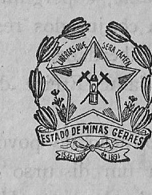
Tudo parecia indicar que a conspiração sahiria triumphante, quando a traição de um, e depois de mais dois, de seus membros veiu desconcertar todo o plano:
O Portuguez Joaquim Silverio dos Reis era devedor á Real Fazenda de grande somma — nada menos de 173 contos; tinha elle sido processado por causa dessa divida, sendo qualificado no processo de “fraudulento e falsificador”. Sabendo Silverio que um dos pontos da conspiração era — perdoar as dividas para com a Metrópole, entrou para ella, não com o fim patriotico de proclamar a Independencia do Brasil (pois, como extrangeiro que era, nada tinha com isso), mas com o fim ganancioso de obter mais tarde, com a victoria da revolução, o perdão da divida. Era Silverio um refinado hypocrita, alma vil e peçonhenta, um espirito venal e mesquinho. Só ha verdadeiramente uma palavra, que possa qualifical-o — era um infame. Tal foi o fingimento, com que Silverio soube insinuar-se, que acabou por alcançar a confiança dos conjurados. Quando, porém, presentiu que a conspiração poderia mallograr-se, — resolveu ir denunciar todo o plano ao Visconde de Barbacena para, por essa fórma, obter da Metrópole, como obteve, em recompensa de sua infamia, o perdão da divida.
A Joaquim Silverio dos Reis vieram juntar-se depois mais dois traidores e denunciantes, que tambem faziam parte da conspiração — Basilio de Britto e Ignacio Corrêa Pamplona, egualmente extrangeiros, pois eram tambem Portuguezes de nascimento.
Resta-nos o consolo de que dos tres traidores nenhum era Brasileiro. Os Brasileiros mantiveram-se firmes até o ultimo momento, sem fraquear, — e a prova de que não fraquearam é que os principaes cabeças foram condemnados á morte, sendo a pena commutada na de degrêdo para a Africa, excepto a Tiradentes, que foi enforcado.
Ao receber a denuncia, que lhe foi levada por Joaquim Silverio, que fez o Visconde de Barbacena? Mandou immediatamente suspender a derrama, e communicou tudo ao Vice-Rei do Brasil Luiz de Vasconcellos, residente no Rio de Janeiro. Coincidiu que nessa occasião Tiradentes se achava no Rio de Janeiro, tratando de arranjar adhesões para a revolta. O vice-rei deu ordem para prendel-o, recebendo Tiradentes voz de prisão numa casa da rua dos Latoeiros (Gonçalves Dias), onde se achava hospedado. Em seguida o vice-rei mandou ordens a Minas para prender os outros conjurados, que foram transportados (algemados e escoltados) para o Rio de Janeiro, excepto Claudio Manoel, que se suicidou em Villa Rica, na prisão.
O processo seguiu o seu curso, durando quasi tres annos. Ao cabo foi lida a sentença, que condemnava á fôrca onze dos conjurados, sendo os demais condemnados a degrêdo perpetuo na Africa. Foi lida a sentença na noite de 18 para 19 de Abril de 1792, ás tantas da madrugada, no meio de grande silencio e escuridão, em que se achava mergulhada a sala chamada do Oratorio, onde estavam presentes todos os conjurados.
Após a leitura da sentença foi permittido que os conjurados, depois de tres annos de separados e incommunicaveis, pudessem, emfim, rever-se e communicar-se. Foi uma scena das mais tocantes e commoventes. Cada conjurado sentia mais a sorte do companheiro e amigo do que a sua propria; procuravam consolar-se uns aos outros com palavras de affecto e carinho. Um pedia perdão a outro — cada qual se julgava culpado de haver arrastado o amigo e companheiro á conspiração. Só de uma cousa não se arrependiam — era de haverem tentado a Independencia da Patria, sacudir para sempre o jugo e oppressão despótica da Metrópole. Em consciencia, cada um sabia que tinha cumprido o seu dever.
O mais calmo e estóico de todos era Tiradentes. A sua figura já não era a de um homem — era a de um apóstolo, de um abnegado, de um martyr. Durante o processo, Tiradentes não cansou de dizer que o chefe da conspiração fôra elle, que só elle fôra o auctor de tudo, — para assim chamar sobre si toda a culpa, e innocentar seus amigos. Vendo então que, apesar disso, não conseguira livrar da morte a 10 de seus companheiros, Tiradentes pediu-lhes insistentemente perdão, affirmando-lhes que por toda fórma procurára innocental-os, inculpando-se sózinho.
D'ahi a 48 horas, isto é, no dia 20 do mesmo mez e anno, foi lido o novo Accordam do Tribunal, pelo qual era a pena de morte commutada na de degrêdo para a Africa, excepto a Tiradentes, que seria levado á fôrca. Immediatamente foram tiradas as algemas a todos os conjurados (excepto a Tiradentes), reunidos de novo na sala da Alçada.
Vendo, emfim, que, á ultima hora, era poupada a vida a seus companheiros, Tiradentes sentiu a alma expandir-se-lhe do mais vivo jubilo. Era isso mesmo o que elle sempre desejára — expiar sózinho a conjuração, e salvar da morte os seus infortunados amigos. Sorriu para todos, e, apesar de estar com as mãos algemadas, fez-lhes, de longe, um aceno de parabens, congratulando-se com todos pela commutação da pena. Alma nobre, grande a d'esse supremo heróe!
Chegou, emfim, o dia da execução do denodado patriota. O vice-rei do Brasil (que era então o Conde de Rezende) fez enfeitar a cidade, como si fosse dia de festa. A tropa deixou os quarteis e veiu para a rua, toda em uniforme de grande gala, fazendo soar estrepitosamente as suas charangas. Os officiaes e commandantes vinham montados em cavallos com ferraduras de prata e laços de fita nas caudas e nas clinas. Ainda mais: os arreios e estribos eram tambem de prata; as mantas eram de velludo ou de seda carmezim com franjas de ouro.
A forca fôra armada no Campo da Lampadosa. Era alta, com 20 degraus, pelos quaes se subia para o patibulo: dominava toda a praça.
Organizou-se uma procissão funebre para conduzir o réo. Tiradentes ia na frente do cortejo, rodeado de frades, que o iam confortando com palavras ungidas de fé. Tiradentes vestia o traje dos condemnados (alva), e trazia pendente do pescoço a corda dos enforcados (baraço). Levava á altura do peito um crucifixo, que aconchegava com ambas as mãos.
Durante o trajecto da prisão á forca Tiradentes caminhou sempre com passo seguro, — impávido, sem medo, firme, erécto! De vez em quando baixava os olhos até o crucifixo, e apertava-o mais de encontro ao peito.
A's 11 horas do dia devia ser a execução. Era um dia de pleno sol, de um céo limpo de nuvens. A praça em volta regorgitava de tropa e de uma multidão de curiosos, que se apinhavam para assistir o sacrificio.
Tiradentes, com as faces abrasadas, subiu com ligeireza os 20 degraus do patibulo. Ao attingir o tôpo do estrado, Tiradentes, de pé, com a cabeça alta, com o seu manto sacudido e ondulado pelo vento, com a negra barba a cahir-lhe em fios pelo peito, espraiou o olhar por toda a praça. Pela ultima vez contemplava a Patria, — a Patria por quem ia morrer e sacrificar-se, a Patria por quem dava o seu sangue e a sua vida! A sua attitude nessa hora parecia sobrenatural: de pé no estrado, illuminado pelo sol, que lhe tecia uma auréola em torno da cabeça, altivo e sereno, desafiando com o olhar a tyrannia, lobrigando no horizonte, para d'ahi a um seculo, o raiar da Republica no Brasil, saudando a Posteridade, que iria sagral-o Heróe e Próto-Martyr! O patibulo não era para elle um degrau infamante, mas o pedestal da Gloria e da Immortalidade! O seu enforcamento não seria a ultima das affrontas cuspida á sua face pela Metrópole, mas a maior, a mais excélsa de todas as glorificações!

Em seguida pediu ao carrasco que não demorasse a execução. Um frade, que fôra destacado para assistir os ultimos momentos do condemnado, fez pequena prédica allusiva ao acto, falando ao povo. Isto feito depois da ultima prece proferida por Tiradentes, foi o seu corpo içado á forca pelo carrasco. Em poucos segundos era o corpo suspenso da trave, — e Tiradentes exhalava o ultimo suspiro.
Morto Tiradentes, era de crer que tudo houvesse acabado em relação ao chefe da conjuração mineira. Mas, não. Não contente com o tirar-lhe a vida, a tyrannia foi mais longe — tripudiou tambem sobre seu cadaver, profanou tambem os seus ultimos despójos, violou nelle o respeito, que se deve a todos os mortos. Seu corpo foi esquartejado; sua cabeça, decepada, salgada e levada para Villa Rica, onde a fincaram num póste, no trecho mais frequentado, encerrada dentro de uma gaiola de ferro e guardada por sentinella á vista; seus quartos foram deixados ficar insepultos nos logares, onde se haviam realizado as reuniões dos inconfidentes. Sua casa foi demolida; o terreno foi salgado, levantando-se em seu logar um padrão infamante; seus bens foram tomados; seus descendentes foram declarados infames.

Entretanto, exactamente 30 annos depois de sua execução, isto é, em 1822, realizava-se uma parte da nobre aspiração de Tiradentes: era proclamada a Independencia da Patria, era o Brasil reconhecido pela Metrópole uma nação livre e autonoma. Quando nesse anno estourou em Villa Rica a noticia do brado — Independencia ou Morte!, — proferido por Dom Pedro nas margens do rio Ypiranga, o povo em massa dirigiu-se ao logar, onde fôra a casa de Tiradentes, e d'ahi arrancou o padrão infamante, mandado collocar 30 annos antes. Outra coincidencia notavel: A cadeia onde, no Rio de Janeiro, haviam estado presos muitos dos conjurados, veiu a ser, em 1829, o edificio onde funccionou a PRIMEIRA ASSEMBLÉA CONSTITUCIONAL DO BRASIL, toda constituida de representantes do Povo. Um dos deputados a essa Assembléa foi o conjurado José de Rezende Costa Filho, que teve a gloria de assentar-se, como representante do povo brasileiro, no mêsmo edificio, onde, annos antes, estivera encarcerado como conspirador! Nesse mesmo edificio, ex-Cadeia Velha, funccionou até ha pouco tempo a Camara dos Deputados.
Não foi só. Exactamente um seculo depois de estalar a Conjuração Mineira, isto é, em 1889, outra parte do sonho de Tiradentes convertia-se em realidade — era proclamada a Republica no Brasil. Dêsde então a Historia o sagrou Proto-Martyr da Republica, e o dia de sua suppliciação (21 de Abril) ficou sendo considerado dia de festa nacional.
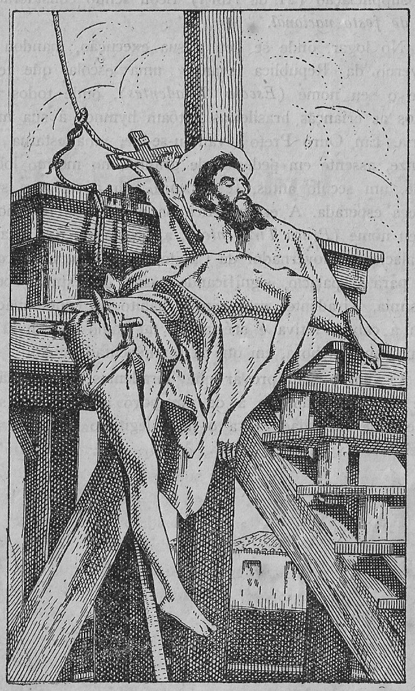
No logar, onde se deu a sua execução, mandou o Governo da Republica levantar uma escola, que tem hoje o seu nome (Escola Tiradentes), onde todos os annos as crianças brasileiras entôam hymnos á sua memoria. Em Ouro Preto levantou-se-lhe uma estatua de bronze, assente em pedestal de granito, no mesmo local onde, um seculo antes, se fincára um póste com sua cabeça espetada. A estatua fica na praça, que tem hoje o seu nome (Praça Tiradentes), a mesma em que ficava o palacio do Governador da Capitania. A estatua dá costas para o palacio, significando assim o desprezo pela tyrannia. Tiradentes está com o habito de condemnado, com a cabeça altiva e erécta, — tal como enfrentou o despotismo na hora, em que ia ser executado.
O tempo veiu provar que Tiradentes tinha razão: que sua aspiração era a de um povo inteiro, que seu desejo de Liberdade fôra o mais legitimo de todos os direitos!
O Escravo Fiel
Era tal o despotismo que nos fins do seculo 18 opprimia geralmente a população da Capitania de Minas, que todas as classes sociaes tomaram parte na Conjuração Mineira. Todas as camadas estavam ansiosas por sentir-se alliviadas do jugo da tyrannia, pois o despotismo era um e o mêsmo para todos, — para ricos e pobres, para nobres e plebeus.
Era, pois, natural que succedesse o que veiu a succeder: que cada classe social tivesse o seu representante na Inconfidencia Mineira, que cada profissão tomasse parte no levante. Assim foi que as letras e a jurisprudencia estiveram representadas pelos poetas e doutores em leis Claudio Manoel da Costa, Ignacio Alvarenga Peixoto e Thomaz Antonio Gonzaga; a classe militar pelo tenente coronel commandante da força Francisco de Paula Freire de Andrada e pelo sargento-mór Luiz Piza; a classe ecclesiastica pelos padres Oliveira Rollim, Manoel Rodrigues da Costa, José Lopes de Oliveira, Carlos Corrêa de Toledo e Luiz Vieira da Silva; a classe medica pelo Dr. Domingos Vidal; a engenharia e a industria pelo Dr. José Alvares Maciel; a classe commercial ou commercio pelo negociante Domingos de Abreu Vieira; a classe caixeral pelo guarda-livros Vicente Vieira da Motta; a classe operaria pelo sapateiro Manoel Capanema.
Os escravos não constituiam uma classe social, pois eram considerados “propriedade de seus senhores”; não gosavam as regalias, de que gosa o homem, que está na plena posse de sua liberdade. Pois, não obstante, não deixou tambem a escravidão de tomar parte indirecta na conjuração, podendo dizer-se que ella esteve representada pelo negro escravo Nicolau, heróe do presente conto.
Era Nicolau escravo a serviço do conjurado DOMINGOS DE ABREU VIEIRA. Era este, na occasião em que se descobriu a conjuração, negociante estabelecido em Villa Rica, tendo antes residido em Minas Novas (Norte de Minas), onde fóra tenente coronel de cavallaria. De setenta annos de edade, velho, alquebrado, Domingos Vieira era assistido em seus achaques por este escravo, que lhe votava dedicação extrema.
Descoberta a conjuração, arrolado Domingos Vieira entre os conjurados, — viu fugir de si muitos amigos, que na véspera se gabavam de contal-o entre suas relações. As auctoridades desconfiavam dos proprios amigos dos conjurados: a simples circumstancia de ser “amigo de um inconfidente” tornava suspeita a qualquer pessôa. A' vista d'isso Domingos Vieira viu-se abandonado por quasi todos os amigos da véspera. Pois bem. Na hora, em que esse homem viu escapar a fortuna; na hora, em que se viu colhido nas malhas de um processo; na hora, em que viu fugir de si, horrorizados de seu contágio, homens da alta sociedade, que na véspera se diziam seus amigos, — quem é que lhe veiu extender os braços, quem o veiu amparar e consolar, quem lhe veiu mitigar as agruras do calabouço? Um humilde negro, um simples escravo, a menos graduada de suas relações da véspera! Ah! Nessa hora Domingos Vieira comprehendeu todo o alcance da generosidade de seu sérvo, e mediu tambem a mesquinhez da ingratidão de seus suppóstos amigos de ontem! Extendeu os braços algemados para Nicolau, que ali estava, de joelhos perante as auctoridades, implorando, com lagrimas nos olhos, que lhe permittissem acompanhal-o:
— Vem a mim, Nicolau. Na escala social foste ontem o ultimo dos meus amigos, porque eras um simples escravo. Hoje, agora, és o maior de todos, sinão o unico de todos!
As auctoridades enterneceram-se deante d'esse quadro, e permittiram a Nicolau que acompanhasse seu amo.
Domingos Vieira seguiu a cavallo, escoltado, até ao Rio. Nicolau seguiu a pé, atraz do animal, que seu amo montava. Parecia um cachorro acompanhando o dono, parecia a sombra acompanhando o corpo. Venceu passo por passo os 500 kilometros da estrada, que communicava Minas e Rio (Caminho Novo), cansou-se, esfalfou-se, extenuou-se, — mas nem um momento desfalleceu, nem um momento desistiu de acompanhar a seu amo e senhor!
No Rio de Janeiro foi Domingos Vieira encerrado em uma prisão subterranea, quasi desprovida de ar e de luz; chamava-se segredo essa especie de tumulo de pessôas vivas. Nicolau foi admittido a ter entrada na mêsma célla, pois não era conjurado. Ahi se conservou, velando por seu amo durante todo o tempo, que durou o processo (3 annos), curando-o em seus achaques, consolando-o com palavras de affago e carinho.

Domingos de Abreu Vieira teve a honra de ser um dos 11 conjurados condemnados á morte. Preparava-se Nicolau para acompanhar seu senhor ao supplicio, quando, dois dias depois, teve noticia de que a pena ultima fôra commutada na de degrêdo perpétuo para a Africa. A seu amo designaram o presidio de Machimba para cumprir a pena de exilio.
Nicolau não o abandonou. Tomou com elle o mêsmo navio de véla, que os levou para o degrêdo. Lá assistiu ao lado de seu amo, sempre devotado e solicito, até que a morte veiu cerrar-lhe os olhos. Acompanhou-o depois até á ultima morada, e sobre a cóva, que lhe recebeu os ultimos despójos, desfiou lagrimas copiosas, — lagrimas que eram a sua alma a derreter-se em pranto e saudade!
O nome d'esse escravo, protótypo da fidelidade, não deve nunca ser esquecido: hade perpetuar-se na lembrança de todos os Mineiros através da consummação dos seculos.
Constante como a sua fidelidade hade ser a lembrança de seu nome no espirito dos póvos.
O Diamante do Abaeté
Nos fins do seculo 18 (ha, portanto, duzentos e tantos annos), veiu estabelecer-se em Lavras do Funil, localidade de nosso Estado na zona do Oéste, um Paulista por nome Manoel Gomes Baptista, mestiço, descendente da tribu dos Caiapós.
Para felicidade de Manoel Baptista, aconteceu passar por aquellas paragens um seu parente e amigo, o qual lhe fez presente de um roteiro, que ensinava o caminho para uma jazida de ouro, ainda não explorada, lá para as bandas da MATTA DA CORDA. O ouro era tanto nessa jazida — dizia — que só poderia ser transportado em carros de bois!
Manoel Baptista, destemido e ambicioso, resolveu internar-se no Sertão para ir desencantar a mina. Para isso organizou uma bandeira com muitos faiscadores, levando tambem em sua companhia um padre portuguez, que se dizia seu amigo, e se chamava Anastacio Gonçalves Pimentel.
Guiado sempre pelo roteiro, que seu parente lhe déra, e sem nunca desanimar, apesar dos muitos riscos e trabalhos, que soffreu durante a jornada, — Manoel Baptista veiu afinal a descobrir a mina, que era effectivamente de uma riqueza e abundancia extraordinaria.
Entre os garimpeiros, que foram com elle, um havia muito pratico em mineração de diamantes.
Examinando o cascalho dos barrancos no rio ABAETÉ, o pratico logo achou signal da existencia de diamantes. A' vista disso propoz a Manoel Baptista que explorasse o rio, abrindo uma cata. Assim fizeram, com grandes difficuldades, pois lhes faltavam os machinismos e instrumentos necessarios.
Da expedição do alferes Manoel Gomes Baptista fazia parte um seu filho, rapaz de uns 15 annos de edade, de nome ANTONIO, o qual, apesar de não ser ainda homem feito, não duvidou acompanhar seu pae a excursão tão perigosa.
No segundo dia, em que estavam na extracção do cascalho, á hora do almoço, foram os mineiros fazer a refeição no rancho, ficando sózinho, a tomar conta da cata, o filho de Manoel Baptista, que se assentou numa grande pedra no meio do rio. Aconteceu que a agua do rio começou a clarear, e não tardou muito que Antonio visse brilhar no fundo uma cousa luminosa a modo de um raio de sol. A principio não deu attenção. Mas, por mais que desviasse os olhos, volta e meia lá estava o ponto luminoso do fundo do rio a ferir-lhe a vista. Então imaginou que poderia ser alguma pedra de valor.
Para ter a certeza resolveu descer ao poço. Lá chegando, ao tocar com as mãos no ponto luminoso, certificou-se de que era um crystal clarissimo, do tamanho de um ovo. Correu logo a mostral-o a seu pae. Este, pouco entendido, não conheceu o que era, mas chamou o pratico para dar opinião. Mal o pratico pegou na pedra, conheceu logo que era um grande diamante. Foi tal a sua alegria, que quasi desmaiou de commoção. Disse a Manoel Baptista:
— E' um diamante, que todo o dinheiro do Reino não chega para pagar!
Manoel recommendou ao pratico que guardasse segredo, promettendo recompensal-o generosamente. Resolveu ir logo embora com o diamante. Suspendeu então o serviço da cata e deu ordem á bandeira de regressar.
O pratico, porém, não guardou o segredo promettido, e foi revelal-o ao padre Anastacio. Este tomou-se logo de grande ambição, e começou a desejar para si a posse do diamante, disposto até a tomal-o, á força, d'aquelle que sempre fôra seu amigo, e a quem devia agasalho e hospitalidade.
Para conseguir a sua maldosa tenção, Anastacio chefiou uma revolta contra Manoel Baptista. Este, porém, reunido a seu filho e a outros companheiros, que não o abandonaram, enfrentou os amotinados com toda a coragem. Empunhando uma espada, gritou com voz de trovão:
— Arréda! Arréda! Sinão morre aos golpes d'este ferro!
O padre teve medo; os seus cumplices tambem. Então Manoel Baptista e seus companheiros tomaram uma canôa, na qual se transportaram á outra margem do rio, deixando ficar os amotinados do outro lado. Saltando em terra, Manoel Baptista inutilizou a canôa, para que a mesma não viesse, por qualquer fórma, a servir de meio de transporte aos contrarios.
Que fez o padre Anastacio? Rodeou por outro lado, sempre em perseguição de Baptista, e foi denunciar ás auctoridades o achado do diamante.
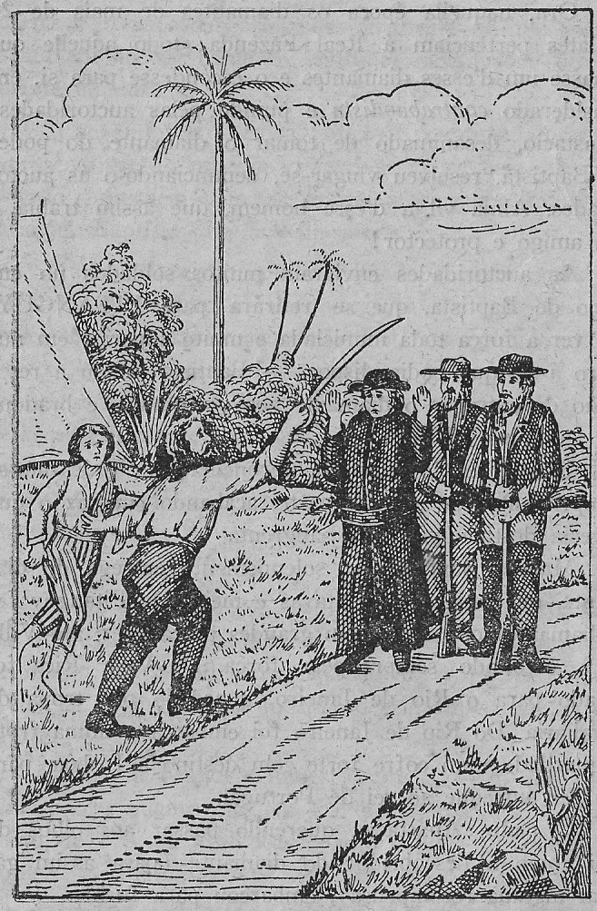
Ora, naquella época os diamantes de mais de 24 quilates pertenciam á Real Fazenda; todo aquelle que achasse um d'esses diamantes e o escondesse para si, era considerado contrabandista e punido pelas auctoridades! Anastacio, desanimado de tomar o diamante do poder de Baptista, resolveu vingar-se, denunciando-o ás auctoridades. Alma vil a d'esse homem, que assim trahia o seu amigo e protector!
As auctoridades enviaram muitos soldados no encalço de Baptista, que se retirára para PITANGUY. Ao ver a força toda municiada e muito superior em numero á de que podia dispor, — Baptista tomou a resolução de entregar o diamante aos potentados, e bradou:
— Viva El-Rey!
Houve então perfeita reconciliação. Trocaram-se cumprimentos de parte a parte, acabando em paz o que parecia destinado a lucta sangrenta.
Manoel Baptista fez solennemente entrega do diamante, que pesava sete oitavas e meia. De Pitanguy foi o diamante conduzido, com grandes precauções, até Villa Rica, escoltado sempre pela força. De Villa Rica foi levado para o Rio de Janeiro, guardado por tropa de cavallaria. Do Rio de Janeiro foi embarcado numa frota e guardado num cofre forte com destino a Lisbôa, para ahi ser entregue ao rei de Portugal.
O padre Anastacio, querendo passar aos olhos do Rei como o descobridor do diamante (para assim ganhar alguma recompensa), embarcou para Lisbôa.
Quando Manoel Baptista soube do plano do padre, já este ia longe. Que fez então? Embarcou tambem, decidido a fazer valer os seus direitos. Levava comsigo cartas e officios das principaes auctoridades, que o apresentavam ao rei como o legitimo descobridor do diamante do Abaeté.
Chegando a Lisbôa, Manoel Baptista conseguiu apresentar-se ao rei, que o recebeu muito bem. Desmascerado Anastacio com os documentos apresentados por Manoel Baptista, foi aquelle preso.
Manoel Baptista, que era dotado de alma generosa, resolvido a perdoar o falso amigo, a sua traição, intercedeu em seu favor junto do Rei, conseguindo d'este, não só que restituisse a liberdade ao padre, como que o nomeasse vigario de Pitanguy. Assim pagaria o mal com o bem: em vez de vingar-se, retribuindo um mal com outro, perdoou a seu inimigo, e ainda o protegeu, empenhando-se com o rei para collocal-o. Alma generosa e caritativa, digna de tomar-se por modelo em casos analogos!
Assim foi feito: o padre Anastacio, arrependido do que fizera, voltou ás bôas com Manoel Baptista, e regressou ao Brasil para exercer o cargo de vigario d'aquella freguezia, cargo que desempenhou até a sua morte.
Quanto a Manoel Gomes Baptista, — o rei, reconhecendo o quanto elle era leal e generoso, deu-lhe um conto de réis de gratificação pelo achado do diamante, nomeou-o THESOUREIRO DA REAL CASA DE FUNDIÇÃO DA VILLA DE PITANGUY, cargo de alta distincção e grande confiança, o qual, é excusado dizer, o denodado Paulista desempenhou com toda a correcção.
O Solitario de Lagôa Santa
Tal foi o grande sabio dinamarquez Doutor Peter (1) Lund, que, mudando-se de sua terra natal — a Dinamarca (pequeno reino, que fica no Norte da Europa), veiu fixar residencia em 1834 em nosso Estado, no municipio que é hoje de Santa Luzia do Rio das Velhas, no arraial de Lagôa Santa, poetico povoado á margem da lagôa do mesmo nome, assim chamada porque suas aguas são virtuosas, tendo a propriedade de curar certas doenças, segundo era crença do povo, e conforme depois ficou provado pela Sciencia, do exame que dellas se fez (2).
Por que razão, podendo esse homem tão sabio e illustre viver na culta Europa, cercado de toda a commodidade, — preferiu vir insular-se no Brasil, em modesto recanto da que era então a Provincia de Minas? Porque estava tuberculoso, condemnado a morrer, si ficasse na Europa, e porque os medicos lhe aconselharam procurar clima secco e temperado, unico meio de poder prolongar sua util e valiosa existencia.
Attrahido pela fama, que então já corria, de que o clima de Minas era o melhor do Brasil e muito benéfico para as affecções do peito, — o doutor Lund veiu a principio fixar-se no que é hoje o Municipio de Caheté, em logar chamado Penha, ponto saudavel. Como, porém, seja esse logar muito soprado de ventos, que descem da Serra da Piedade, Lund, para não expor-se ás correntes aereas, resolveu mudar-se para outro ponto mais abrigado: foi então residir em Lagôa Santa, onde viveu 46 annos, conseguindo, graças ao clima efficaz d'aquella região, deter a marcha da doença, vindo a fallecer em 1880, com 79 annos de edade.
(1) Pedro.
(2) Analyse do medico italiano Dr. Cialli.

Era solteirão. Vivia em modesta casa propria, que ainda hoje se conserva em Lagôa Santa, e foi transformada em grupo escolar com seu nome, depois de adquirida pelo Estado.
Era muito estimado da pobreza do logar. Sem ser rico, era generoso, sempre prompto a acudir aos pobres e necessitados. Vivia cercado de sua grande bibliotheca, mergulhado na leitura de preciosas obras escriptas em dinamarquez e outras linguas extrangeiras, e só sahia, como veremos, a serviço da sciencia de sua especialidade — a Paleontologia, sciencia que estuda as antiguidades da Historia, isto é, os animaes e plantas, que viveram na Terra antes do diluvio. Vivia, pois, como eremita. D'ahi o appellido, por que ficou conhecido — O Solitario de Lagôa Santa.
O Dr. Lund prestou grandes serviços ao Brasil, em particular ao nosso Estado, com os muitos e importantes descobrimentos, que fez na região regada pelo Rio das Velhas e occupada pelos municipios de Sete Lagôas, Santa Luzia e Curvello — região calcarea do planalto de Minas.
Nella percorreu 250 cavernas, — cavernas naturaes, formadas pela acção do tempo e cuja origem remonta a muitos milhares de annos.
D'entre as grutas, que visitou, poderemos citar as do Sumidouro, Fidalgo, do Sacco Comprido, do Mosquito, da Bocca Grande e a celebre LAPA DE MAQUINÉ, a mais notavel de todas, distante 6 kilometros da Estação de Cordisburgo (E. F. Central do Brasil). Essa gruta é enorme, cheia de muitos corredores, de muitas salas e zig-zags, onde podem caber em pé milhares de pessôas; é, por isso mesmo, muito perigosa, pois a gente corre risco de perder-se e de não acertar depois com a bocca da gruta, que é a unica sahida; para entrar e correr a caverna é indispensavel levar um guia, assim como accender lume, que suppra a falta de luz natural.
Do tecto da gruta descem columnas colossaes em fórma de pyramides conicas invertidas: chamam-se estalactites; do chão sobem para o tecto outras columnas eguaes: chamam-se estalagmites; as columnas encontram-se, sóldam-se uma na outra e apparentam as fórmas mais exquisitas e variadas: uma parece um grande pingo de cera, que se derrete; outra parece enorme brinco ou pingente; uma, enorme dente lascado; outra, uma serra toda dentada; uma, um altar; outra, um ninho; esta, a cópa de um chapéo; aquella, uma grande pia, etc., etc.
Essas estalactites e estalagmites são formadas pelas gottas d'agua, que ficaram minando do tecto da gruta durante seculos e seculos; são precisos muitos annos, muitos annos para que a filtração de uma gotta, pingando noite e dia do tecto da gruta, venha a formar essas columnas calcareas. Quando as duas columnas (a que sóbe e a que desce) chegam a soldar-se (como succedeu na Lapa de Maquiné), é porque a gruta é muito antiga, muito antiga, remontando a milhares de annos. E' muito raro que tal aconteça.
O Doutor Lund, quando pela primeira vez visitou a Lapa de Maquiné, ficou tão maravilhado que exclamou:
— “Nunca meus olhos viram nada de mais bello e magnifico nos dominios da Natureza e da Arte!”
De todos os salões da immensa galeria, o mais surprehendente e fantastico é o terceiro, — tanto que o Dr. Lund lhe poz o nome (que ainda hoje conserva) de Castello das Fadas.
A Lapa de Maquiné não é apenas uma das portentosas bellezas do Brasil: é uma das maravilhas da Creação.
Nessas cavernas encontrou elle esqueletos e caveiras de animaes enormes, que existiram no planalto de Minas antes do Diluvio (fósseis). O povo, em sua ignorancia, suppunha que taes ossadas fossem de “homens gigantes”, primitivos donos e moradores dessas cavernas. Lund, porém, com o seu grande saber, explicou que essas ossadas pertenceram a grandes mammiferos anteriores ao diluvio (antediluvianos), a saber: o mastodonte, uma especie de elephante em ponto grande; o megathereo, uma especie de rhinoceronte em ponto grande, e o protopithéco, especie de grande macaco medindo um metro e trinta centimetros de altura.
O Dr. Lund era membro notavel da Academia da capital da Dinamarca (Copenhague) — a Academia de Sciencias. Então começou elle a escrever em dinamarquez (sua lingua natal) a descripção das ossadas, que tinha encontrado nas grutas do Valle do Rio das Velhas e mandava-a pelo correio para aquella Academia: esses seus artigos intitulavam-se Memorias. O nosso sabio Imperador Dom Pedro II (muito amigo de Lund, de quem foi admirador e protector) mandou verter essas memorias para o francez, permittindo assim que na França ficassem conhecendo as preciosas particularidades historicas do planalto de Minas.
O Doutor Lund fez mais: Com toda a paciencia armou e reconstituiu os esqueletos d'aquelles animaes, e os remetteu para Copenhague, onde se acham num Museu chamado — Museu das Antiguidades Americanas, — em uma secção denominada “Secção Lund”. Outros foram por elle remettidos para o nosso Museu Nacional, no Rio de Janeiro, onde estão e podem ser vistos.
Além das “Memorias”, o Doutor Lund publicou outras obras, em que se occupava das plantas (flóra), dos animaes, (fáuna), e do terreno (geologia) da região do planalto mineiro.
Foi elle quem mais divulgou os segredos de nossas antiguidades prehistoricas: recebeu, por isso, o titulo de “Pae da Paleontologia Brasileira.”
Peter Lund era bacharel em sciencias e letras e doutor em philosophia. Era homem alto, magro, louro, de suissas, sem bigode, pelle clara, olhos azues, testa larga, queixo afilado, olhos doces e suaves, e falla macia. Muito lhano e delicado, as suas maneiras eram as de um perfeito cavalheiro. Sobretudo era muito modesto.
Para perpetuar sua memoria ha na Estrada de Ferro Central do Brasil (Linha do Centro) uma estação com o seu nome — Estação Dr. Lund —, que é hoje um povoado com muitas casas, e que d'aqui a meio seculo será, provavelmente, uma cidade. E ha na nossa Escola de Minas (em Ouro Preto), um seu retrato a oleo, que é sempre contemplado pelos mestres e alumnos d'aquella Faculdade com grande veneração.
Os Quilombólas
Chamavam-se Quilombólas os negros escravos fugidos, que, constituindo-se em nação, passavam a habitar sitio longe das fazendas e das minas, no qual se fortificavam e viviam em plena liberdade. Tal sitio chamava-se quilombo.
Na Capitania de Minas, como em todo o Brasil, eram os escravos muito maltratados por seus senhores. Tratavam-nos como a animaes, exigiam delles os serviços mais pesados: pela menor falta eram chicoteados, ou mettidos no tronco.
Os homens eram empregados no serviço da lavoura e mineração; as mulheres, de preferencia, no serviço domestico, como aias, mucamas, etc. A gravura adeante representa 2 mucamas a fazer renda de bilro sob a vigilancia da “sinhá” — a filha dos “amos” ou “senhores” da fazenda.
Dócil e resignada por natureza, a raça negra supportou até certo ponto os maus tratos de seus senhores. Por fim, desesperados, começaram a fugir muitos negros, indo refugiar-se entre o Rio das Mortes e o Rio Grande, num sitio denominado Campo Grande. Ahi formaram uma nação, a qual tinha o seu rei, a sua rainha, o seu exercito, os seus generaes, além de muitas fortificações, casas de moradia, grandes plantações, etc.
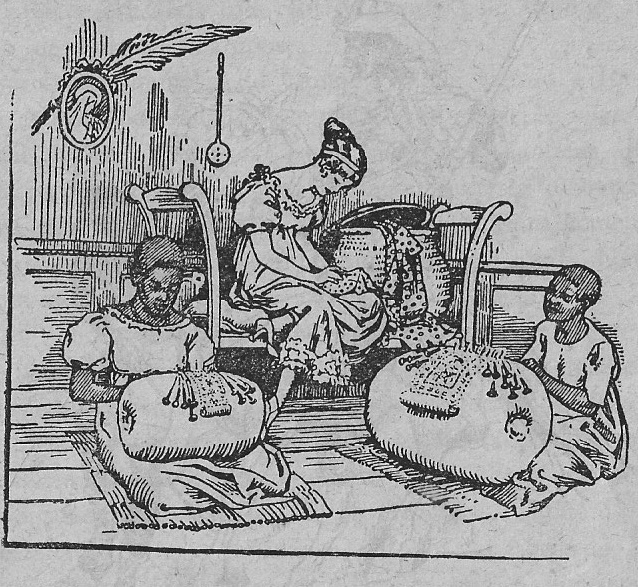
Os negros fugidos eram perseguidos e capturados a troco de pingue propina, por individuos appellidados “capitães do matto”, que viviam de tão odioso mistér. A gravura adeante representa um quilombóla algemado, recem-capturado por um “capitão do matto”.
No seculo 18 a população de negros escravos era superior em Minas á de brancos e mulatos. Si entre os negros se désse uma sublevação geral, a raça branca e a mestiça correriam risco de ser supplantadas pelo numero. Mas os negros eram muito broncos e estupidos; além disso, não tinham instrucção alguma: não conheciam o seu direito, não alcançavam a vantagem, que poderiam tirar, de se unirem todos contra a violencia dos brancos. A falta de instrucção é sempre causa de atrazo e sujeição.
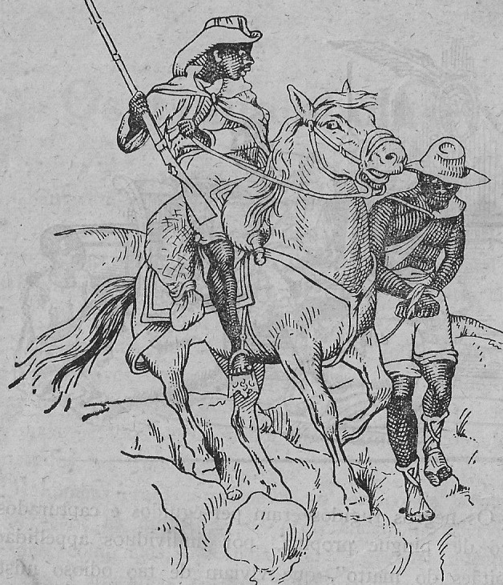
Esparramados pelo territorio de Minas houve no seculo 18 muitos quilombos, uns, maiores, outros, menores, que todos foram mandados destruir pelas auctoridades. Os tres quilombos mais notaveis foram: o de CAMPO GRANDE, que constitue objecto do presente conto; o de TENGO-TENGO (em Araxá), de que foi chefe notavel negro por nome Ambrosio; o da SERRA NEGRA, que foi destruido pelo capitão Ignacio de Oliveira Campos.
Os quilombólas do Campo Grande vieram a formar, no meiado do seculo 18, nação respeitavel e poderosa. Ahi viviam os negros como si fossem homens livres, cultivando leguas e leguas de terra, sem ser incommodados nem incommodando a ninguem. Queriam sómente a sua libredade, desejo muito legitimo em todo homem, seja embora um negro.
Sabedores os quilombólas do Campo Grande de que seus irmãos continuavam a ser maltratados pelos senhores, resolveram sublevar, ao mesmo tempo, quatro das principaes comarcas mineiras, assassinando todos os brancos e mulatos (exceptuando as mulheres, que seriam poupadas), e assumir o governo da Capitania. Foi designado para o levante o dia 15 de Abril de 1756, quinta-feira de Endoenças, dia em que o povo costumava estar todo nas cidades, assistindo os officios religiosos.
Si vingasse o sinistro plano dos miseros negros, seria um morticinio como poucos terá havido na Historia. Aconteceu, porém, que um dos negros, que estavam combinados para o levante, foi denunciar ás auctoridades a tenção de seus companheiros. As auctoridades mandaram logo fechar as egrejas e prevenir aos brancos e mulatos que se acautelassem.
Era então governador da Capitania José Antonio Freire de Andrada, Conde de Bobadella, que, temendo que o quilombo de Campo Grande assumisse maiores proporções, e para punir o levante mallogrado, incumbiu de exterminar os Palmares (1) de Minas ao Paulista Bartholomeu Boeno do Prado. Este desempenhou cabalmente as ordens recebidas. Era homem destemido e valente, mas de coração duro e espirito mau. Boeno, tendo marchado contra o reducto dos negros, exterminou-os a quasi todos, tendo sido de 3.900 o numero de escravos mortos. Não contente com isso, Boeno, para mais provar sua perversidade e malvadez, cortou as orelhas a todos elles, e, ao apresentar-se ao governador da Capitania, exhibiu-lhe, como prova de sua façanha, os 3.900 pares de orelhas cortadas! Cumulo da crueldade e da desfaçatez!
A expedição de Boeno constou de 600 homens; as despesas com a mêsma montaram a 2.750 oitavas de ouro.
Os escravos que escaparam com vida, esses foram marcados com ferro em brasa em um dos ombros, com a letra F., abreviatura da palavra Fugido.
De certo devia ser reprimido o plano sinistro dos negros quilombólas do Campo Grande, os quaes queriam assassinar indistinctamente todos os brancos e mulatos de Minas, sem lembrar-se de que só sobre os senhores, que maltratavam seus escravos, deveria recahir o peso de seu odio. Mas, por outro lado, é censuravel o requinte de malvadez de Bartholomeu Boeno, chegando ao extremo de decepar as orelhas aos negros exterminados e de vir depois exhibil-as como trophéo de victoria!
(1) PALMARES — Nome de celebre republica de negros, que existiu em Alagôas.
Não olvidemos que a escravidão é o maior dos attentados, e que o homem privado de sua liberdade é capaz, para readquiril-a, de ver-se arrastado á pratica das maiores atrocidades.
Perdoemos aos quilombólas do Campo Grande o plano sinistro, que não chegou a realizar-se, em attenção aos muitos beneficios e aos assignalados serviços, que a raça negra prestou ao nosso Estado. A ella devemos grande parte do serviço da mineração, da extracção do ouro e diamantes, — quasi toda a riqueza agricola e mineralogica do nosso opulento passado.
FIM
Indice
| Certidão | 2 | |
| Prefacio | 5 | |
| I | Os Bandeirantes | 9 |
| II | O Governador das Esmeraldas | 15 |
| III | A Lenda das Pedras Verdes | 20 |
| IV | Bórba Gato | 25 |
| V | O Anhanguéra | 30 |
| VI | As Minas de Ouro | 36 |
| VII | O Descobridor de Diamantes | 49 |
| VIII | O Livro da Capa Verde | 57 |
| IX | Cabeça de Ferro | 64 |
| X | Izidóro, o Martyr | 69 |
| XI | O Contractador de Diamantes | 77 |
| XII | O Capão da Traição | 87 |
| XIII | A Expedição do Caminho Novo | 92 |
| XIV | Morro da Queimada | 101 |
| XV | O Aleijadinho | 109 |
| XVI | Chico Rei | 113 |
| XVII | Barbara Heleodóra | 119 |
| XVIII | Marilia de Dirceu | 129 |
| XIX | O Caso da Maçã | 135 |
| XX | Tiradentes | 144 |
| XXI | O Escravo Fiel | 159 |
| XXII | O Diamante do Abaeté | 164 |
| XXIII | O Solitario de Lagôa Santa | 170 |
| XXIV | Os Quilombólas | 176 |
Obras do mesmo Auctor
| I | 1898 — Crótalos, primeiros versos, 70 pags., exgotada. | |
| II | 1904 — Cithara, novos versos, 90 pags., idem. | |
| III | 1909 — Da Linguagem em suas modalidades, these a concurso, 62 pags., idem. | |
| IV | 1911 — Historias Varias, contos, 222 pags. | 2$500 |
| V | 1911 — O Governador das Esmeraldas, peça nacional historica, em 3 actos, 104 pags., Livraria Alves. | 3$000 |
| VI | 1912 — Methodo de Analyse (Lexica e Logica), na 10.ª edição, 224 paginas, Livraria Alves. | 4$500 |
| VII | 1913 — Historias da Terra Mineira, contos regionaes, 180 pags., cartonado e illustrado. | 4$000 |
| VIII | 1913 — Diccionario de Affixos, 230 paginas, actualmente na 3ª edição, refundida e augmentada. | 4$500 |
| IX | 1915 — Inno[?]ncia, peça nacional, em 5 actos, 104 pags., es[?]ot[?]. | |
| X | 1916 — Contos Moraes e Civicos do Brasil, 240 paginas. | 3$000 |
| XI | 1916 — Syntaxe de Concordancia, monographia grammatical, 250 pags., Livraria Alves, na 6ª edição. | 4$000 |
| XII | 1917 — Mil Quadras Brasileiras (folk-lore) 240 pags., Livraria Briguiet. | 2$000 |
| XIII | 1917 — Pontos de Historia do Brasil, para o Estado de Minas (2º, 3º e 4º Anno Primario). | 3$000 |
| XIV | 1917 — Theatro das Crianças (Monologos e Dialogos, Comedias, Operetas, Auto do Natal, Hymnos, Córos, Bailados), 304 pags., na 4ª ed. | 4$000 |
| XV | 1917 — Pontos de Geographia, para o Estado de Minas (2º, 3º e 4º Anno Primario). | 2$500 |
| XVI | 1918 — Pontos de Historia Natural, para o Estado de Minas (2º, 3º e 4º Anno Primario). | 2$500 |
| XVII | 1919 — Grammatica Expositiva Primaria, 208 pags., broch., ora na 4ª edição. | 2$500 |
| XVIII | 1919 — Orthographia, Dictado, Pontuação, Crase, 208 pags., brochado, ora na 3ª edição. | 2$500 |
| XIX | 1920 — Diccionario de Gallicismos, 250 pags., ora na 2ª edição, revista. | 4$000 |
| XX | 1921 — Diccionario de Raizes e Cognatos, 2ª edição, obra premiada pela Academia Brasileira de Letras. | 12$000 |
| XXI | 1922 — Pontos de Instrucção Moral e Civica, 129 paginas. | 2$500 |
| XXII | 1923 — Theatro Civico Escolar, 150 pags. | 2$500 |
| XXIII | 1924 — Syntaxe de Regencia, 204 pags., ora na 4ª edição. | 4$500 |
| XXIV | 1925 — Pontos de L. Patria (1º, 2º, 3º e 4º anno primario). | 2$500 |
| XXV | 1924 — Espelhos, novos versos. | 3$000 |
| XXVI | 1926 — Datas Nacionaes, 200 pags. | 3$000 |
| XXVII | 1927 — Pontos de Arithmetica (de collaboração com A. Péret). | 3$000 |
| XXVIII | 1927 — Exames de Admissão (154 paginas), Primeiro Volume. | 4$000 |
| XXIX | 1929 — Noções de Cousas (methodo Decroly). | 2$500 |
| XXX | 1929 — Exames de Admissão, 2º Volume. | 4$000 |
| XXXI | 1930 — Methodo de Redacção, ora na 5ª edição. | 4$500 |
| XXXII | 1932 — Syntaxe de Construcção. | 4$000 |
| XXXIII | 1932 — Theatro Pequeno, 150 pags. | 3$000 |